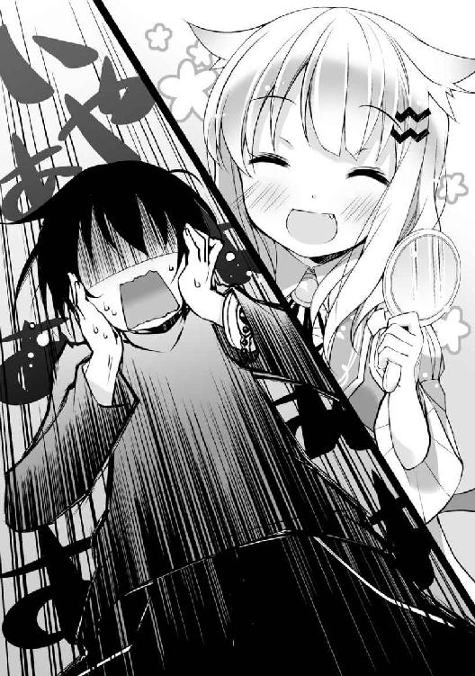

| 闇堕ち騎士がダンジョン始めました！！【期間限定 無料お試し版】 | |
| 東 亮太 | |
| (2014) | |

闇堕ち騎士がダンジョン始めました!!
東 亮太

角川スニーカー文庫
本作品の全部または一部を無断で複製、転載、配信、送信したり、ホームページ上に転載することを禁止します。また、本作品の内容を無断で改変、改ざん等を行うことも禁止します。
本作品購入時にご承諾いただいた規約により、有償・無償にかかわらず本作品を第三者に譲渡することはできません。
本作品を示すサムネイルなどのイメージ画像は、再ダウンロード時に予告なく変更される場合があります。
本作品は縦書きでレイアウトされています。
また、ご覧になるリーディングシステムにより、表示の差が認められることがあります。
薄暗い石造りの地下通路を、三人の人影が進んでいた。
黒マントを背負い、手に杖を構えた、歳若き魔法使い。
弓を携え、毛皮の防具に身を包んだ、エルフの女レンジャー。
筋骨隆々の肉体に武器は一切持たず、鍛え上げた拳のみで戦う、武術士の青年。
三人は一塊になりながら、慎重に通路を行く。辺りに時折落ちている薬草に目を向けることはない。回復アイテムの中でも最も低ランクなそれに頼る時期など、彼らはとっくに終えていた。
「──何かいるわ。前方三メートル、曲がり角の先」
左腕のブレスレットについたスキルジュエルの一つを光らせながら、レンジャーが囁いた。彼女の特技は、非戦闘時の補助全般。例えば──《索敵》。
「数は一体。種類は──」
「......巨大ネズミか小悪魔。どうせまた同じだろ？ もう五回ぐらい遭遇してるぜ」
魔法使いがうんざりした声でそう答えるなり、杖の先端に炎を込め、解き放った。
追尾式の小さな火球が、通路を走り曲がり角の向こうへ到達する。と、同時に軽い炸裂音が鳴り、曲がり角からよろよろと何かが飛び出してきた。
ネズミでも小悪魔でもない。命もないのに蠢く、朽ち果てた死体。
「ゾンビか──。ふむ、ハズレであったな」
「るせー。どのみちザコだっつーの」
生真面目な武術士の訂正文句に、魔法使いが強がって返した。体を燃やされたゾンビは、三人の前で反撃に転じるほどの力もなく、そのまま粒子と化して弾け、消滅した。
......やがて階段を見つけ、降りる。待っていたのは通路ではなく、巨大な広間だった。
「ラスボス部屋──。ここが最深部なのかしら。ドラゴンが待ち受けるダンジョンにしては、ずいぶん早く着いたわね」
「だな。深度５階とは、ずいぶん浅い場所がお好みのドラゴンさんみてーだな」
「......二人とも、お喋りもいいが油断するでないぞ？ 回復は済んでいるか？」
「必要ないっての。出てくるやつらザコばっかで、今んとこノーダメージだ」
静かに言葉を交わしながら、三人は杖、弓、拳と、それぞれの攻撃態勢を取った。
獅子竜迷宮──。最近町の近くの森で新しく発見されたこのダンジョンには、ドラゴンが潜んでいるとの情報がある。ドラゴンと言えば、そのウロコが装備品の素材として重宝されるレアモンスター。強敵だが、挑む価値は充分にある。
三人は緊張を取り戻し、油断なくその出現を待った。
「にゃふぅ、また冒険者さんに、あっさり最深部まで到達されちゃいました......。こうなったら──出番ですよ、ラスボスさんっ！」
......その頃、ダンジョンの裏に密かに存在している「楽屋」にて。
巨大な輪っか状の魔動装置に映し出される三人の様子を監視していた女の子が、勢いよく叫んでこちらを振り返った。
ネコミミみたいな髪型が特徴的な、小柄な少女だ。名はフェリスという。人間じゃない。魔族である。
「さあ、ちゃちゃっと行って、ちゃちゃっと倒しちゃってきてください！ ......で、ラスボス役は誰がやるんですか？」
フェリスはそう言って、そのネコ目をパチクリさせた。
彼女の横にある巨大な輪は、その名もセルフロードゲート。通称ＳＬＧ。輪の中にダンジョンの光景を映すと同時に、この楽屋とダンジョンを繫ぐ「門」の役割も果たす。
......要するに、これから誰かがこのゲートをくぐって、冒険者のもとへ出撃しないといけないわけだけど。
「セレナさん、行けますか？」
「えっ？ む、無理だってば！ 私、出撃しても水場がないと動けない......って、フェリスだって知ってるでしょっ？」
ダンジョンに置く薬草を小分けしていたもう一人の女の子が、戸惑った声で答えた。
彼女はセレナという。胸と腰回りを申し訳程度に覆っただけの、セクシーすぎるセパレートドレスが目を惹く。そして、今は普通に歩き回っているけど、ＳＬＧをくぐってダンジョンに出撃すると、下半身が魚になってしまうという特徴がある。
そう、要するに人魚だ。正式な種族名は、セイレーン。つまり魔族である。
「ええ、知ってて試しに言ってみました。......でも弱りましたね。ピヨさんは再起動まで時間がかかりそうですし......」
フェリスはそう言って、部屋の隅に目を向けた。そこには、ついさっきまでラスボスをやっていた巨大なニワトリ型の魔獣が、オッサンみたいにゴロリと横になって、いびきをかいている。別のパーティーから受けたダメージが、まだ回復しきってないのだ。
「じゃ、じゃあタニヤさん、行けますか？」
「ぎゃう？ タニヤ休憩中。昼ご飯うめーです」
続いて名を呼ばれた褐色肌の女の子が、乾いてカッチカチに固まったパンをガリガリ齧りながら、カタコトで言い返した。ちなみに、もちろん魔族である。
フェリスは「にゃふぅ」と溜め息をつくと、続いて──。
「じゃ、やっぱり行けるのは一人だけですね！」
......そう言って、僕を見た。
そう、この僕──ナオハル・アサクラを。
「え、僕っ？」
「はい、ナオハルさん！ そんなわけでラスボス役、よろしくです！」
「......いやフェリス、それはできない」
フェリスの言葉に、しかし僕は険しい表情で首を横に振った。
そう、僕にはできない。なぜなら、ＳＬＧの向こうにいる三人の冒険者。あれは──。
「あの三人......僕が冒険者だった頃の、パーティー仲間なんだよ！」
魔法使いのシオンも、レンジャーのライラも、武術士のタオも。ああ、みんな知り合いだ。つまり──僕もまた元冒険者。ここにいる中では、唯一の人間なのだ。
だがフェリスは、まったく気にする素振りを見せない。
「えー？ いいじゃないですか、べつにお友達と戦ったって。どうせ倒したって死ぬわけじゃないんですよ？ ダンジョンの外に強制転送されるだけですよ？」
「い、いや、そういう問題じゃないんだ」
「私達だって、倒されても楽屋に戻ってくるだけですし」
「だから、そういう問題じゃなくって──」
確かにダンジョンってのは、とっても安全にできている。受けるダメージを疑似的なものに変換して、誰も傷つかず、誰も死なない、便利なシステムが構築されている。
ただ──本当に、そういう問題じゃないんだ。
「いいかフェリス、考えてもみてくれ。ある日突然行方を晦ませてしまった冒険者仲間が、ダンジョンで魔族やってましたなんて状態で顔を合わせたら......」
そう、合わせたら──。
「すっごく気まずいじゃないかっ！」
僕はあくまで険しい顔で、そう叫んだ。ああ、ガチで気まずい以外の何物でもない。
「ははあ、なるほど。つまりアレですね？ 同窓会で久々に子供時代の友達みんなと再会したら、俺一人前科持ちでしたみたいな、そういう感じですね？」
「その喩えはひどいけど、まあだいたいそんな感じ。ってことで僕は──」
「いいえ、行ってください！」
僕の懇願を無視して、フェリスは鬼のように叫んだ。
「ちゃんと冒険者さんを倒さないと、魔王様から撃退ボーナスが貰えないじゃないですか！ 少しでも収入を上げないと、私達がどうなるか──。ナオハルさんだって知ってますよねっ？」
「あ、ああ。知ってるさ。......一ヶ月以内に１００万Ｇ、ね」
そう、一ヶ月以内に、１００万Ｇ。それだけの収入を稼げなければ──。
......潰れてしまうのだ。この獅子竜迷宮という名の、ちっぽけなダンジョンは。
「頑張ってくださいナオハルさん！ 私のために、何としても！」
グッと拳を握り締め、フェリスは懸命に僕を叱咤した。......で、僕からの質問。
「ちなみに、フェリスがラスボスをやるっていう選択肢は？ あの三人、明らかにドラゴン目当てで来てるみたいだけど」
「何言ってるんですかナオハルさん。私ここの迷宮長ですよ？ そんな肉体労働するわけないじゃないですか。そういうのは部下の仕事なんです！」
小柄な割に態度だけはでっかく。フェリスは──この獅子竜迷宮を統べるドラゴンは、呆れる僕に向かって、堂々と言い放った。
......獅子竜迷宮の、とある営業日の一幕である。
＊
人類が魔王軍との戦争に勝利してから、二十年──。
平和を取り戻したかに見えた剣と魔法の世界・ガリステリア。しかし魔王の脅威はまだ去っていなかった。魔王の配下である魔族達は、世界各地に存在するダンジョンを根城に、再び人類に反旗を翻すべく戦力を蓄えていた。
だからこそ、今なおダンジョンに挑み、戦いを続ける者達がいる。
並みいる魔族や魔獣を倒し、宝箱からやつらの武器や軍資金を奪取して、その戦力を削ぎ、世界の平和を維持する──。それはギルドの名のもとに団結した、勇ましき戦士達。
そう、冒険者だ。
......ってのは、あくまで表向きの話。
戦争が終わって二十年──。戦いで活性化した世界の景気を維持すべく、冒険者ギルドのお偉いさん達に頼まれて、今なお人類の敵のふりを続けている者達がいる。
彼らは世界のあちこちに、ダンジョンという隔離された戦場を用意し、お宝をエサに何も知らない一般冒険者を呼び寄せ、誰も死なない絶対安全な迷宮攻略を提供する。そしていただいた入場料を糧に、地道な労働生活を送っている。
それは言わば、冒険者をお客にした「ダンジョン」という娯楽施設の、経営者。
そう、僕ら──魔族のことだ。
１
そもそも話せば長くなる。
どうしてただの弱小冒険者だった僕が魔族になった挙句、今にも潰れそうなダンジョンで、１００万Ｇなんて大金を貯めなきゃならなくなったのか。
始まりは──ある伝説の魔剣だった。
「......ついに辿り着いたんだ。千魔迷宮、深度１００階──」
その日。僕はとあるダンジョンの最深部で、緊張に震えていた。
千魔迷宮──。僕が住む町の界隈で最もよく知られた、超巨大ダンジョン。
最大深度は１００、つまり地下１００階。中は無数のモンスターや危険な罠に溢れ、しかも潜るたびに、ダンジョンの構造がランダムに変化する。いわゆる「ストレンジ・ダンジョン」と呼ばれるタイプのものだ。
その攻略に必要なレベルは、最低でも50。しかもよほど運がよくなければ、最深部に辿り着くのは困難だと言われている。なのに──。
敵も宝箱もガン無視し、ただ階段だけを求めて突き進んだ結果。気がつけば、僕はその千魔迷宮の深度１００階に、見事に到達してしまっていた。
ナオハル・アサクラ。十六歳。クラスは剣士。レベルは──年齢と同じ、まだ16。
「うあぁ、ヤバすぎるって！ これからラスボス戦なのに、レベル16でソロだよ！」
薄暗い大広間にポツンと佇み、僕は改めて、この不利な状況に一人身悶えした。
もちろん、自力でここまで辿り着けたわけじゃない。一緒に来てくれたいつもの仲間三人は、深度82階で遭遇した強敵に敗れ、すでにダンジョンの外に撤退させられていた。
敵はルサルカという名の魔族だった。種族はゴースト。つまり、人間から魔族へと転身したアンデッドだ。全身に濡れたドレスを張りつかせたその姿から、元は水死者だろうと言われている。この千魔迷宮でも特に要注意とされている危険な存在だ。
ルサルカは濡れた銀髪を振り乱し、その青い美貌にゾッとするような笑みを浮かべながら、三人を水属性魔法の一撃で葬った。
......いや、正確には、みんなのブレスレットについている《生還のオーブ》がダメージを肩代わりしてくれたから、本当に命を奪われたわけじゃないけど。
『──行けよナオハル。ここは俺達が食い止める！』
魔法使いのシオンが最後に残した言葉が、僕の胸をよぎった。
『──大事な彼女にいいとこ見せたいんだろ？ へへ、だったら最後ぐらい、ソロで決めやがれっての！』
......そう、シオンが言ったとおりだ。僕がこの千魔迷宮の最深部を目指したのは、何より「大事な彼女」のためだった。
「リオ──」
その名を口にし、どうにか震えを抑え、乱れた息を整える。
そう、あと少し。ここまで来たら、あと少しで手に入るはずなんだ。
伝説の魔剣《ゾルディバルト》──。かつての戦争で魔王軍の幹部が振るい無双したと言われる、最強の武器が。
そのためには、魔剣が眠ると噂されるこの千魔迷宮の最深部で、宝を守っているラスボスを倒すこと。そいつがどんなやつかは、実際に遭ってみるまで分からないけど──ってのは、ここのラスボスが、毎回何が出るかランダムで変わるから......らしい。
（そう、ここまで来たらやるしかない──）
僕は横目で自分のブレスレットを確かめた。《生還のオーブ》が持つ緑色の輝きは、そのまま持ち主の──つまり僕の体力を表す。今は満タンだ。シオンが別れ際に、回復魔法を唱えてくれたからだ。
「──来い！ 何が現れようと、僕は勝ってみせる！」
緊張で汗ばんだ手にロングソードを握り締め、僕は精一杯勇ましく叫んだ。
＊
リオーネ・アイシュタルは、僕の幼馴染だった。
ニックネームは「リオ」。長い黒髪がきれいな、誰もが認める美少女だ。
歳も僕と同じ十六歳。でも性格はクールで、ちょっと大人びている。さらに涼しげな切れ長の瞳と、物静かな雰囲気が、その大人っぽさを強調している。
けれど話してみると、とても人当たりがいい。だから、誰からも好かれる。
──僕もリオのことが好きだ。小さい頃から仲よしの友達として一緒に過ごしてきたけど、心の中ではずっと憧れ、慕っていた。
リオが冒険者になると言い出した時から、僕も同じ道を歩もうと決めた。彼女の選んだクラスが剣士だったから、僕も剣士を選んだ。僕はそれぐらいリオのことが好きだった。
だけど──。
「ねえリオ、今日はどこへ行ってきたのさ」
「煉獄迷宮よ。魔王城のそばにある、デーモンばかりがいるとこ」
昨日の夕方、いつもの静かな喫茶店で、リオは僕の質問にサラリと答えた。
冒険者同士の食事は酒場で......と相場が決まっているけど、僕らは毎日ダンジョンから帰ってきたら、ここで落ち合ってお茶を飲むことにしている。
最初にここへ誘ってくれたのは、リオの方だった。こっちの方が人が少なくて落ち着けるからと。もちろん僕だって、ここで誰にも邪魔されずリオと二人きりになれるなら、あんなむさいオッサンだらけの酒場なんか願い下げ──いや、それはさて置き。
「煉獄迷宮......。くっ、相変わらずハイレベルすぎる......」
僕は思わず絶句した。確か煉獄迷宮といえば、適正レベル１２０以上とか言われている超難関ダンジョンだ。その難関ぶりは、もはや千魔迷宮の比じゃない。
「......ちなみに、ソロで？」
「ええ。私、パーティーは組まないから」
またもサラリと答えるリオ。そう、彼女は──冒険者として天才だった。
僕と一緒に冒険者デビューして一年。そのレベル差は見る見るうちに開き、今ではすっかりこの有り様だ。いったいリオの体のどこに、そんな力が秘められているのか......。いつもながら不思議に思う。
リオの装備はとても軽い。ミニスカート状のフリルと一体化した薄手のブラウスの上から、革製のブレザー・メイルをまとった、学校の制服を思わせるような軽装備だ。均整の取れた女の子らしいセクシーな体つきが、防具越しにもしっかりと確かめられる、とても嬉しいデザインの......ってこれ、ハイレベルの冒険者が着るようなものじゃないし。
（むしろレベルのことを考えたら、ミスリルとかドラゴンのウロコとか、そういう素材でできた鎧の方が合ってるよな。あとは......あ、ビキニアーマーも絶対似合う！）
いや、そういう話じゃなくて。
ちなみに防具だけでなく剣も、伝説や名匠とは程遠い、ごく普通の鉄製ロングソードだ。こんなので、いったいどうやってデーモンと渡り合ってるんだろう。
（ていうか、僕だって似たような装備なんだけどな）
こちらも簡素な革鎧にロングソード。いや、僕の方は、単にレベル相当とは言え。
いつだったか、シオンにこう言われたことがある。
『──なあ、あの子マジでお前の彼女なの？ スペック高すぎて全然釣り合ってねーぞ』
そう、釣り合ってない。だからこそ──僕は、願ったのだ。
強くなりたい、と。
リオと並ぶために。絶対に。
「ナオハルは、今日も千魔迷宮だったの？」
リオが笑顔で訊ねてくる。僕は「ああ」と頷いた。
半月ほど前、ギルドの情報網に、新しいお宝の噂が入ってきた。伝説の魔剣《ゾルディバルト》が、千魔迷宮の深度１００階で目撃されたという。
いくら高難度とはいえ、適正レベル１００に満たないダンジョンに、伝説の魔剣......。正直奇妙な気もしたけど、ギルドの情報の正確さは折り紙つきだ。僕はこの機を逃すまいと、すぐに飛びついたってわけだ。
「確か、通い始めて今日で十八日目よね。戦果はどうだったの？」
「う......、深度75階で魔獣密集地帯に飛び込んで、ゲームオーバー......」
「そう。......ねえナオハル、あまりパーティーに迷惑かけちゃダメよ？」
リオはそう言って、僕を軽く窘めた。恋人というよりは、不出来な弟の世話を焼く姉みたいだ。そこがちょっと悔しいやら、くすぐったいやら。うん。
「急ぐ必要なんてないじゃない。まずは簡単なダンジョンできちんとレベルを上げて、それから千魔に挑んでも遅くないわよ？」
「けどさ、この辺のダンジョンって、どこも厄介なとこばかりじゃないか」
僕は口を尖らせて答えた。
僕らが暮らしているこの町は、冒険者ギルドの本部が構えられた、言わば戦力の集結地点だ。そのせいか、近場にあるダンジョンはどこも攻略難度が高い。一番簡単と言われているダンジョンの深度１階でさえ、毒蛇がうようよしていて、ちょっとレベル上げ作業をするだけで大量の毒消しが吹っ飛んでいく。
正直、僕みたいな弱小冒険者が拠点とするには、なかなか厳しい町なのだ、ここは。
「今吞気にレベル上げなんかしてたら、他の誰かに魔剣を取られるのがオチだよ」
「そんなに魔剣が欲しいの？」
「欲しいさ。強さの証だから」
僕は、やや毅然とした口調でそう言うと、リオに向き直った。
「ねえリオ、もし──もし僕が魔剣を手に入れたら......。僕と二人で、パーティーを組んでくれないか？」
「剣士が二人だけのパーティーって、すごくバランスが悪いと思うわよ？」
「うっ。......ガチなツッコミありがとう」
思わず肩を落とす僕。......と、不意にリオが手を、僕の手の上に優しく重ねてきた。
「ふふ、冗談よ。二人ならソロよりも心強いわね。ありがとう」
「そ、そう言われると助かるよっ！ ......あれ？ そう言えばリオって、どうしていつもソロなのさ。それだけ強いんだから、結構いろんなところから声がかかるんだろ？」
「え？ だって......パーティーを組むならナオハルと二人でって、決めてるから......」
いつになく頰を赤らめながら、リオははにかんだ声で、確かにそう答えた。
同時に僕は椅子を蹴り倒し、立ち上がって声高に叫んだ。
「リオっ！ 僕は絶対に魔剣を手に入れてみせる！ 何なら明日にでもすぐっ！」
「え、ええ。楽しみにしてるわ......。ナオハル、恥ずかしいから座って？ ね？」
周りの視線を気にしながら僕の袖をツンツン引っ張るリオに、僕は満面の笑みで、グッと決意の拳を握り締めてみせた。
＊
──とまあ、そんなハッピーな出来事なんかもあって、今。
僕はついに千魔迷宮の最深部で、ラスボスと対峙した......のはいいんだけど。
「う、ウソだろ？ ここまで来て、こんなのが出てくるなんて......」
震える手で剣を構えながら、僕は目の前にうずくまる大きな怪物を見つめた。
......ドラゴンだった。
そう、ついに僕の前に現れたラスボスは、デーモンと並ぶ強敵中の強敵だった。
よりにもよって。本当に、よりにもよって。
「はは、やだこれ。敗北確定じゃないか......」
半泣きになりながら、僕はおっかなびっくり、敵の様子を窺った。
ドラゴン──と言っても、その姿は様々だ。巨大な翼を持つもの。頭が複数あるもの。蛇のようなもの。鳥のようなもの。火を吐くもの。氷を操るもの。瘴気に満ちたもの......。
けれど今僕の目の前にいるドラゴンは、そのどれとも違っていた。
大きさは、ざっと見て四人掛けの馬車ほど。全体的なフォルムは亀に近い。腹這いになった六本脚の体は丸みを帯び、その背中には、トゲだらけの甲羅が被さっている。一応申し訳程度に小さな翼も生えているけど、見た感じとても飛べそうにない。
しかも、その頭の形が......。
「......ネコ？」
そう、ネコに似ている。ピョコリと突き立った耳。ウロコを覆うように生えたふさふさの毛。縦長の瞳に、長いヒゲ。ついでに、ゴロゴロと唸る声も、ちょっとネコっぽい。
それでも──間違いなくドラゴンだ。ドラゴン種特有の、宝石のような眩いウロコが、その証だ。何よりこいつは、奥にある宝箱を守るように、僕を睨み据えている。
そうだ。この強敵を倒さない限り、僕は魔剣を手に入れることが──リオの想いに応えることが、できない──。
「くそっ、やるしかない！」
絶対に勝ってやる、と思った。勇気というよりは、ほとんど自棄だった。
僕は構えた剣を振りかぶり、唸るドラゴンに向かって、ただ闇雲に突進した。
「てぇぇぇぇいっ！」
「うにゃーっ！」
......確かな手応えの直後、そんな情けない鳴き声が、千魔迷宮の最深部に響き渡った。
それがドラゴンの悲鳴だと気づくのに、数秒かかった。
「......なに今の。もしかして......勝った？」
見れば、僕の剣でおでこをどつかれたドラゴンが、見る見るうちに粒子となって消えていく。あとにはその落とし物である、ウロコが一枚。これは......つまり、本当に勝ったってことでいいんだろうか。ドッキリではなく？
「いやいやいや、何かの間違いじゃないのか？ こっちはまだレベル16なのに、こんなにあっさりとドラゴンが沈むなんてあり得ないだろ？」
しかし、すでに消滅したドラゴンが、それに答えてくれるはずもなかった。
運か奇跡か八百長か。何だか分からないまま、僕はとりあえずウロコを拾って、アイテムバッグにしまうと──。
......大広間の奥にある豪華な宝箱の前に、そっと歩み寄った。
「あ、開けていいんだよな......？」
誰にともなく確かめながら、おずおずと蓋に手をかける。鍵はかかってない。
手にズシリとくる重みが心地いい。力を込めて蓋を持ち上げると、そこには一振りの大振りな剣が、細かな装飾を施した豪華な鞘に収まって、厳かに安置されていた。
手に取る。箱の蓋よりも遥かに重い。僕は胸をときめかせながら、両手で力いっぱい、剣を鞘から引き抜いた。
ギラリ、と鋭い輝きが った。刃の上を流れるようなその光に、僕は思わず見入った。
った。刃の上を流れるようなその光に、僕は思わず見入った。
「魔剣《ゾルディバルト》──。ついに手に入れたんだ！ この僕が！」
力を込めて柄を握り締めた。そして──。
不意に、剣身から溢れる光が、漆黒に染まった。
眩かったはずの光が闇に染まり、僕の瞳を貫いた。
（な、何だこれ......っ！）
思わず手を離そうとしたが、無駄だった。まるで全身の神経が強張ったかのように、僕の体はピクリとも動かない。
......ドクンッ！
同時に、「何か」が心の中で蠢きだした。
何かとてつもない欲望のような、怒りのような、悲しみのような......。
正体は分からない。ただ、それがとても良からぬ感情だというのは、理解できた。
その感情が、僕の心の中で急速に膨れ上がっていく。胸を満たし、心を埋め、髪から爪先まで一気に染め上げていく。
（ダメだ、吞まれる──っ！）
心の中で悲鳴を上げながら、僕はその意識を薄れさせていった。
......僕の冒険者人生は、こうして幕を閉じた。
２
「休憩入りまーす！」
昼下がりの、とあるハンバーガーショップの厨房にて。
慌ただしい客ラッシュをどうにか乗り越え、ようやく休憩の順番が回ってきた俺は、周りに一声かけて、奥の休憩室に入った。
折り畳みテーブルとパイプ椅子が少し並ぶだけの、簡素な部屋だ。俺の他にもう一人、最近入ったばかりのバイトの女子高生が、おにぎりを頰張っている。
「あ、尚春さんお疲れ様です。......あの、こないだはありがとうございましたっ」
「ん？ ああアレか。べつに大したことじゃないよ。気にすんなって」
ペコリと頭を下げてきた彼女に、俺は何となく照れ笑いしながら答えた。
あれは一昨日のこと──。この子に絡んでいたセクハラ客に、俺がぶつかって水を引っかけてしまうというアクシデントがあったのだ。......ああ、もちろんわざとやった。
それからこの子にモップを取りにいかせ──という名目で奥に逃がして、あとは俺がひたすら平謝りしながら、その客のズボンを丁寧に丁寧に拭いてやった。そいつが気味悪がって退散するまで、しつこく、ねちっこく、延々と。
「......でも尚春さん、あとでメチャクチャ店長に叱られてましたよね」
「ん、まあそりゃ、お客様に水ぶっかけちゃぁ叱られるさ」
「本当のこと言えばよかったんじゃないんですか？ 私を助けようとしたって......」
「残念ながら、それじゃ誰も許してくれないよ。いついかなる正義も、お客様に水をぶっかけていい理由にはならない──ってな。......ま、心配するなって。俺こういうの慣れてるからさ。もしまた何かあったら、遠慮なく相談してくれよ」
俺が軽く笑ってそう言うと、女子高生も笑顔になって、コクンと頷いた。
──そう、世の中ってのは、ずいぶんと理不尽に作られているものだ。でも、その理不尽からこうして一人の女の子が救われたんだ。俺の勝ちってことでいいだろ。
......俺はそんなことを思いながら、自分のロッカーから携帯ゲーム機を取り出した。
「あれ？ 尚春さん、お昼ご飯食べないんですか？」
「用意してない。ははっ、俺カネないから」
（実は店長に叱られた時に減給食らった......なんて、さすがに言えないよな）
世の中の理不尽は、結構具体的な形で襲ってくる。覚悟して盾になったとはいえ、そのダメージは意外と深刻だった。
（さて、財布の中はガチで空っぽ......。俺、次の給料日まで生きられるのか？ せめて５００円だけでもあれば......ええと、深夜のスーパーで半額の菓子パンが一個50円だから......そう、あと十日間も固形物が食えるのにっ！）
まかないを出してくれるような気前のいい店でもない。とにかく今の俺は、何かで空腹を紛らわせるしかないのだ。
......というわけで、休憩中はゲームにのめり込むと決めていた。
スリープ状態にしていたＲＰＧを起ち上げると、ちょうど画面はイベントシーンの真っ只中。ビキニアーマーの可憐な美少女剣士が、俺に向かって微笑んでいるところだ。
しかしこんなエロ可愛い美少女よりも、今の俺の関心はただ一つ。
（あーあ、俺も異世界で冒険者になって、所持金カンストさせたい......）
そんなどうしようもない現実逃避に、俺が浸っている時だった。
......不意にどこか遠くで、何かの音が響いた。
軽くて小さな金属が、アスファルトを打つ音。これは──。
「──５００円玉が道に落ちた音だっ！」
「え、どうしたんですか尚春さん？ 私何も聞こえませんでしたよっ？」
いきなり立ち上がった俺に驚く女子高生。だが──間違いない。空腹と金欠で研ぎ澄まされた俺の鋭敏な聴覚が、アスファルトの真ん中に落ちた５００円玉を捉えたのだ。
「──こいつは拾いにいくしかないぜっ！ 命に代えてもなっ！」
俺は無駄に爽やかな笑顔でそう叫ぶと、音のした方に向かって一気に走り出した。
休憩室のドアを開け放ち、厨房に出る。もっと先だ。驚いて怒鳴る店長を無視して、カウンターを抜け、店内へ。もっと先だ。客が道を塞ぐ。押しのけ、さらに走る。
俺は自動ドアをこじ開け、店の外へ飛び出した。道路だ。
「あった、５００円っ！」
やはり俺の耳は正しかった。道路の真ん中に、銀色の５００円玉が一枚、昼下がりの太陽を浴びて神々しく輝いている。俺はためらわず飛びついた。
「よっしゃ５００円ゲットぉっ！ 俺はあと十日間生きられるぅっ！」
......そう叫んだ直後だった。
すぐ間近に、一台のトラックが迫っていたことに、俺が気づいたのは。
そして──。
＊
「──うわ何だ今の！ ......夢？」
何だかよく分からない悪夢にうなされて、僕はようやく目を開いた。
どうやら眠っていたらしい。横たえた体の下に、いささか硬めのソファーを感じる。
「うぅ......ここは？」
「──あ、気がつきましたね？ おはようございます、えっと......ナオハルさん！」
体を起こすと同時に、どこか幼さの残る少女の声が、不意に僕の名を叫んだ。
驚いて傍らを見る。そこには、声の主と思しき女の子が木の椅子にちょこんと腰を下ろし、好奇心に満ちたまっすぐな目で僕を見つめていた。
歳は僕と同じか、少し下ぐらいだろう。クリッとした瞳が可愛らしい子だ。背は小柄で、服装はお腹部分の露出した変な長袖ブラウスに、フリルで飾られたキュロットスカート。そこから伸びる細い脚には、ピッタリしたニーソックス。
ついでに服の背中には、コウモリの翼みたいな形の、奇妙な飾りが見える。新手のリボンだろうか。とりあえず、冒険者の格好じゃない。
髪は肩まであるツヤツヤのライトゴールド。その頂の左右からは、癖毛なのか何なのか分からない三角形が二つ、ぴょこんと飛び出ている。まるでネコの耳みたいだ。
......ん？ ネコ？
「ここは休憩室ですよ、ナオハルさん。いやぁ、さっきは急にぶっ倒れちゃったんでビックリしましたけどね。とりあえずここに運んで寝かせたら意識も戻ったみたいだし、もう大丈夫だと思います。ええ、たぶんっ」
「あっそう？ よく分からないけどありがとう。......で、どうして僕の名前を？」
「やだなぁ、そのブレスレットに彫ってあるじゃないですか、ナオハル・アサクラって。なんか変わった名前ですね。ちなみに私の名前は、フェリスクス・シュローヌって言います。長いんで『フェリス』って呼ばせてあげますよ？ で、ナオハルさんは名前が変わってますねって話ですよ。生まれはどちらですか？」
「ああ、僕はこの近くだけど、親が東国出身で......。フェリス、君よく喋るね」
あと、なんでちょっと上から目線なんだ。いやそれはともかく──。
僕はふらつく頭を押さえながら、もう一度状況を確かめようと、周りを見た。
白壁に囲われた広めの部屋だ。床には絨毯が敷き詰められ、その上にいくつものテーブルや椅子が並ぶ。どれも簡素なもので豪華さはないが、造りだけならちょっとしたお屋敷のサロンみたいだ。
でもって僕は、その片隅にあるソファーに寝かされていた。
すぐ傍らにはフェリス。その横には、僕の持っていたアイテムバッグが、無造作に放り出されている。どんな大きさの物でも入るくせに、入れるサイズに関係なく合計二十個までしか物が入らないという、わけの分からないバッグだ。ちなみにレベルが上がると、より容量の大きなものが、ギルドから貰えることになっている。
で、そんな僕のバッグに重なるようにして、大事そうに置かれているのは──。
「あ、魔剣っ......」
そう、魔剣《ゾルディバルト》だ。僕は意識を失う前、これを抜いて、それから──。
......ん、それから？
「ねえフェリス、ここどこさ」
「だから、休憩室ですってば」
「ああ、休憩室はいいんだけど、どこの休憩室？」
「やだなぁ、ナオハルさんってば、そんな簡単なこと訊かないでくださいよ」
フェリスはそう言うと、僕を小馬鹿にしたように口元を歪め、堂々と言い放った。
「千魔迷宮の休憩室に決まってるじゃないですか」
「千魔迷宮の？ それはいわゆる、回復ポイント的な意味で？」
「いえ、回復ポイントじゃなくて、文字どおり休憩室です。勤務の合間にご飯を食べたり、タバコを吸ったり仮眠を取ったりする場所です。ほら、あっちでお弁当食べてる人達がいるでしょ？」
確かに奥の方で、年も性別もバラバラな何人かが、弁当を食べたりくつろいでいるのが見える。耳がエルフっぽいのに褐色肌の人やら、八重歯が吸血鬼並みに長い人やら。
妙な集団だな──と思いながら眺めていると、不意にその中の一人と目が合った。
歳は二十歳手前ぐらいか。しっとりとした長い銀髪の、優しそうなお姉さんだ。
......と、そのお姉さんが立ち上がり、こちらにつかつかと歩いてきた。
「どうフェリス、その子気づいた？」
「はい、やっと起きてくれましたよ。でも、正直この人にいろいろ説明するのめんどくさいんですけど......、ルサルカ先輩、もう戻っちゃいます？ 私の代わりに説明とか──」
「だーめ。ちゃんと助けたフェリスが責任持って世話しなさい。それに私、もう休憩終わりだし。フェリスはこの後は、上がり？」
「はい。タイムカードはまだ押してませんけどね！ それじゃ、お疲れ様でーす！」
何やら和やかな会話を交わし、フェリスは笑顔で、銀髪のお姉さんに手を振った。
お姉さんも「お疲れ様」と笑顔で手を振って、部屋から出ていく。まあ、それだけなら、どこにでもありそうな平和な仕事場の風景だ。
ただ──千魔迷宮？ あと、ルサルカ先輩って？
「ねえフェリス、今の人......誰？」
「誰って、私の先輩ですよ。ナオハルさんもさっきダンジョンで会ったじゃないですか。まあ、遭遇して五秒でパーティー壊滅してましたから、覚えてるとしてもトラウマぐらいでしょうけどねっ」
なぜか我がことのように誇らしく叫ぶフェリス。しかし......分からない。もしフェリスの言葉に従うなら、今の優しそうなお姉さんは──。
「......もしかして、青くてずぶ濡れで笑顔がすっごく怖くて、さっき僕の仲間を一撃で倒しちゃった、あのゴーストのルサルカのことか？ で、でも今の人、全然青くなかったし、ちょっと髪がしっとりしてただけだし、すごく優しそうだったし──」
「はい、ルサルカ先輩は優しい先輩さんです。そもそも私達って、現場に出てる時は、見た目がかなり変わりますからねー。すぐに気づかなくても仕方ないです。ドンマイ、ナオハルさん！」
「いや、なんでそこで慰められるのさ、僕」
ただ、ここまでの話をまとめると──。今のお姉さんは、やはりダンジョンで僕らを襲った、あのルサルカ。ただしその時と見た目が違ったのは、彼女が「現場に出てない時」だったから。その現場ってのは、要するに千魔迷宮のことで、ちなみに僕らが今いる場所は、千魔迷宮の休憩室──。
......あ、何か繫がった気がする。
「ってことは......まさかフェリスも？」
「ええもちろんです！ いい加減気づいてくださいよぉ」
そう言うとフェリスは、僕に向かってスッと右手を差し出した。
べつに握手を求めたわけじゃない。手の甲に張りつく、あるものを見せるためだった。
「これは......ウロコ？」
それは大きな一枚のウロコだった。もっとも、ウロコと言っても、見た目は磨かれた宝石のように、虹色に輝いている。それがどでかいワンポイントアクセサリーのように、彼女の両手の甲にペタリと張りついているのだ。
しかもこのウロコ、見覚えがある──。
僕はふと思い出し、そばのアイテムバッグからそれを取り出した。そして見比べる。
「同じだ......」
形、色味、輝き。何もかもが一致している。ってことは。
「ま、まさかフェリスって......」
「はい、何を隠そうこの私！ さっき深度１００階でナオハルさんが倒してくれやがった、あのラスボスのかっこいいドラゴンです！ あ、この翼も自前ですよ？」
言葉を失う僕に、フェリスは得意げにそう言って──。
にゃはっと、可愛らしい笑みを浮かべてみせた。
３
かつて人類と魔族が争っていた時代──。このガリステリアは栄えていた。
武器や防具が大量に製造され、回復薬が飛ぶように売れ、宿屋はどこも冒険者で満室だった。町、農村、鉱山、港......。すべてが賑わい、常に活気づいていた。
いわゆる「戦争景気」ってやつだ。皮肉なもので、世界が平和から遠ざかるほど、経済は潤うようにできているのだ。
だけど──戦争が終われば、あとには暗黒の不況が待っている。
それだけは回避しなければならなかった。少なくとも、偉い人達はそう考えた。
そこで終戦後、冒険者ギルドの上層部から敗戦者である魔王へ、ある要請が為された。
──これから先も、魔族は冒険者と戦いを続けること。
ただしその戦場は、一般市民に影響のない限定された場所に留めること。その上で、冒険者がその戦場へ積極的に繰り出したくなるような、魅力的な何かを用意すること。さらに、もちろん戦いの中で死傷者が出るのは避けるべきだし、この計画を円滑に進めるためにも、人類だけでなく魔族側にも、何らかの経済的メリットがなければならない......。
非常に難しい条件だった。しかし試行錯誤の果てに、魔王はある画期的なシステムを生み出した。それが──。
「プレゼンテッドバイ魔族！ 至高のバトルとお宝が、無限のスリルと興奮を冒険者にお約束する、究極の娯楽施設！ その名も、ダンジョンっ！ ......なんです」
二十分後──。なおも千魔迷宮の休憩室にて。
フェリスが教えてくれた驚愕の真実を前に、僕はただひたすら打ちひしがれていた。
「はは、何それ。ウソだろ......？」
「ウソじゃないですってば！ ナオハルさんってば、意外と疑り深いんですね」
そう叱られても、信じたくなんかない。何しろ僕の純粋な冒険者魂が、凄まじい勢いで粉々に打ち砕かれたんだから。
「し、知りたくなかったさ！ そんな夢のない真実！」
「そうですか？ でも冒険者さんって、どうせ死なないのをいいことに、結構遊び半分でダンジョンに来てる人が大半ですよ？ お宝ヒャッハー、試し斬りヒャッハーです。だったらもう、娯楽施設でも何の問題もないじゃないですか」
「大問題だよ！ 強さを求めて通ってた先が遊園地でしたとか、笑えすらしないよ！」
「だからって泣かないでくださいよ。だいたいナオハルさんの方から質問してきたんじゃないですか。『どうして倒したはずのドラゴンがピンピンしてるの？』『どうして魔族が僕を介抱してくれたの？』『どうしてフェリスはそんなに可愛いの？』って。......そんなに根掘り葉掘り訊かれたら、そりゃ私だって、言っちゃいけないことまでドカンと大暴露しちゃうに決まってますよ」
「......その三つ目の質問、僕したっけか？」
「あ、ちょっと違いました。『どうしてドラゴンが人間と同じ姿になってるの？』でしたっけね、そう言えば。......まあその辺は、私達戦う時は変身しますよってことで」
フェリスは割と適当な回答で長話を締めくくると、備えつけのティーポットのお湯をグビグビ飲んで、喉を潤した。......せめてお茶ぐらい入れといてあげようよ、千魔迷宮。
ともあれ──ショックが大きすぎて、僕は立ち直る気力すらない。
特に一番ひどかったのが、「冒険者ギルドの上層部と魔族が繫がっている」という、このとんでもない裏事情だ。その最たる例が、僕ら冒険者のブレスレットに輝く、《生還のオーブ》である。
そもそもこのブレスレットは、持ち主の身体能力にレベル補正を加えたり、スキルの発動を司ったりする、重要なマジックアイテムだ。金属製の輪に複数のスキルジュエルがちりばめられ、さらにその中心に《生還のオーブ》が一つ輝く。そしてこのオーブこそが、ダンジョンで僕らの受けるダメージを肩代わりしてくれる、言わば安全装置なのだ。
おかげでダンジョン内で力尽きても、このオーブが砕けるだけで、僕らは無傷のままダンジョンの外に帰される。だからダンジョンに出かける前には、ギルドに立ち寄ってこれを一つ購入し、ブレスレットに取りつけてもらうのが決まりになっている。
値段は、一番安いもので５００Ｇ。もちろん高ければ高いほど、確保できるＨＰも増える。それだけ敵の攻撃を受けても砕けにくくなるわけだ。
まあ、どのみち町に戻れば、ギルドに回収されてしまうけど......。いったいなぜ、そんな回収なんてめんどくさいことをしなければならないのか。
答えは、やはりフェリスが教えてくれた。
「ああ、だってそれ、ダンジョンの入場チケットですもん」
......もうやだ。いくら裏事情だからって、斜め上すぎる。
「さてと──。とりあえず説明はこんなところですかね」
ひととおりダンジョンの説明を終えたフェリスは、小さな体をぐいと伸ばして、「ふにゃぁ」とネコみたいな声を漏らした。
「めんどくさい話はこれぐらいにしましょう。......ナオハルさん、この話、誰にも教えちゃダメですよ？ 何しろほら、トップシークレットですから」
「あ、ああ、そりゃそうだよな。こんなことが明るみに出たら、冒険者は全員廃業だもんな......。だけどフェリス、そんな重要な秘密、僕に話してよかったのか？」
「ええ、いいと思いますよ？ だってナオハルさんは、もう──」
「......もう？」
何なんだ、その妙に不吉な台詞回しは。
「あれ？ ナオハルさん、もしかして気づいてないんですか？」
「え、何が？」
「あのですね、魔剣には、まあ物にもよるんですけど、だいたい『呪い』ってものが備わってましてですね」
「......呪い？」
「はい。でまあ、ぶっちゃけ個人差はあるんですけど、中には魔剣を手にしただけで、ガッツリとその呪いにやられちゃう可哀想な人ってのが、稀によくいましてですね」
「ま、まさか......僕が？」
「はいそのまさかです。ナオハルさん、今こんなんなっちゃってますよ？」
そう言ってフェリスが差し出したのは、携帯式の手鏡だった。
そこには、僕が映っていた。
瞳が赤く染まっていた。青かったのに。
髪が黒く染まっていた。金髪だったのに。
「こ、これは......？」
見ればブレスレットのオーブも、緑色の輝きを失い、闇のような黒一色に変わっている。これって、もしかして──。
「ええ、闇堕ちです。ほら、強さを求めるあまり禁断の領域に手を出して闇に染まった勇者とか、よく昔話であるじゃないですか。いわゆる闇騎士ですよ。まあ、ナオハルさんの場合、騎士ってほど強そうじゃないですけどね。ともあれ──」
そこまで一気に捲し立て、フェリスは一呼吸置いて、満面の笑みでこう告げた。
「ナオハルさんは、魔剣《ゾルディバルト》の呪いによって、魔族に転身しました！」
「いゃぁぁぁぁぁぁぁっ！」
魔族の巣窟、千魔迷宮に、哀れな冒険者の悲鳴がコダマした。

『ナオハル・アサクラ：この冒険者は、除名されました』
水晶板からアクセスした冒険者ギルドの登録名簿には、そんな無情な断り書きが、くっきりと浮かんでいた。
「う、うそだろ、除名って......。ていうかギルド、仕事早っ」
「そりゃそうですよ。ナオハルさんが魔族化したことは、うちから冒険者ギルドに、すぐさま連絡が行ったはずですからね。ほら、ちゃんと魔族とギルドが連帯してるって、これで分かりましたでしょ？」
「......分かりたくもなかったさ、そんな平和に満ちた、夢のない裏事情なんて」
「はいはい、泣き言はおしまいです。それより水晶板返してくださいよぉ。それ私の私物なんですから」
フェリスはそう言うと、僕の手から水晶板を取り上げて、大事そうに自分の小さなリュックに突っ込んだ。背負うには翼が邪魔だと思うんだけど。
「それにしても......魔族も水晶板持ってたのか」
魔法で作られた平面性異空間──その名も《マギア・ネット》にアクセスし、情報を共有できるこの魔動装置は、ここ数年で冒険者の間に広く普及している。確かリオも普段から愛用していたはずだ。
その用途は、ダンジョン情報の閲覧の他、クエストの検索・受注や、アイテムの通販。さらには冒険者向けの巨大掲示板、ダンジョンレビュー投稿、攻略動画配信といったコミュニティコンテンツへの参加まで......。とにかく冒険者のために、幅広い楽しみ方が用意されている。なぜならこのネット自体が、冒険者ギルドの手で運営されているからだ。
もともと冒険者の活動支援が目的で開発されたものだ。もっとも水晶板本体には、通信や動画撮影のような便利な機能もあるので、冒険者以外でも使っている人は多い。最近はギルドの方も気を利かせてか、非冒険者向けのネットコンテンツも設置し始めている。
でも──その水晶板を、魔族までが使ってたなんて。
「当然です。私達、べつに人間から隔離されてるわけじゃありませんからね。買い物だって普通に行きますよ？ まあ、魔族だってことは隠してますけど。......何しろほら、私達のお仕事ってダンジョン関係一択なんで、基本的な生産業は人間任せなんですよ」
そんな話をしながら──僕らは千魔迷宮の「楽屋」の廊下を歩いていた。
この楽屋は、ダンジョンから隠し扉を隔てて存在しているらしい。ダンジョン内と違って石造りの地下道の面影はなく、見た目はごく普通の建物の中と変わらない。
時折、獣っぽい人やアンデッドっぽい人とすれ違いながら、僕はフェリスの後にくっついて、おっかなびっくり足を進めていく。
ちなみに例の魔剣は、しっかり背中に背負ってきた。いや、手放すことができなかったからだけど。......さっきも「捨てたら呪いが解けるんじゃないか」と思って、試しにゴミ箱に突っ込んでみたら、勝手に飛び出して僕の手に戻ってきた。
（くっ、逃げられないんだ。この魔剣からは......）
名犬に懐かれたみたいな残酷な運命に溜め息をつきながら、僕はフェリスに訊ねた。
「で、フェリス。僕はこれからどうすりゃいいのさ」
「そうですねぇ。とりあえず、家に帰ってみるのがいいんじゃないでしょうか！」
もしやそれは、ただの厄介払いか。
「帰れる状況じゃないってば......。僕の住んでるとこ、ギルドの寮だよ？ 冒険者の巣窟だよ？ そんなところに僕がのこのこ帰ったら、問答無用で討伐されるだけじゃないか」
いや、それだけじゃない。僕がこんな変わり果てた姿になったと知ったら、悲しむ人が絶対にいるはずだ。例えば元仲間のシオン達や、実家の両親。それにもちろん──。
（......リオ。僕はもう君に会えないのか......）
そう、思い浮かぶのは、大切な幼馴染の笑顔だ。
やっと魔剣が手に入って、これからは二人でダンジョンに行けると思ったのに......。もし二人でダンジョンに行けたら、そう、きっと──。
『リオ、宝箱からビキニアーマーが出てきたよ。さあ、さっそく装備するんだ』
『ダメよナオハル、そんなエッチなの、私恥ずかしくて装備できないっ（誘い受け）』
──みたいなことだって、いつか絶対できるって信じてたのにっ！
「あれナオハルさん、なに泣いてんですか？ もしかして傷心ってやつですか？ あ、そう言えばギルドから除名されたってことは、もしかしてもう寮には住めないんじゃないでしょうか。あちゃー、家なくなっちゃいましたね。ご愁傷様でっす！」
「ああそうだね。ご愁傷様だよ、ほんと！」
いっそもう一度退治してやろうかな、このドラゴン。
──いや、逆ギレしてる場合じゃない。そんなことより、もっと前向きなことを考えよう。前向きなことと言えば、今の僕にとっては一つしかない。
「ねえフェリス。僕はどうすれば、人間に戻れるんだろう」
そうだ。いくら僕が情けないやつだからって、このままずっと魔族のままでいるつもりはない。魔剣の呪いを解く方法を見つけて、絶対に人間に戻ってみせる──。
そう心に決め、僕は真剣な面持ちでフェリスに訊ねた。
フェリスはそんな僕の眼差しを受け止め、ようやく真面目な顔で答えた。
「無理です」
「ごめん、それ真面目な顔で言ってほしくない」
頼むから、わずか四文字で結論を出すなって話だ。
「でも、無理ですよたぶん。そんなこと考えるより、むしろ職安に行った方がいいと思います！ これから先、魔族として生きてくのは大変ですよ？」
「魔族として生きていきたくないから訊いたんだけど。だいたい何さ、職安って」
「職業安定所です。知りません？ ナオハルさんみたいに路頭に迷った魔族が行く場所です。従業員募集してるダンジョンが見つかるといいですね。......で、場所はですね、ここを出て馬車で魔王城の方にまっすぐ──」
......ダメだこの子。根本的なところで話が嚙み合ってない。
「そうじゃないんだフェリス。魔族として働き口を探すんじゃなくて、僕は──」
「でも働かないと、生きていけないですよ？」
「まあ、それはそうだけどさ、僕はずっと魔族として生きていくつもりは──」
「魔族はダンジョン以外に働き口なんてありませんからねっ」
「でも僕は魔族じゃなくて、人げ──」
「ああもう、ゴタゴタうるさいですっ！」
ついにフェリスがブチ切れた。彼女は両手を腰に当てて、僕を激しく叱り始めた。
「いいですかナオハルさん。こうして魔族になった以上、ナオハルさんは人間じゃないんです！ 人間じゃないってことは、魔族なんです！」
「何さその、言う順番変えただけの無意味な理論」
「順番なんかどうでもいいですよ。とにかくですね、ナオハルさんは魔族なんですから、もはやダンジョンで働かなければ生きていけないんですっ。冒険者さんみたいに遊び半分で暮らしてけるような、そんな生ぬるい世界じゃないんですよ、魔族社会はっ」
「ねえ今、さりげなくすべての冒険者ディスったよね」
「ええディスりますとも。そもそもいいですか？ 魔族社会ってのは、軍隊時代のきっつい身分制度に、終戦後の資本主義思想がミックスされて、そりゃもうえげつないぐらい弱肉強食阿鼻叫喚、カネと権力がすべてを支配する、修羅の世界と化してるんです。......ぶっちゃけアレですよ？ 純正魔族でも何でもない元人間のナオハルさんなんて、どこのダンジョンでもザコ扱いですよ？」
「ざ、ザコ......？」
「ええ、ザコです。就職なんて夢のまた夢。くっそ安い時給で、毎日冒険者さんにフルボッコにされるバイトで食い繫ぐだけの、単なるワープア──。それが、魔族社会の底辺ってもんなのです！」
最後の一言をどや顔で締め、フェリスはふぅと満足げに息をついた。
......ほんと、なんでこの子、いつも得意げなんだろう。
「ねえ、さっきから『私は違いますけどね』的なオーラが漂いまくってるんだけど」
「はい、私ドラゴンですから。魔族の中でもバリバリのエリートです！」
そう叫び、フェリスがグイッと胸を張った時だ。ふと廊下の向こうから、見覚えのあるお姉さんが駆けてきた。
「あ、いたいた。フェリス、呼ばれてるわよ！」
「あ、ルサルカ先輩。どうしたんですか？」
「アルゴス部長が呼んでたわよ？ タイムカード押したら来いって」
「にゃっ、それはむしろ、押さないで行くのが正解です。少しでも時給を稼ぐのです」
......魔族の中でもバリバリのエリートが、何を言ってるのやら。
僕に白い目で見られながら、トコトコと近くの部屋へ入っていくフェリス。そしてバタンとドアが閉まり──それから時間にして、五分も経っただろうか。
ルサルカも仕事に戻り、僕が廊下で一人ポツンと佇んでいると、そこへようやくフェリスが部屋から出てきた。
「......どうしたのさ、真っ青な顔して」
僕は不思議そうに訊ねた。さっきまで無駄に得意げだったフェリスの表情が、すっかり青ざめている。
ネコミミも翼も力なく垂れ、全身をカクカクと小刻みに震わせて──。まるでゾンビにでもなったかのようなフラフラとした足取りで、フェリスは僕のもとに歩み寄ってきた。
「ねえ、フェリス？」
「な、ナオ、ハル、さん......」
もう一度訊ねた僕に、フェリスは唇すら震わせながら、涙目で答えた。
「わ、私......ここクビになっちゃいました......」
４
「......その冒険者に魔剣を返してもらうからクビを撤回しろって？ アンタ何バカ言ってんのよ」
フェリスにクビを宣告したアルゴス部長とやらは、専用の重役室で椅子にふんぞり返りながら、そう言って鼻で笑った。
歳は見た感じ、四十代後半ってところか。喋り方はアレだけど、れっきとした中年のオジサンだ。脂ぎって品のないゴツゴツした顔に、サングラスとオールバックの髪が張りついていて、正直、いまいち印象のよろしい見た目ではない。しかも、太り気味の体に着ているスーツが全身紫とか、悪趣味すぎる。
「無駄だよ無駄。アンタもうクビって決めたんだから」
「そんなこと言わないで、お願いしますよアルゴスさんっ。私がクビになったのって、この魔剣をあっさり取られちゃったからですよね？ だったら魔剣さえ返ってくれば、何の問題もないはずですよねっ？ ナオハルさんもこんな呪いの魔剣いらないって言ってますし、ここは誰もが得する取り引きを......って、あのアルゴスさん、聞いてます？」
懸命に訴えるフェリスをよそに、アルゴスは片手で巨大なサンドイッチにかぶりつきながら、ひたすら水晶板をいじっている。僕らには顔を向けようともしない。
（うわ、何か嫌な感じの人だな......）
フェリスに引っ張られてここへ連れてこられた僕は、彼女の後ろに立ってアルゴスの様子を覗き込みながら、そう思った。まあ、それはともかく──。
フェリスがクビになった原因は、どうやらこの魔剣にあったようだ。
何でも千魔迷宮では、今月「魔剣キャンペーン」なるものを展開中。「とにかく伝説の魔剣をエサにして、冒険者を集めまくってガッポリ儲けるから、月末のキャンペーン最終日までは絶対に誰もクリアさせるな」というお達しが出回っていたらしい。
......ツッコミどころが多すぎるので、これについての感想は割愛。
要するにフェリスがクビになったのは、彼女が魔剣を守るラスボスとして、何の役にも立たなかったからだった。
「ねえ、フェリスってここのラスボスなんだろ？ ってことは、それなりに偉いはずじゃないか。どうしてそんなにあっさりクビになるのさ」
「そ、そりゃなりますよっ。だって私......ただのバイトですもん」
ふと湧いた僕の疑問に、フェリスは渋々そう打ち明けた。エリート設定どこ行った。
「だいたいナオハルさんは勘違いしてます。いいですか？ ラスボスってのは、冒険者さんと戦うお仕事なんですよ？ 思いっきり肉体労働じゃないですか。そんな大変な仕事、偉い人がやるはずないじゃないですか、ったく！」
説明しながら、なぜか半ギレするフェリス。一方アルゴスは、僕らのやり取りを煩わしそうに聞き流しながら、ぶっきらぼうに呟いた。
「──だいたい無理でしょ、返却なんて」
相変わらず水晶板にグラサン越しの視線を落としたまま。しかしそのサンドイッチを持った方の手が、こちらに突き出される。と、その甲にスッと小さな線が走り──。
......パックリと割れて、目玉が一つ現れた。
「うわグロっ！」
「......キミ、言葉を慎みなよ。ボクここの部長よ？」
つい本音を漏らした僕を、アルゴスが手の甲の目玉でギロリと睨む。それから彼はもう一度「無理ね」と繰り返し、不気味な手を引っ込めた。
「キミ完全にその魔剣に魅入られてるじゃん。手放そうったって手放せない。たとえどこに捨てても戻ってくる──。返却なんかできないでしょ」
「は、はあ。ええ、知ってましたともさ」
「ちょ、諦めないでくださいよナオハルさん！ このままじゃ私が路頭に迷っちゃうじゃないですか！ ......ええい、こうなったら仕方ありません。プライドを捨てて泣き落としてでも、クビを撤回させます！ うにゃ～ん、アルゴスさ～ん（泣）」
......何だかもう、哀れとかそういうレベルを振り切った気がする。
僕が生暖かく見守る中、うにゃうにゃ騒ぎだすフェリス。一方アルゴスは、その声をうるさそうに流し聞きしながら、ようやくサンドイッチを食べ終えた。そしてデスクの引き出しを開けると、そこから次のサンドイッチを──。
「アルゴスさん、食べてないで私の話を聞いてくださいよぉ！」
「うっさいなぁ。ボク大食漢だから、お昼は長いの」
「だからって机の引き出しにパンなんか入れないでくださいっ。そういうのが許されるのは十代までです。四十超えて何やってんですか！」
「し、失敬ねアンタ！ ボクまだ二十八よっ？」
中年じみた顔を怒りに染め、アルゴスは叫んだ。......ごめん、二十代には見えない。
「とにかく──もうアンタのクビは決まり！ 何をやっても無駄！」
よっぽど癇に障ったのだろう。アルゴスは二つ目のサンドイッチを一気に吞み込むと、重役椅子にふんぞり返りながら、フェリスを睨み上げた。
「だいたいバイトったってね、一応ドラゴンだからラスボス枠として、それなりの時給で雇ってあげてたのよ？ なのにアンタなに、あの弱さ。バカにすんなっての。......あのね、千魔は実力主義なの。例えばルサルカくんとか、あの子は元人間だけど、ちゃんと仕事できるからバイト長じゃん。それに引き換えアンタ、ザコすぎ」
「そ、それじゃ私はどうすればいいんですか？」
「知らない。職安でも行けば？ あ、でもアンタみたいな弱っちい子なんて、どこも雇ってくれないか。かっわいそ～。もういっそ自分でダンジョン作っちゃえば？ 弱っちいドラゴンがポツンといるだけのダンジョンなんて傑作じゃん、ふひーはっはっ」
でかい口の端を吊り上げ、アルゴスはだみ声で意地悪く笑い飛ばした。
就職できないから、自分でダンジョンを作る──。一見前向きな方法かもしれない。でも......アルゴスのアドバイスには、悪意しか感じられない。
僕はさすがに心配になって、フェリスを見た。フェリスは──。
「それですっ！」
......張り切っていた。って、え？
「それです、自分で作っちゃえばいいんです！ ああもう、どうしてこんな簡単なことに気がつかなかったんでしょう！ 自分でダンジョンを作っちゃえば、もうバイト扱いされることもなし！ 売り上げは全部私のもの！ ワープア生活ともおさらばです！」
「......あ、アンタそれ本気で言い出しちゃってるの？」
「もちろんですともアルゴスさん！ にゃはっ、こうなったら、もうアルゴスさんみたいなグロ上司に用はありません！ お世話になりましたっ！」
すっかり調子に乗って、ネコミミ頭をペコリと下げるフェリス。
でも──この陰険な上司が、笑顔で門出を祝ってくれるはずがない。そもそもグロとか言われて、こめかみがピクピクしてるし。
「......ふんっ、ま、どうせ潰れると思うけどねっ」
「にゃっ、何ですか？」
「潰れるって言ったの。アンタのダンジョン、すぐ潰れるわ」
アルゴスはそう言って、その人差し指をビシッとフェリスに突きつけた。その先端に、またも別の目玉を一つパチパチさせながら。......だからグロいってば。
「ふん、経営経験ゼロの元フリーターが一人で成功できるほど、ダンジョンは甘くないっての。それでなくても、この辺はガリステリア有数のダンジョン激戦区。アンタなんて、あっという間によそのダンジョンに客取られちゃうに決まってるわ。例えばそう──千魔みたいな最大手にねっ！ ふひひー、残念でした。己の無力を思い知りながら、ダンジョンでも何でも作って、とっととぶっ潰れなさいっ」
「うにゃふぅ......」
結局心折られるだけだった。フェリスはついにそのネコミミをパタンと倒して、押し黙ってしまった。
ただ、彼女のその目に、うっすらと涙が滲んでいるのを──やはり見過ごすことができなかったのだ、僕は。
（フェリス......。どうしよう、何とかしてあげないと！）
そんな感情がよぎった。刹那──。
......ドクンッ！
不意に僕の中で、「何か」が強く蠢いた。
魔剣の呪いを受けたあの瞬間に、それはとてもよく似ていた。
感情が一気に膨れ上がる。それはまるで僕の心を蝕むかのように──いや、あるいは花開かせるかのように、一瞬で僕の意識を、鮮やかな「黒」に染め上げた。
来る。何かが来る。魂の奥底から這い上がり、一気に──っ！
「......なるほど。そこまで言われちゃ、しょうがないな」
ふとそんな言葉が、僕の──いや、俺の口を突いて出た。
嫌味な上司の挑発をそのまま突き返してやるかのような、不敵な笑みとともに。
「......ナオハルさん？ どうしたんですか、いきなり笑い出して」
隣でフェリスが首を傾げた。俺の雰囲気が突然変わり、戸惑っているようだ。
俺は、そんなフェリスに軽く頷き、こう言った。
「始めればいいんじゃないか？ ......『自分のダンジョン』ってやつをさ」
「え、ナオハルさん......？」
フェリスのネコ目が、新たな戸惑いで瞬いた。
同時に、俺の言葉を耳にしたアルゴスが、盛大に馬鹿笑いした。
「ふひーはっはっ！ キミいきなり何言ってんの？ そんなの無理に決まってるって教えたじゃん。ちゃんとボクの話聞いてたの？」
「ああ、聞いてましたともさ。アルゴスさん、あんたはフェリスにこう言った。──『元フリーターが一人で成功できるほど、ダンジョンは甘くない』って」
「い、言ったけど？ それが何？」
「ああ、つまり......こういうことさ」
そう言うと俺は手を伸ばして、フェリスの肩をギュッと抱き寄せた。
「ふにゃっ？ な、ナオハルさんっ？」
「行こうぜフェリス。俺が──力になる」
「......え？ ナオハルさん、一人称......」
しかしフェリスの呟きは、俺の迷いのない目を前に、すぐ搔き消された。
......そう、俺には迷いなんてない。いきなり豹変してしまった自分にさえ、戸惑いすら覚えてない。
あるのはただ、ここにいる弱っちいドラゴンを──世の中に立ち向かう力を失いかけているこの女の子を、助けてやりたいという......その気持ちだけだ。
「一人でなんか、やらせやしないさ。ちょうどいい、俺も行く当てがなくて困っていたところだしな。だから──俺と一緒に始めよう。ダンジョンをさっ」
「にゃふん......っ」
笑顔で告げた俺に、フェリスはあり得ないぐらい素直な目で、コクンと頷いた。
俺はそれを確かめると、これまたポカンとしているアルゴスに向かって、言ってやった。
「じゃあそういうことで、フェリスは俺が貰っていきますんで。ああ、それと──そのキモいスーツ、もう着ない方がいいですよ？ かえって老けて見えますから。じゃっ」
ついでに余計な一言を残し、俺はフェリスを連れて部屋を出た。すぐ後ろからアルゴスのブチ切れ声が飛んできたけど、そいつは敢えて無視する。
「さあ行こうぜ、フェリス」
「にゃっ！ は、はいっ！ ......な、何だかすごくドキドキするのですっ！」
興奮に上気した顔で叫ぶフェリスに、俺は軽く笑って、親指をグッと立ててみせた。
......僕が我に返ったのは、そのすぐ後だった。
「あ、あれ？ うわヤバっ。僕その場の乗りで、とんでもないこと言ってしまったんじゃ......。ねえフェリス？ フェリスってばっ！」
慌てて呼びかけても、もう遅かった。
何か得体の知れないものが暴走した結果──。気がつけば僕の隣では、フェリスが、まるで恋する乙女みたいな眼差しで、僕を見つめていた。
＊
こうして魔族になった僕は、フェリスと一緒に、ダンジョンを始めることになった。
......だけど、思えばこの時は、まだ平和だったのだ。
一ヶ月で１００万Ｇ。そんな無茶なノルマが僕らのダンジョンに課せられてしまうのは、もう少し先のこと。
そう──僕らのもとに、ともに働く仲間達が揃ってからのことだ。
１
「どうも初めまして！ 今日からフェリスんとこでバイトすることになった、セレナディアです。セレナって呼んでね？ よそと掛け持ちだから毎日は来られないけど、これからよろしくお願いします！ えっと......人間くんっ」
早朝四時──。森の奥にひっそりと建つ、魔族専用の安アパートの前にて。
陽が昇る前のまだ肌寒い森の中を、この気温に合わない極ミニのセパレートドレス一枚で駆けつけたセレナは、白い息を吐きながら、明るく僕に挨拶した。
桃色の髪をツインテールに結わえた、色白の女の子だ。フェリスの友達で、歳は僕と同じ十六歳。ちょっと勝ち気な表情が可愛らしい。あと......肌見せすぎだろ、これ。
（うわ、スカート短っ。ていうか、中ちょっと見え──おや？ ......穿いてない？）
「それじゃ、さっそく荷物積んじゃおっか、人間くん」
腕も脚も、なだらかなお腹も、あと他にも──とにかくあちこち見せっぱなしのまま、セレナはそばに停めてある荷馬車の方に、テキパキと荷物を運び始めた。
そう、今日は引っ越し。フェリスが住んでいたこのアパートを引き払う日だ。
「あれフェリス、これ普通の馬なんだね。ペガサスとかチャーターできなかったの？」
「はい、予算節約のためにも普通の馬で頑張ります！ 大丈夫ですよ、二十分も走れば着きますから。......あ、ナオハルさんも荷物どんどん積んじゃってください！」
そう答えたフェリスは、ちょうど見送りにきたルサルカに挨拶しているところだった。
「それじゃルサルカ先輩、いろいろお世話になりましたっ」
「こちらこそ。フェリスも、ダンジョン頑張ってね？」
「はい！ ルサルカ先輩も、ぜひ遊びにきてくださいね！」
優しく微笑んだルサルカに、フェリスは元気よく頭を下げた。僕に対しては何かと態度のでかいこのドラゴンだけど、ルサルカの前では別人のようだ。
（まあ、それもそうだよな。あれだけお世話になったんだし）
馬車の荷台に荷物を積む傍ら、僕は二人を横目に、そんなことを思った。
千魔迷宮での一件があってから、一週間──。ルサルカは、ダンジョンを作ることになったフェリスのために、いろいろ助けてくれたのだ。知り合いが持っているという貸しダンジョンを紹介してくれたり、独立資金の足しにと、いくらか貸してくれたり。
あと、帰る家のない僕を一時的に居候させてくれたりもした。......ちなみに、特にラッキーイベントは起きなかったので、念のため。せいぜい着替えの時に衣擦れの音が壁越しに聞こえたのと、あとお風呂の残り湯おっと何でもない。
一方僕が手伝えたことと言えば、フェリスの引っ越しの荷造りと......、あとは魔王城に提出する『ダンジョン経営届』なる書類に、フェリスと二人でサインしたぐらいだ。
そして、今日──。いよいよ新たなスタートが切られる。
「全部積みましたか？ それじゃ出発しましょう。いざ、私達の新天地へ！」
フェリスの明るい掛け声とともに、荷物と僕らを乗せて、馬車は走り始めた。
「し、失敗しました。普通の馬でも、せめて幌つきをチャーターするべきでした......」
荷台の上で積み荷と一緒にゴトゴト揺られながら、フェリスが弱々しく呟いた。
早朝特有の冷え込みに満ちた森は、馬車で駆け抜けるにはかなり肌寒い。僕がいつもの革鎧の上にボロ布をまとって暖を取る傍ら、フェリスは毛布で簀巻きみたいになりながら、ガクガク震えていた。
......で、その横で相変わらず半裸みたいなセレナは、いったい何なんだって話だ。
「あー、やっぱり朝の風って気持ちいいなぁ。ね、フェリス？」
「わ、私はクッソ寒いですよ、セレナさん......」
「ふふ、フェリスは相変わらず寒がりだなぁ」
「海風に強いセイレーンと一緒にしないでくださいっ」
かつて嵐の海で船乗りを襲っていたという魔物の名を、フェリスは口にした。
なるほど、海魔女か。道理で寒さに強いわけだ。
......僕がそんなことを考えていると、そのセレナがふと、僕の傍らに目を向けた。そこには、僕のもとから離れてくれない《ゾルディバルト》が、忠犬よろしく控えている。
「ねえ、それが例の魔剣？ 人間くんが闇堕ちしちゃったっていう」
「ああ。ほんと参るよ。いったいなんで僕が......」
実際のところ、魔剣のような呪われたアイテムが持ち主にどの程度影響するかは、その持ち主との相性によるところが大きいらしい。中でも特に、心に負の感情──つまり「闇」を抱えている人間ほど、呪いにかかりやすいという。
......っていう話を、先日ルサルカが僕に教えてくれた。正直、ピンと来なかったけど。
だいたい僕の心に、闇なんてあるわけがない──。しかしそう反論した僕に、ルサルカはこう言ったのだ。
『闇っていうのは、言わば強烈な願いに等しいものよ。人間は誰だって、欲しいものや、やりたいこと──何かしらの願いを抱えながら暮らしている。でもそれは、言い方を変えれば、欲望でもあるの。......間違いなく、闇と言えるんじゃないかしら』
では、そんな僕の『闇』とは何か。......実は一つ、手がかりのようなものがあった。
『──変な夢を見るんです。魔剣を手に入れて以来、眠るたびに、必ず』
僕がルサルカにそう語ったとおりだ。心の中を如実に表すもの──。そう、夢である。
舞台は、こことは違う異世界。冒険者も魔族もいないし、ギルドもダンジョンも存在しない。それらはすべて「ゲームの中のファンタジー」とされている──そんな異世界。
その夢の中の異世界で、僕は、働いていた。
財布の中身を気にしながら。同僚と和やかにお喋りなどしながら。あとは。
......よく思い出せない。そもそも夢の内容自体が断片的な上に、いまいち一貫してないのだ。特に、夢の中の僕が何の仕事をやっていたのか、そこが分からない。
食堂で皿を運んでいたかと思えば、深夜に一人で店番をしていたり、外でチラシを配っていたかと思えば、道の真ん中で穴を掘っていたり──。
夢に出てくるたびに、僕は違う仕事をしている。そう、筋が繫がらないのだ。
（でもこの夢は、間違いなく僕の『闇』に関係してるはずなんだ）
確証はない。でも僕は、そう確信している。
何より、一つだけ確実に言えることがある。魔剣を手に入れて以来見るようになったこの夢には、やはり魔剣絡みで起きたと思われる「あるもう一つの現象」と、ピッタリ一致する部分があるのだ。それは──。
「......まるで同じなんだ。夢の中の『僕』と、こないだ豹変した『僕』の性格が」
以上。ルサルカにも話した内容を、馬車の上で再び語り終えた僕は、フェリスとセレナの反応を窺った。
「いやぁ、何だか小難しくてさっぱり分かりません！」
「うん、右に同じだよ、人間くんっ」
「ていうか二人とも、そもそも聞いてた？ 今軽く目が虚ろじゃなかった？」
「いやぁ、朝早かったですし」
ダメじゃん。......まあでも、無理もないか。正直、僕もよく分からないし。
一応ルサルカからは問題の夢について、いくつか解釈も聞いている。ただそれは「パラレル」とか「深層心理」とか、それこそ小難しい話のオンパレードだったし、そのどれかが正解という保証もまったくない。これ以上ここで語ってもしょうがないだろう。
僕は喋り疲れた体を癒すため、風の中で軽く伸びをした。
一方セレナはそんな僕を眺めながら、なびくツインテールを軽く手で直すと、それから首を傾げ、不思議そうに訊ねてきた。
「ところで人間くんは、今のところ人間に戻るつもりはないの？」
「え？ いや、戻れるものなら戻りたいけど？」
「じゃあ、さっさと呪い解いちゃえばいいんじゃない？」
「ああ、そりゃそうだけどさ──って、これそんなにさっさと解けるもんなのかっ？」
僕は慌てて身を乗り出した。もしかしたら、セレナは元に戻る方法を知ってるのか。
「教えてくれセレナ！ この呪いはどうすれば解ける？ もし人間に戻れるなら、僕はどんな試練だって──」
「え、試練っていうか......。ただ心の闇を祓えばいいだけだよ？」
「心の闇を......祓う？」
「うん。だって『闇』って、強い願いみたいなものなんでしょ？ だったらそれを解消してあげればいいんだよ。要するに、やりたかったことをやればいいの」
「やりたかったことって......それだけ？」
「うん、それだけ」
思わず訊ね返した僕に、セレナは笑顔で頷いた。
僕はしばらく無言のまま考え、それからフェリスの方を見た。
「フェリス、聞いたか？ 僕、こんな簡単な方法で人間に戻れるらしいよ？」
「へえ、そうだったんですか。でもべつに、急がなくてもいいんじゃないですか？」
「でも、やっぱり早く人間に戻りたいよ」
「いえいえ、いっそその願いを捨てて、魔族として茨の道を歩むのはどうでしょう」
「......僕が人間に戻ったら、絶対にダンジョン辞めちゃうから？」
「......はいっ」
お互いに切実な目で、僕とフェリスはしばし睨み合った。
......先に目を逸らしたのは僕の方だ。しょうがないさ。一緒にダンジョンを始めようって言ったのは、僕なんだから。
「ナオハルさん、そんなに悲しそうな目をしないでくださいよぉ。私、本当に嬉しかったんですよ？ ナオハルさんが私のこと貰ってくれるって......うにゃん♪」
「いや、貰うってのはただの言葉の綾だから。違う方の意味に取らないでよ？」
微かに不安を覚えた僕は、モジモジしだしたドラゴンに、そう念押ししておいた。
しかし、今すぐ人間に戻るとは言わないまでも、その方法ぐらいは早いうちにはっきりさせておきたい。
「僕の『闇』の正体。それはきっと、あの夢と関係がある──」
だとしたら、あの夢の中に現れた僕の願いこそが、魔剣の呪いを解くカギのはずだ。僕は誰にともなく一つ頷くと、目を閉じて、夢の記憶を探ってみた。
さあ、思い出せ。夢の中で僕が願っていたもの。それは──。
──あーあ、俺も異世界で冒険者になって、所持金カンストさせたい......。
「そうか、お金だ！ 僕は所持金をカンストさせたかったんだ！」
「そうですか！ だったらどう足搔いても、私とダンジョンで働くしかないですね！」
「いやそんなバカな！ 何考えてんだ僕！」
あまりにもアレな結論に、僕は思わず錯乱した。
これってつまり、呪いを解くには大金が必要で、そのためにはダンジョンで働くしかないってことだ。何一つ流れが変わってないじゃないか。
「でもまあ、前向きに考えればいいんじゃない？ だって、このままダンジョンで働いてれば、いつか人間に戻れるかもしれないんだから」
セレナが優しくフォローしてくれる。まるで天使みたいだ。
「ありがとう、セレナ。──そうだな。頑張ってみるよ」
「うん、ほんとに頑張ってね、人間くん。もし経営不振にでもなってダンジョン潰しちゃったら、元人間なんて、バイト以外じゃどこも雇ってくれないからね？ お金を稼げなければ人間には戻れない......。最悪、魔族のまま一生を終えることになるよ？」
「......うわぁ、最悪だ」
あと、天使どこ行った。
「ナオハルさん、そんなわけだそうですから、頑張ってくださいね！」
「君も頑張るんだよ、フェリス？」
他人事みたいに言うフェリスに、僕はとりあえずそう言い返しておいた。
ともあれ、これでひとまず希望が持てた。僕はフェリスのところで、頑張ってお金を稼ぐ──。これが分かっただけでも、大きな前進だ。
安堵から、軽く表情を緩ませた。そのまま、何となく二人の少女を交互に見やる。
──フェリスとセレナ。二人とも、今日から僕の仕事仲間になるんだ。
それにしても、セレナのあの極端なセクシー衣装だけは、どうにかならないものかな。
（参ったなぁ、さっきから直視できないよ。だいたいあのミニスカートの中、ちゃんと下着穿いてるのか？ 見えそうで全然見えないけど、もしかして──おっ？）
「......ちょ、ちょっと！ どこ見てるの、人間くんっ？」
僕の邪な視線に気づいたセレナが、慌てて恥ずかしそうにスカートを押さえた。
「うぅ、今ガン見してたでしょ。......エッチっ」
「ご、ごめん！ 決して変なつもりじゃ（噓）」
「もう、どうして人間って、いつも私の下半身ジロジロ見るの？ セクハラだよっ？」
「こらナオハルさん、セクハラはダメですよっ？ いくらセレナさんの下半身がお魚みたいで美味しそうだからって、そんな舐めまわすような目で......ジュルリ」
「フェリス、よだれよだれ」
ていうか魚みたいって......。そうか、セイレーンってことは、人魚なのか。
（なるほど、だから人間に下半身をジロジロ見られる、と）
妙に納得する僕。一方セレナは完全に僕を警戒して、荷台の端っこに逃げてしまった。
......そんなバカなことをやっているうちに、次第に空が白み始めてきた。
辺りの樹々に色が差し、光が大地を染め始める。本格的な朝が訪れようとしている。風はまだ肌寒いけど、気持ちのいい朝だ。
僕は目を細めて、一日の始まりを告げる森の景色に見入った。
ふと、微かな鼻歌が聞こえた。セレナだ。
風に髪をなびかせて、気持ちよさそうに音色を奏でている。とてもきれいな声だ。ただの鼻歌なのに、僕は思わず聞き入って──。
......あれ？ そう言えばセイレーンの歌声って確か、冒険者に「魅了」のバッドステートを与えるっていう、すごく厄介な特殊効果が......。
「うぐわぁっ！ セレナお願いだっ、今すぐその下半身をペロペロさせてくれっ！」
「いやぁぁぁぁぁっ！ いきなり発情しないで、このセクハラ野郎っ！」
......顔面を思いっきりグーで殴られ、僕の意識はそこで途切れた。
「──見えてきましたよ、ナオハルさん！」
フェリスに呼ばれて、僕はようやく意識を取り戻した。
鼻に違和感を覚えて手で探ると、たっぷりと鼻血の染み込んだ布が、ポロリと落ちた。
「ごめんセレナ、ほんとごめん......」
「......人間くんのバカっ」
あ、拗ねてる。ほんとごめん。
「ちょっとナオハルさん、私を無視しないでくださいよ！ ほら、あれですよ、あれ！」
しょげる僕を、フェリスが無理やり向き直らせた。彼女が指さす先に、何かが見える。
「あれは......もしかして？」
僕は目を細め、それを見た。
セレナも拗ねていた顔を上げ、荷台から身を乗り出す。
徐々に太陽が昇り始める時間。朝の輝きを浴びて、それは僕らの前に姿を現した。
森の樹々に囲まれた小さな崖。その下にぽっかりと開いた、洞窟の入り口──。
「はい、獅子竜迷宮──。今日から始まる、私達のダンジョンですっ！」
フェリスは、朝の日差しにも負けない眩しい笑顔で、嬉しそうに叫んだ。
「ちなみに賃貸料は月14万Ｇです」
「......ふーん、それは、安く借りられたってことでいいのかな？」
もう、これだから現実は。
２
獅子竜迷宮──。命名者はフェリス。
ダンジョン面積約二十五坪。最大深度５階。別途楽屋・居住スペースあり。バストイレつき。町から徒歩十五分。
「さすがルサルカさんの紹介です。ちょっと手狭ですけど、優良物件ですね」
フェリスはそう言って、石造りの薄暗い地下通路を眺めながら、満足げに頷いた。
「千魔と違って、ちゃんと住み込めるようになってるのがいいですね。それにギルドの本部が近いってことは、冒険者さんもいっぱい来るってことです。腕が鳴りますね！」
「へえ、そっか......。だから僕の町の近くって、やたらとダンジョンがあるのか」
僕は感心して頷いた。今まで攻略の場でしかなかったダンジョンが、まったく違う視点から見えてくる。何だか不思議な気持ちで、僕は改めて通路を見回してみた。
......とてもひっそりとしている。オープン前のダンジョンは、冒険者が入ってこないよう、入り口に結界が張られている。だから今ここに入れるのは、僕らだけだ。
洞窟を入ってすぐに、石造りの通路が延び、その先に小部屋が二つ、向かい合わせに並ぶ。通路はさらに突き当たりで左右に分かれ、片方は袋小路、もう片方は小部屋を経て、階段へと続く──。
とてもオーソドックスだ。どの階も、特にこれといった複雑さも仕掛けもない。階段は各フロアの奥に一つ。千魔迷宮のアレと違って、上り下りは自由にできる。
「最深部は深度５階──。やっぱり大広間と、入り口に戻る転送陣があるだけなんだ」
見取り図を見ながら僕が言うと、フェリスは「ラスボス用のフロアですからね」と得意げに頷いた。なんでいつも無駄に得意げなんだろう、この子は。
「ちなみに私は、ラスボスをやるつもりは一切ありません！」
「ああ、たぶんそう言うだろうと思ったよ」
「何しろ私、ここのトップですからね。ドラゴンロードと呼んでください！」
「でもそれ、思いっきりラスボス向きの肩書きじゃん」
「じゃ、じゃあ迷宮長と呼んでください！ どのみちラスボスはやりません。あんなきっつい肉体労働は、ナオハルさんにお任せします！」
（まあ、弱いってことを自覚してるから......だろうな）
ひたすら胸を張るフェリスを生暖かい目で眺めながら、僕は思った。
ちなみに、魔王城に提出した『経営届』の代表者欄には、フェリスのサインが入っている。つまり、一応彼女の方が僕の上司ってことになっているのだ。
「で、迷宮長は、ラスボスの代わりにどんな仕事をするのさ」
「そうですねぇ。強いて言えば、ナオハルさん達に指示を出すのが仕事ですかね」
「へえ、指示が仕事、か。なんか大人な感じの意見だな」
「にゃはっ、でしょでしょ？ 私の代わりに皆さんに頑張って働いてもらうわけです。私はなんかテキトーなこと言って、椅子にふんぞり返ってればいいんです。人に頼って楽してお金が稼げるなんて、最高だと思いませんかっ？」
「おい急に子供な感じの意見になったぞ？」
はは、ダメだこのドラゴン。
「人に稼いでもらったお金で、ひたすら遊んで暮らせれば、言うことはありません！」
ああ、それで言うことあったら説教ものだよ。
「目指すは最高のニート生活です！ 『怠け者になりなさい』って、どっかの偉い人も言ってました。ニートは人生の勝者だと思います。だからこそ、勝者になるために稼ぐんです！ 働いたら負けとか言ってるうちは甘いです！ 脱ワープア！ 目指せニート！ 夢の自宅警備員目指して、全力で頑張りましょう、ナオハルさんが！」
「が、じゃないっ」
「にゃふっ？」
僕はフェリスの丸いおでこに軽くデコペチをお見舞いして、黙らせた。......だんだんこのドラゴンの本性が見えてきた気がする。
「こら、二人ともお喋りしてないで、早く荷物、楽屋に運び込んじゃってよ！」
そこへセレナが僕らを叱咤してきた。気がつけば、彼女一人で働いている。僕とフェリスは、慌てて荷物を運び始めた。
楽屋へ続く隠し扉は、入り口から少し奥まったところにある。しかし通路にはモンスターも罠も宝箱もないから、結構スムーズに往復できる。......ん？
「ねえフェリス。このダンジョンって、モンスターと罠と宝箱はどこにあるのさ」
「何言ってんですかナオハルさん。そんなもの、まだどこにもないですよ」
「え、まだ？」
「何しろ引っ越してきたばっかりですからね。これが済んだら、買いにいきましょう！」
「え、買いに？」
ちょっと話がよく見えない。僕は不安になって、セレナの方を振り返った。
「ふふ、ショッピング、ショッピング～」
あ、楽しそうだ。じゃあ僕も楽しみにして......いいのか、本当に？
３
というわけで──。
「着きましたよナオハルさんっ！ ここが魔王城直営、ダンジョン経営者御用達の超巨大市場──。その名も人呼んで、《絶望の暗黒市》ですっ！」
「フェリス、そのラストダンジョンのパロディみたいな物々しい呼び名、もうちょっと何とかならなかったのか？」
「なりません。魔王様が自分の趣味で、みんなにそう呼ばせてるんで」
それはある意味、魔王からのパワハラじゃないのか。
......そう思いつつも僕は今、目の前に広がる光景に圧倒されていた。
馬車で揺られること二時間──。着いた先で僕らを待っていたのは、魔王城のふもとの地下世界に広がる、驚くほど巨大な市場だった。
魔法で作られた擬似青空の下、大きな広場を中心に、いくつもの店舗やテントが建ち並ぶ。威勢のいい売り声が飛び交い、大勢の買い物客でごった返す中、そこで扱われている商品はと言うと──。
「うわ何これ！ 魔獣がペットショップ並みにうじゃうじゃいる！」
「ええ。罠売り場やお宝売り場もありますよっ」
「あっちで売ってる、岩とか、どう見ても白骨死体なものとかは何さ」
「雰囲気出すために通路に置く作り物です。いわゆる大道具ですね」
「じゃあ、あのカーテン売り場みたいなのは？」
「壁紙とタイルのサンプルが置いてあるとこです。あれも雰囲気用ですよ。壁紙とタイルと大道具を駆使すれば、大自然から豪華なお城に至るまで、いろいろなタイプのダンジョンが作れるわけです」
「へえ......って、何だそれ。ダンジョンって、溶岩地帯とか地下水脈とか世界樹とかいろいろあるけど、もしかしてあれ全部ただの演出だったってこと？」
「はい、そのとおりです。ただの地下通路でも装いを変えれば、火山風、森風、海風、墓地風、城風、冥界風、巨大モンスターの体内風などなど、とにかく自由に演出が......」
「何さ、その巨大モンスターの体内風って」
「えっと、全体に肉っぽい感じのタイルを張ってですね、強酸を大量に流して──」
......うん、それはやらなくていいや。
他にも、楽屋で使う工具や台車といった業務用品に至るまで──。とにかく、ダンジョン経営に必要なものが、すべてある。そしてここに集う人々は、もちろん全員が魔族だ。
そう、ここはまさに、魔族の、魔族による、魔族のための巨大市場なのである。
「......すごいな」
僕は思わず感嘆の声を漏らした。
魔王城のふもとに、こんな施設が隠されていたなんて。あと、レベル16で早々と魔王城まで来てしまった自分は、果たして喜ぶべきなんだろうか。冒険者的に。
「よーし、さっそく買い物行ってみようっ。るんらるん～♪」
セレナがはしゃいだ声を上げた。さっきも楽しみにしていただけあって、かなりテンションが上がってるらしい。昂った気持ちが溢れ、鼻歌を──。
「セレナっ、僕は君を買う！ まずは１０００Ｇでお腹ペロペロだっ！」
「ひぁぁぁぁぁぁっ！ 抱きつかないでこのセクハラ公然猥褻魔っ！」
......魅了無効の護符とか売ってないかな、ここ。
「お帰りなさいナオハルさん。警備ゴーレムさんのお説教は終わりましたか？ じゃ、買い物に戻りましょうか」
「あ、ああ......。あれ、セレナは？」
「ナオハルさんとは別行動がいいって、どっか行っちゃいました。あ、大丈夫ですよ？ 私はナオハルさんのこと、見捨てませんから！」
「あーはいはい荷物持ちね。分かってるよ」
下心満載の目で見つめられて早くも疲労感を覚えながら、僕はフェリスにくっついて歩き出した。まず初めにチェックするのは──。
「やはり魔獣ですよ、魔獣！ ダンジョンには魔獣が欠かせません！」
フェリスは力説した。
そもそもダンジョンに現れるモンスターは、「魔族」と「魔獣」の二つに分かれる。
魔族は、いわゆる知的種族。つまり僕のような人間と同等の存在。対して魔獣は、イヌやネコなんかと同じ、動物に近いものだ。要するに、魔族のペットである。
魔獣の役目は、ダンジョン内の特定のポイントで待ち構えていて、近づいた冒険者を襲うこと。ただし、それこそ動物並みの知能しかないので、比較的あしらいやすい──と、ここまでは冒険者目線での解説だ。
「魔獣ってのはですね。ほっといても勝手に冒険者さんと戦ってくれる、便利な擬似生命体なんです。要するにあれです。工場の機械みたいなもんです」
「身も蓋もなさすぎるだろ、その喩え。......擬似生命体ってことは、じゃあ餌とかは？」
「一応与えれば食べますけど、普段から空気中のマナを摂取してるんで、ほっといても大丈夫です。それにもちろん、戦闘で死ぬこともないですし......っと、これは私達と同じですね。ただ経年劣化とかはありますから、ずっと現役でってのは難しいですけど」
「なるほど。とにかく便利な代物だってことは分かったよ」
僕は納得しながら、魔獣売り場へと足を踏み入れた。
カゴに入ったフェニックス。鎖に繫がれたヘルハウンド。水槽でプルプルしてるスライム......。どれも魔獣としては定番なものが並ぶ。中には、そこらのテントよりもでかいクラーケンを置いているところもある。絶対に送料ヤバいだろあれ。
「で、フェリス。具体的にどういうのを買えばいいのさ」
ゴロゴロと甘えてきたマンイーターの鉢植えから、慌てて逃げながら、僕は訊ねた。
「そうですねぇ。やっぱり強いやつに限るんじゃないでしょうかっ」
「すごく当たり前っぽい答えだな。もっとこう、具体的な指針が聞きたいんだけど」
しかしフェリスは首を横に振り、「そもそも！」と力説を始めた。
「そもそも私達の収入源は、冒険者さんが払ってくれる入場料次第なんです」
「入場料って、要するに《生還のオーブ》の代金だろ？」
「はい。その代金が、まずギルドから魔王様のところへ行きます。で、そこから二割差っ引かれた分が、実際にその冒険者さんの訪れたダンジョンに渡されるって寸法です」
「......それ、魔王汚くないか？ 何もしなくてもお金入るじゃん」
「ですよねー。まあそれはともかくですね、要するに冒険者さんの買うオーブが高ければ高いほど、私達は潤うわけですっ」
なるほど。でもってオーブの値段は、そのまま冒険者のＨＰになるから......。
「......僕らが強い魔獣を用意しておけば、冒険者はＨＰを上げるために、当然高いオーブを買うことになる。でもって、僕らはその分だけ儲かる──ってことか」
僕は頷きながら、自分のブレスレットにはまったままになっているオーブを見た。
相変わらず真っ黒だ。これ、もう使えないんだろうか。高いやつだったのに......。
「ナオハルさん、いきなり過去を振り返ってしょんぼりしないでくださいよ。それでですね、あと、『撃退ボーナス』ってのもありまして」
「撃退ボーナス？」
「はい。ダンジョンにやってきた冒険者さんのオーブをですね、ＨＰをゼロにして砕いてやるわけです。パリーンって。そうすると魔王様が『よくやった』って言って、そのオーブについてだけは、差っ引かれる額が二割じゃなくて、一割になります」
「......やっぱり魔王汚くないか？ どのみち差っ引いてるじゃん」
「ですよねー。まあとにかく......だからこそ、冒険者さんを的確に撃退して収入を上げるためにも、魔獣は強いやつに限ります！」
フェリスの結論は、やはりそこに落ち着いた。
僕は頷き、改めて魔獣を物色する。ええと、強いやつ、強いやつ......。
「ナオハルさん、これ見てください。ブラックグリフォンですよ！」
フェリスがその中の一頭を指して叫んだ。見れば、全身を漆黒の羽毛で覆われた、ワシとライオンの合成獣が、柵の中で寝そべっている。大きさは、ちょっとした納屋ほどもあるだろうか。通常のグリフォンよりもさらに上位の、闇属性を帯びた強力な魔獣だ。
「すごい、こんなのまで売ってるんだ......」
「ええ、ノーマルグリフォンと、闇属性ペイント《ダークブラック》のセットですね」
「ん？ これ黒く塗ってるだけなのか？」
「はい。魔獣は色を塗り替えると強くなるんです。ほら、ペイント強化ってやつですよ」
知らないよ、そんな裏事情的なシステム。
「とにかくこれ一頭いれば、レベル70程度のパーティー相手なら、気軽に無双できますね。いいですねぇ、すごく欲しいです......」
「そうだね......。ちなみに、値段は？」
「ペイント缶一年分込みで、１２０万Ｇですって」
「僕らの予算は？」
「自慢じゃありませんが、８万Ｇです」
ダメじゃん。包丁買いにきてエクスカリバー眺めてるようなものじゃん。
「ていうかフェリス、予算が８万って、いくら何でも少なくないか？」
「そう言われてもですねぇ。今月の賃貸料と生活費と交通費と、ナオハルさん達のお給料を引くとですねぇ......。あ、そうだナオハルさん、お給料なしでもいいですかっ？」
「それは、僕に人間に戻るなってことかな？」
「いいじゃないですか。一生私のそばで面倒見てくださ......はっ！ な、なに恥ずかしいこと言わせるんですかナオハルさん！ やめてくださいセクハラですよっ？」
「フェリス、僕もう君と話すの疲れたよ......」
僕は、勝手に身悶えしているドラゴンを無視して、足を進めた。
ヘルハウンドが16万。ガーゴイルが31万。キメラが42万......。それなりに実力のある魔獣は、どれも高い。しかもこれ、全部一体のみの値段だ。
「でも、これが一体だけいたところで、冒険者四人にボコられて終わりだよな......」
何しろ向こうはパーティーだ。こっちも数で対抗するしかない。そもそも冒険者なんて、強敵一体よりザコ八体に囲まれた時の方が、苦戦するものだし。
「ねえフェリス、提案なんだけどさ」
僕はふと思いついたことを、彼女に話した。
「この様子じゃ、どう足搔いても強力な魔獣なんて買えないよ。弱くてもいいから、ある程度安くて数を揃えられるやつの方がいいんじゃないか？」
「えー、弱くしちゃうんですか？ ......でもまあ、やむを得ないですね。ちなみに、元冒険者さん的には、どういうのが弱いと感じるんでしょうか」
「そうだな。定番だと、スライムかな」
動きが遅いし、耐久力もない。魔法一発で簡単に消し飛んでしまう印象しかない。
「スライムですか？ あれならそっちの店で量り売りしてますけど......ぶっちゃけ、あれ結構しますよ？」
「そうなのか？ ......１００グラム１２００Ｇ？ 高っ！ 何この高級肉並みの値段！」
「物理が一切効きませんからねー。属性攻撃ができないパーティーは全滅確定です」
「そ、そうなんだ。知らなかった......」
いつも仲間の魔法に頼ってたからだ。ごめん寄生で。
「じゃあ他のにしよう。スライムがザコでないなら......そう、ゴブリンは？」
「あれは魔獣じゃなくて魔族です。雇ったらお給料がいるじゃないですか」
「......じゃあゾンビは？」
「あれも魔族ですってば」
「でも、動物並みの知能しかないっぽいじゃん」
「知能がなくても、さすがに元人間なら魔族として扱われますよ。むしろあのスペックの分際で、他の魔族と同じお給料を払わないといけないんで、経営者からは結構嫌がられてます。千魔でも、ゾンビは必ず面接で落とされてましたよ？」
そっか。でもそれ、人権問題とかにならないのか？
僕は頭を悩ませながら、物色を続ける。そこで──ふと目が合った。
地面の上に直置きされた、でっかい鳥かご。その中に収まっていた、これまたでっかい一羽のニワトリと......。
その禍々しいほどの鋭い眼光に、僕は思わず身を強張らせた。
純白の羽毛に真っ赤な鶏冠が映える姿は、それだけなら典型的なニワトリだ。ただしその背丈は、人間の大人を一回り大きくしたほどもある。でかい。とにかくでかい。それが石像のように微動だにせず、無言で僕にガンを飛ばしているのだ。
体形はずんぐりしていて、農家で買われている普通のニワトリに比べると、かなりユーモラスだ。これはそう、喩えるなら......。
「はっ、ゆるキャラの着ぐるみ！」
僕がそう口にした途端、ニワトリがなおも鋭い目で僕を睨んできた。思わず怯んで後ずさる。と、そこへフェリスがパタパタと駆け寄ってきた。
「うにゃっ、何ですかこの子、めっちょキュートじゃないですか！」
「そうか？ すっごくガラ悪いんだけど、こいつ」
「何言ってんですかナオハルさん。ほらこの目！ ふてぶてしい感じが堪りません！」
「ふてぶてしいって言うか、むしろ人を殺しそうな目をしてないか？」
「──よぉ嬢ちゃん、そのコカトリスがお気に入りかい？」
そこへ店のオジサンが、オオカミそっくりの顔を満面の笑みにして話しかけてきた。
「そいつぁ中古の処分品だ。安くしとくよっ？」
「へえ、これコカトリスなんだ。初めて見た......」
なるほど、よく見ればお尻から、ヘビみたいな尻尾がにょろりと伸びている。
確かコカトリスと言えば、その邪眼から「石化」のバッドステートをばら蒔く厄介な敵として、冒険者の間で嫌われている。これが他の魔獣の群れに一匹交じっただけで、パーティーが全滅に追い込まれたケースも、少なくないらしい。
そう、つまりこいつは強い。ってことは、中古とはいえそれなりに......。
「......ちなみに、お値段は？」
「２０００Ｇ」
「安っ！ 何だそれ、掘り出し物にも程があるじゃないか！」
「ナオハルさん、買いましょう！ 私、毎晩抱っこして寝ます！」
フェリスは本来の用途を忘れているようだ。しかし彼女がポケットから勢いよく財布を引っ張り出すのを、僕は止めなかった。
コカトリスか。うん、いい買い物なんじゃないかな。
「あぁそうだ嬢ちゃん、こいつ、経年劣化で邪眼が効かなくなってるから、石化は使えないんだ。それでもいいかい？」
「はい、構いませんっ！」
「いや構うだろっ！」
オジサンが明かした安さの秘密に、フェリスと僕の意見は真っ向から激突した。
......どっちが勝ったかって？ うんまあ、あんなに泣かれちゃうと、ね......。
４
「んふっふ～♪ ピヨさん、今日からよろしくですよ～」
鳥かごを載せた台車をガラガラと押しながら、フェリスはご機嫌な調子で、巨大ニワトリに話しかけていた。しかも、いつの間にか名前までついてるし。
「......ゴゲっ」
野太いドスの利いた声で、ニワトリが応えた。やっぱりガラ悪いぞ、こいつ。
「でもフェリス、コカトリス一羽買っただけじゃ、まだ......」
「ピヨさんです！ ちゃんと名前で呼んであげてください！」
「あーはいはい、ピヨさんね。......でさ、ピヨさんだけじゃやっぱり足りないと思うし、他にも何か調達した方がいいんじゃないか？」
「それもそうです。......でも、その前に何か食べませんか？ お腹が空きました......」
フェリスの言うとおり、そう言えば僕らは、朝から何も食べてなかった。
人が集まる市場では、料理を出す屋台も楽しみの一つだ。揚げパンや串焼き、焼きトウモロコシなどが、そこかしこで香ばしい匂いを漂わせている。
フェリスの話では、どの屋台も魔王城の従業員が出しているものらしい。さすが資本主義世界の魔王だ。金稼ぎに対する容赦が欠片もない。
僕は焼きトウモロコシを一本買って、フェリスと分け合った。
「熱っ、はむ、美味しいですっ。......セレナさんどこ行っちゃったんでしょう。一緒に食べたかったのに」
「待ち合わせ場所は決めてないのか？」
「一応広場の方って──。あれ、ナオハルさん、どうしたんですか？」
「ああ、ちょっと......」
僕はそう言いながら、その目を通りの隅に向けた。ふと視線を感じたのだ。
見れば、ちょうどテントの陰に隠れるようにして、誰かが佇んでいた。
......女の子だ。歳は僕とそう変わらないように見える。だがその有り様は、僕とは大きく異なっていた。
まったく手入れのされていないバサバサの白髪。薄汚れたボロボロのドレス。ほっそりと瘦せた、日に焼けた小さな体......。まるでスラム街から迷い込んできたかのような、みすぼらしい格好で、その子は僕らが食べるトウモロコシを、じっと見つめていた。
......無視できなかった。何となく。
僕は、折って半分になったトウモロコシをさらに折ると、女の子のもとへ歩み寄った。
「食べるかい？」
「......いいのっ？」
女の子が僕を見上げる。飢えで乾いた目に、ほんのりと生気が灯るのが分かった。
「......ありがと、兄ちゃんっ」
「ああ。熱いからゆっくり食べるんだぞ？」
僕が言うと、女の子はトウモロコシを引っつかんで、ニッと笑った。ススで汚れた顔に、白い八重歯が覗く。可愛らしい笑顔だ。
何となく「兄ちゃん」と呼ばれたことにくすぐったさを覚えながら、僕は女の子に手を振って、フェリスのところへ戻った。
「ナオハルさん、お人好しですね～」
トウモロコシをピヨさんにつつかせながら、フェリスが呆れたように言った。
「いいじゃないか。......なんかさ、ほっとけなかったんだ」
僕は笑顔でそう答えると、小さくなった自分のトウモロコシを、ハフハフと齧った。
「それじゃ巨大ネズミさん二十匹、獅子竜迷宮に午前着でよろしくお願いします！」
ようやく安い魔獣を見つけて購入した僕らは、続いて罠売り場へと足を向けた。
「よかったです。インプさんも二匹、おまけでつけてくれました」
「それはいいけど、どのみち最弱な魔獣ばかりか......。何かパッとしないな」
「弱っちいのにしようって言ったのは、ナオハルさんですよ？ いいじゃないですか。インプさんなら、ちゃんと躾ければ、簡単なお掃除ぐらいは手伝ってくれます」
「あれ、戦闘要員だよね？ 市場までお手伝いさん探しにきたわけじゃないよね？」
「まあまあ、心配しないでください。魔獣を弱くした分、罠はガチで行きますから！ 毒沼に、滑る床に、パズルを解かないと先に進めないクッソめんどくさい扉に......。あと、踏むとランダムな場所にワープしちゃう転送陣もいいですね。うっかり踏んづけた冒険者さんが壁に埋まって即死する光景が、今から目に浮かびます！」
「わくわくしながら凶悪な妄想に耽ってるところ悪いけど、今フェリスが挙げた罠、どれも、ちょっと手に負えないぐらいの値段だよ？」
僕は容赦ない値札の数々にドン引きしながら、辺りに陳列された商品を眺め始めた。
宝箱に仕込めるお手頃サイズの魔法陣から、通路の工事が必要なダメージ床のサンプルまで、いろいろなものがある。
「へえ、空っぽの宝箱だけってのも売ってるのか。サイズもいろいろあるんだな」
僕はそう呟きながら、ゴザの上に並べられた宝箱を一つ手に取ろうと、身を屈めた。
......と、そこで目に留まった。僕の顔のすぐ隣に、いい感じの太ももが。
「やあセレナ、お帰り」
「ただいま......って、こら人間くん、今どこ見て判断したの？」
慌ててスカートを押さえるセレナ。同時に、何かいい匂いが鼻をくすぐった。
いや、スカートの中から甘い香りがとかそういう夢みたいな話じゃなく、見ればセレナの手には、まだ湯気の立つ串焼き肉が──。
「あー、セレナさん何食べてるんですかっ？ それはもしかしてお肉ですか？ 高級食材ですか？ うぅ、迷宮長の私がトウモロコシ半本でどうにか飢えを凌いだってのに、セレナさんはバイトのくせに、どうしてそんな贅沢品をっ！」
「......いや、私たぶん、フェリスよりお金持ってるから」
「そ、そうなんですかっ？」
「あ、二人の分も買ってきたよ？」
「許します！ くださいっ！ 何なら土下座しますからっ！」
うわぁ、ドラゴンが肉欲しさに、人魚に土下座してる......。
僕は、この世の弱肉強食の縮図を生暖かく見守りながら、セレナから串を受け取った。
そして、今にも脂の滴りそうな熱々の肉にかぶりつこうとした、その時──。
「ぎゃうっ、お肉食べるっ！ ありがと兄ちゃん！」
「うおっ、何だっ？」
どすんっ！ と体当たりとともに、風のような速さで、手の中の肉が引ったくられた。
慌てて振り向けば、さっきトウモロコシをあげた例の女の子が、僕の串を持ってパタパタと駆けていくところだった。
「え、あの子なに？ 兄ちゃん、って......？」
セレナが啞然とする。知らないんだから無理もない。ていうか、僕もよく知らないし。
「あの子はナオハルさんの妹さんです！ 『トウモロコシをあげるから僕の妹になって』って、ナオハルさんにお願いされちゃったんですよ！」
「え、やだ人間くん、そういう趣味があったの......？」
いや、信じるなよ、セレナ。
「フェリス、適当な説明するなよ。あとさっきから、ピヨさんが君の肉啄んでるよ？」
「ふにゃっ？ ダメですピヨさん！ このお肉だけは譲れません、返してください！」
うわぁ、ドラゴンが肉を巡ってニワトリと喧嘩してる......。
僕は何だか居たたまれない気持ちになりながら、雑踏の方に目を逸らした。
女の子の姿は、いつしか見えなくなっていた。
５
市場での買い出しを終え、僕らが獅子竜迷宮に戻ってきたのは、夕方のことだった。
「にゃふぅ、結局しょぼい罠しか買えませんでした......」
「まあいいさ。ただのダメージトラップでも、ないよりはマシだよ」
嘆くフェリスを励ましつつ、僕は宝箱三つを、そばの小部屋に運んでいく。
今日買った罠はこの空き箱三つと、それに入れて使える安物の仕掛けのみだ。しかも組み立て式。店員が有料で組み立ててくれるとのことだったけど、そこは断らせてもらった。まあ、説明書を見ながらなら組めるだろう。......たぶん。
「それもこれも、お宝にお金がかかりすぎるからです！」
フェリスは憮然と、そう叫んだ。確かにこのお宝こそが、一番の曲者だった。
そもそも、ダンジョンで冒険者の手に渡る様々な戦利品は、大きく分けて二種類ある。
一つは、魔族や魔獣が倒された時に落とす、「ドロップ」と呼ばれるもの。これは牙やウロコなど、体の一部であることが多い。例えば僕も、フェリスのウロコを持っている。
そして二つ目が、「お宝」と呼ばれるもの。こちらは戦闘に関係なく、ダンジョン内で宝箱などから入手できるアイテムだ。
武器や鎧。薬草やポーション。宝石や希少金属。あるいは──善良な一冒険者の人生を盛大に狂わせてしまう、非常に厄介な呪いを帯びた、最低最悪最凶の魔剣。
......まあ愚痴はいい。それより大事なのは、このお宝が、「冒険者に回収されてしまうもの」だということだ。要するに、完全に消耗品なのである。
おかげで、補充には相当な費用がかかる。例えば、ただのロングソードを一ヶ月間継続してお宝として捌こうとすると、仕入れ値は30万ほども行くらしい。
さすがにそんな予算はない。そういうのは、もっと余力ができてからでいいと思い、僕らはもっと安価なお宝を用意することにした。
何かというと──。
「ナオハルさん、この薬草栽培キット、楽屋の方に運んどいてください」
「ああ。......ねえフェリス、これ誰が面倒見るのさ」
「もちろんナオハルさんです。私、園芸は苦手ですから！」
「僕だって、植物の栽培なんかやったことないってば」
「大丈夫ですよ。どっかの切り立った崖の上の土と同じ成分の肥料が使われてるんで、ちゃんと水さえやっとけば、わしゃわしゃと生えてくるそうですよ、薬草」
「何その、取りにいく使命感の欠片も湧かない薬草......」
そう、安価な上に、いくらあっても困らない定番アイテム──薬草だ。
しかも自給自足だ。単にこの栽培キットが一番お得だったからだけど......、実はこんな風に魔族が冒険者のために大量生産していただなんて、薬草恐るべし。
「それにしても、何だかなぁ。薬草しか手に入らないダンジョンって、すごくしょぼいイメージしかないんだよなぁ」
思えば冒険者デビューしたての頃、薬草一つ買うお金すら惜しくて、できるだけ簡単なダンジョンで懸命に拾い集めたっけ。そうだ、あの時はリオと一緒だった。二人で「いっぱい集まったね」って、仲よく分けっこしたんだ。ああ、あの頃に戻りたい......。
「ナオハルさん？ おーいナオハルさん？ うにゃ、なんかトリップしちゃってます」
「そっとしといてあげたら？ 人間くん、今日いろいろあったから疲れてるんだよ」
少女二人の声をよそに、プランターを抱えたまま現実逃避に耽る僕。その横をセレナが、もう一つのお宝が詰まった箱を運んでいく。
一応薬草だけじゃ心もとないということで、ラスボス部屋には装備品を置くことにしたのだ。まあ、大して攻撃力の上がらない、安物の銅製のダガーだけど。
ちなみに、箱に詰め放題で２０００Ｇ。ピヨさんと同じ価格だ。
「ねえフェリス、これ、今夜中にセッティングしちゃう？」
「いえ、どうせ明日にならないと残りの魔獣が届かないんで、オープンは明後日からになると思います。なので今日はもうおしまいです。......ていうか、さすがに疲れました」
何しろ一日で引っ越しと買い出しを済ませたのだ。フェリスは緩み切った顔でそう言うと、「解散ですっ！」と叫んで、一足先に隠し扉から楽屋へと入っていった。
そう言えば、引っ越しの荷物だってろくに片づいてない。明日は明日でまた大変だな。
「よし、ちょっと休んでからご飯にするか。セレナも食べてくだろ？」
「うん、そうだね。......ところで、この中で料理できる人、私以外にいるの？」
......そうか。大前提としてそれがあったか。
「んじゃ、さっくり準備しちゃうね？ 人間くん手伝ってよ。あと、フェリスも連れてきて？ どうせならみんなでやろうよ」
その言葉に頷きながら、僕も楽屋に入った。中は部屋が大小含めて六つ。その他、キッチン、バス、トイレあり。言ってしまえば、少々大きめの民家と大差ない。
これが、作業スペースと居住空間を兼ねた──今日から僕らが住む、新しい家だ。
......ああ、ちなみにセレナは除く。さっきフェリスから「一緒に住みませんか？」と誘われた彼女は、一瞬僕の顔を見て、「やめとくっ」と即答していた。
（あーあ、すっかりセクハラ野郎だと思われてるな、僕......）
嘆きながら、奥にある一番大きな部屋に入る。リビングにちょうどいい広さだ。中ではフェリスが、さっそくピヨさんをカゴから出して、抱きついてモフモフしていた。
「にゃふっ、こ、これは至高のモフモフ感っ！ さすがです、ピヨさん！」
「......フェリス、そいつすっごく睨んでるよ？」
「大丈夫です！ 私達はすでに通じ合った仲──うにゃっ？」
いきなりフェリスが悲鳴を上げた。ピヨさんが彼女の手を突っついたのだ。
「う、ウロコを持ってかれました......」
「ちょ、大丈夫か？」
見れば、彼女の右手からウロコがきれいに毟り取られている。べつに血は出てないし、怪我をしたってわけじゃないみたいだけど。
「大丈夫です。どうせ数分後にはすぐ再生します......」
「そ、そうなんだ。じゃあ安心だな......」
「当然です。そうでもなきゃ、ウロコなんかドロップしません！」
フェリスは強がっているが、若干涙目だ。一方ピヨさんは、相変わらずガラの悪い目つきのまま、嘴に咥えたウロコをペキペキと砕き始めた。
「......食べてるぞ」
「美味しいんですかね、私。......ナオハルさん、左手の方、行ってみます？」
「いらない。ていうか、ニワトリと一緒にするなよ」
（そもそもドラゴンのウロコって、防具の素材になるぐらい硬いはずなんだけどな......）
僕は首を傾げつつ──。手伝いをサボろうとするフェリスを引っ張って、キッチンへと向かうのだった。
一夜明け、ピヨさんの野太い「ゴゲゴッゴー」で目覚めた次の朝。さっそく僕らの一大作業が始まった。
「ナオハルさん、魔獣さん達が届きました！ 搬入しちゃってください！」
「オッケー！ ......って、これすごい数だな。とりあえずラスボス部屋に連れてくよ？」
僕はそう言いながら、カピバラぐらいあるネズミの大群と、コウモリみたいな小悪魔二匹を、大広間に誘導する。この魔獣達はダンジョン用に訓練されているそうで、ケージから出しても脱走することはない。見た目もまあ、魔獣の中では可愛らしい部類だ。
「人間くん、タイムカードと文房具とその他諸々、こっちに置いとくね？」
「ありがとうセレナ。助かるよ」
朝から駆けつけてくれたセレナが、業務用品をまとめた箱をリビングに運び込む。考えてみれば、この手のものを一切調達してなかったのだ。セレナがもう一つのバイト先から使ってないものを貰ってきてくれて、ほんと助かった。
「あと人間くん、魔王城から荷物届いてるよ！」
「え、魔王城から？ ......わ、これ何だ？ 何かの機械みたいだけど」
新たに運び込まれてきた積み荷を解き、僕は目を丸くした。梱包材で丁寧に包まれたそれは、喩えるなら、金属製の巨大な輪っかだ。人一人が余裕で通れるほどのサイズで、床に固定できるよう、脚もついている。
「ああこれは《セルフロードゲート》っていうの。略してＳＬＧ。どのダンジョンにも一台、魔王城から支給されるんだよ？」
セレナが横から覗き込み、そう説明した。
「へえ、ＳＬＧ。......で、これ何に使うのさ」
「うん、実際に使ってみせるから、とりあえず楽屋に運んじゃおっか」
......セレナに言われるままに、僕はＳＬＧを台車に載せて、楽屋の奥に運び込んだ。
場所は例の大部屋だ。リビング兼作業場として使うことになったこの部屋では、ちょうどフェリスがせっせと罠を組み立てて、宝箱に突っ込んでいる。
「ナオハルさん、こっちも手伝ってくださいよぉ。なんで迷宮長の私が工作なんか......あ、届いたんですかＳＬＧ！ にゃふぅ、千魔時代の嫌な思い出しか蘇りません......」
なぜかげんなりしているフェリスをよそに、僕はＳＬＧを適当な場所に設置した。スイッチを入れると、輪の中にダンジョンの光景が映し出される。これは──深度５階。ラスボス用の大広間だ。
「こうやって好きな場所を映して、と......。行っくよー。ていっ！」
セレナが叫び、勢いよく輪の中に飛び込んだ。
同時にその体が、眩い光に包まれる。そして楽屋から大広間へ──。空間上に魔法陣を現し、まさにダンジョンにモンスターが現れる時の演出そのままに、セレナはラスボス部屋に降臨した。
そして──体の光が消えた時、セレナの長いきれいな脚は、魚のそれに変わっていた。
「わ、変身したっ？」
僕は思わず目を見張った。......服装はいつものセパレートドレスのまま。しかし腰から下だけを魚のそれに変え、セレナはすっかり人魚の姿だ。
......なるほど。ＳＬＧの使い方、何となく分かった気がする。
「人間くんもおいでよ！」
床に転がって腰から下をピチピチさせながら、セレナがこちらに向かって手を振る。僕は一瞬迷ってから、恐る恐るゲートに手を挿し入れてみた。
途端に体が光に包まれた。たちまち僕は輪の中に吸い込まれ、大広間へ送り出された。
降り立った先は、セレナのすぐ隣だ。彼女は僕を見上げ、可笑しそうに微笑んだ。
「うん、人間くんは、見た目も人間くんだね」
確かに。僕の姿は、ゲートをくぐる前と何一つ変わってない。
「よ、よかった......。てっきり角でも生えるんじゃないかって、変にドキドキしたよ」
「まあ、人間が魔族になったって、戦闘形態は変わらないものね。──ＳＬＧはね、私達魔族や魔獣がダンジョンで冒険者と戦うための、出撃用ゲートなの。それに人間くんが使ってたオーブと同じで、安全装置の役割もあるんだよ？」
だからＳＬＧさえくぐっておけば、たとえ冒険者の攻撃で体力が尽きても、無傷のまま自動的に楽屋に戻ってこられるのだ──とセレナは説明した。なるほど、つまり何度でも使える《生還のオーブ》ってわけだ。
「あれ？ でもそれだと、体力が尽きない限り楽屋には戻れないってことか？」
「ううん、あそこから普通に戻れるよ？」
セレナがそう言って指さした先には、ゲートに繫がっていると思しき輪っかが、壁の前にふわふわと浮かんでいる。フェリスが向こうからこちらを眺めているのが分かる。
「あれは魔族の目にしか映らないの。私達専用の出入り口ってわけ。──ねえ、フェリスもおいでよ！」
「......私は結構です。もう二度とこれをくぐらないと決めましたから！」
楽屋側に立ったまま、フェリスは頑なに拒んだ。そんなにトラウマか、ラスボス役。
「あらら、来ないか。......じゃあ人間くん、ちょっと私を背負ってもらえないかな」
「セレナを？ どうしてさ」
「うん、だって私、自力じゃ戻れないんだもん。......てへっ」
相変わらず床の上に寝そべりながら、セレナは照れ臭そうに笑った。
まあ、それもそうか。......魚だしな。
「ナオハルさん、ヤバいです！ 罠が一個、宝箱に入りません！」
「いや、どう見ても組み立て方失敗したろ、それ」
セレナを背負って楽屋に戻ってきた僕は、フェリスが手にしている、露骨に嵩張る仕掛けを見ながら、溜め息をついた。
攻撃用魔法陣が彫り込まれた銅板を木枠で囲み、宝箱の底にはめて固定するだけの、簡単な仕組みのものだ。しかしその木枠が、明らかに斜めに歪んでいる。
「せめて銅板だけでも外して......って、硬いな。無理だ。どうしよう」
「......ゆ、床に置きませんか？ 冒険者さんが間違って踏んづけたら儲けもんです！」
フェリスの苦し紛れなその一言を採用し、罠の一つは深度４階の通路の片隅に、木枠ごと剝き出しで設置されることになった。ていうか丸見えだし。
「そうです！ エサを置いとけば、きっと皆さん手を伸ばしますよ！」
よせばいいのに、剝き出しの罠の上に、無造作に薬草を一つ置くフェリス。これじゃ単に怪しさが増しただけだ。
「ついでに他の薬草も全部剝き出しで置いちゃいましょう。どうせ余ってる宝箱が一つじゃ全然足りませんしね。ええ、木を隠すなら森の中です」
「むしろ森っぽくも何でもない石造りのダンジョンに薬草が剝き出しで転がってるって、それだけですごく不自然だよ？」
そう言いつつも、僕はフェリスの言葉に従って、収穫したての薬草を通路の片隅に適当にばら蒔いていった。あとは、罠を仕込んだ宝箱二つも設置しなければならない。
「人間くん、私も手伝うよ。その宝箱、どこに置くの？」
「ありがとうセレナ。じゃあ、そこの小部屋の片隅に頼むよ」
「うん、ここだね？」
そう言って罠入りの宝箱を一つ抱え、部屋の隅に置くセレナ。自然としゃがみ込む形になり、ミニスカートの裾から、微かにお尻の一部が──。
「......こら人間くん、今見てたでしょ」
「み、見てないよ！ セレナの白いお尻なんて！」
「そう？ ならいいけど......」
あ、スルーしてくれた。よかった。
僕は胸を撫で下ろしながら、もう一つの宝箱の置き場所を探して、部屋の外へ出た。
とそこへ後ろから、不意にセレナの鼻歌が──。
「セレナっ！ もうチラだけじゃ我慢できない！ 頼むから脱いで全部見せてくれっ！」
「うきゃぁぁぁぁっ！ スカート捲らないでこの脳内ピンク痴漢人間っ！」
......そんなこんなで、ようやく罠の設置が終わった。と、そこへフェリスが楽屋から顔を出し、僕らを呼んだ。
「あれナオハルさん、どうしたんですか生傷だらけで。それより見せたいものがあるんです。セレナさんも、こっちに来てください！」
罠作りはとっくに終わったのに、また楽屋に籠って、何かやっていたようだ。いったい仕事をサボって何を......と思いきや。
「見てください！ 制服代わりに、私達のエンブレムを作ったんです！」
そう言ってフェリスが、集まった僕らに差し出したのは、古い布地で作られたお揃いの紋章だった。服に留められるように、しっかりピンもついている。
「私とセレナさんとナオハルさん。それに、ピヨさん達魔獣の分もあります」
「へえ、これフェリスの手作りなんだ」
「はい、せっかくみんなで働く職場なのに、何もお揃いのものがないなんて、寂しいじゃないですか。だからせめてエンブレムでもって......。あのもしかしてナオハルさん、『また仕事サボって下らないことしやがって』とか、今ちょっと思いました？」
「いや──そんなことはないさ」
僕は微笑んで、首を横に振った。
一から作っていくみんなの職場だ。こういう仲間意識って、すごく大事だと思う。
「エンブレム、いいと思うよ？ 迷宮長らしい仕事ができたんじゃないかな」
「にゃはっ、褒められちゃいましたっ」
フェリスは照れながら、僕とセレナに一つずつエンブレムを渡してくれた。
厚手の布で作られた丸形の中に、刺繡で何かの模様が描かれている。言わば、この獅子竜迷宮のシンポルだ。見た感じ、動物の顔みたいな──。
「これは、ネコか？」
「ドラゴンです！」
「要するにフェリスの顔か、これ......」
あれ？ 何だか急に紋章から脱力感が漂ってきたんだけど、気のせいかな。
そして夕方。獅子竜迷宮は、ついに完成に至った。
深度は５階。敵は巨大ネズミとインプのみ。あちこちに薬草が落ちる一方で、辛うじて置かれた宝箱二つは、鑑定の必要もなく罠一択。開けると体力が一割ほど減ってしまう。
最深部にはラスボスとして、特に特殊能力のない巨大ニワトリが控える。これに勝利すると、このダンジョンで唯一箱入りの、最大のお宝──銅のダガーが手に入る。
「......やっぱりしょぼくないか？ このダンジョン」
不安な面持ちで訊ねる僕に、フェリスは胸を張って答えた。
「大丈夫です！ ここはドラゴンの根城ですよ？ ドラゴンがいると分かれば、冒険者さんはレア素材求めて、こぞって訪れるはずです。そうなれば私達もあっという間に大金持ちですよ。一生ネットだけやって暮らしましょう！」
「その根拠のない自信がどこから来るか分からないけど......。でもフェリス、ドラゴンをアピールする気満々のくせして、現場に出るつもりは一切ないだろ」
「ええもちろん！」
本当に大丈夫なのか、という不安しか湧かなかった。
ともあれ──。かくして獅子竜迷宮は、その翌朝、ついに入り口の結界を解かれた。
僕らのダンジョンが、今ここにオープンしたのだ。
＊
「......へ、変です。どうして冒険者さんが一人も来ないんでしょうか......」
「ああ、確かに変だ......。って、もう夕方じゃないか。今日はもう諦めて閉めようよ」
「そんなっ！ 初日から誰も来ませんでしたなんて、縁起でもないです！」
──オープン早々、僕らは大きな問題にぶち当たっていた。
そう、冒険者が誰一人訪れないのだ。
しかし......おかしい。冒険者ギルドの情報収集力は半端じゃない。たとえどんなに小さなダンジョンだって、彼らはあっという間にその存在を嗅ぎつけ、ネットを通じて全冒険者に発信するはずだ。
ダンジョンの位置はもちろん、結界が解かれる時間や、登場する敵の傾向、それに入手できるお宝さえ──。とにかくあらゆるものが情報として出回る。僕が以前、千魔迷宮に魔剣があると知ったのも、このギルドの力があればこそだった。なのに。
「なぜだ。なぜギルドは、獅子竜迷宮を発見できない......？」
僕が頭を抱えてそう呟いていると、ふと横からセレナが話しかけてきた。
「ねえ人間くん、もしかして......ギルドに広告の依頼出してないんじゃない？」
「広告......？」
ん？ それってつまりどういうこと？
「あの情報って全部、ダンジョンがギルドに広告費を払って、宣伝してもらってるだけだよ？ ていうか、そもそも宣伝してないんだったら、冒険者が来るわけないでしょ？」
「え、ウソ、あれ全部広告だったのか？ じゃあ魔剣欲しさに千魔に通ってた僕って、特売のチラシ見ていそいそと市場に出かけちゃうオバチャンと同じだったってこと？」
いや、そんな些細なことにショックを受けている場合じゃない。
「ねえフェリス、広告費に回せる予算はっ？」
「あ、ありませんっ！」
一番大事な質問に、フェリスは悲鳴交じりで返した。
......こうして僕らのダンジョンは、オープン初日から、暗礁に乗り上げたのだった。
１
『～獅子竜迷宮よりの挑戦状～
すべての冒険者に告ぐ。我、新たな洞窟に降臨せし、大いなる竜なり。数多の魔獣に護られし、我が力を求めし者よ。陽が天に昇る頃、獅子竜迷宮にて待つ。
オープン時間：午前10時～午後６時 地図：（図略）』
そんなフェリスお手製のチラシを、僕らが町にあるギルドの寮──男子寮と女子寮それぞれのポストにこっそり投函してきたのは、もう夜も更けた午前零時のことだった。
「上手く行きましたね、ナオハルさん。おかげでかなり広告費を節約できました」
すっかり闇に満ちた森を歩きながら、フェリスが嬉しそうに言った。
本来なら月明かりさえ頼りない樹々の間は、しかし歩くのに困らないほどには、うっすらと見渡すことができる。僕らが魔族だから──らしい。
「ギルドに広告費を出さずに宣伝する方法っていうと、これしか思い浮かばなかったからね。あとは、これを見て冒険者が集まってくれれば一安心ってところさ」
「それなら心配いりません。とりあえずドラゴンか魔王って書いとけば、冒険者さんは何も考えずに集まるんです！」
「それ、冒険者がただのバカみたいじゃないか」
そうツッコみながら、僕は冷え込む道を、やや足を速めた。
それにしても、フェリスが手伝ってくれてよかった。誰にも見つからないように、念のため夜遅くに行ったとは言え──。万が一女子寮で僕の姿が見られたら、別の意味で大騒ぎになるところだった。
（人目を忍んで真夜中にチラシ配りか。そう言えば、確か夢の中でも、たまにこんな仕事をしてたような......）
僕がそんなことを思い出していると、こちらを小走りで追いかけてきたフェリスが、ふと不思議そうに呟いた。
「......ねえナオハルさん、今、何か見えませんでした？」
「何かって、何がさ」
「あそこの樹の陰にですね、ぼんやりと光る何かが──」
......それはいわゆる、ホラー展開ってやつか。
「き、気のせいじゃないのか？」
「うーん、確かに見えたんですけどねぇ。まあいいです。どうせゴーストか何かですね」
......やっぱりホラー展開じゃないか。
まあ、そのゴーストのお宅で何日か寝泊まりさせてもらっといて、今さら怯えるのも何だけど。しかしそこはほら、夜の森っていうシチュエーションもあるし──。
「そういえばナオハルさん、男子寮の方のチラシ配り、妙に時間かかってましたよね。大丈夫だったんですか？ 誰かに見られたとか？」
幽霊なんてまったく気にしてないフェリスが、不意に話題を変えてきた。僕は反応に困りながらも、「それは大丈夫」と、頷いておいた。
「久しぶりに元の家に帰れたから、前住んでた部屋を覗いてただけだよ。ひょっとしたら、残してきた諸々を回収できるかもしれないと思ってさ」
「ははぁ、でも今手ぶらってことは、全部処分されていたわけですね？」
「うぅ......」
「にゃはっ、無理もないです。だってナオハルさん、もうギルドの登録消されちゃってますもんね。でもまあ、それならそれで開き直るって考えもアリですよ。もういっそ人間に戻るのは諦めて、ずっとうちで働けばいいんじゃないでしょうか！」
「フェリス、なぜ君はそうやって、いちいち僕の傷口を抉り回すのさ」
溜め息をつきながら、僕は足元の小石を蹴った。
「もったいないことしたなぁ。今までダンジョンで集めてきたお宝、全部パーだよ。状態異常つきの剣とか、薬草と調合してポーションにできるキノコとか、安物だけど一応換金前の宝石とか......。上手く回収できたら、うちで使い回せると思ったのに」
「にゃっ！ ナオハルさん、そういうことは早く言ってください！ 戻りましょう！ ていうかゴミ回収日はいつですか！ 何ならこれからゴミ捨て場まで行きましょう！」
ついにゴミ漁りまでする気だ、このドラゴン。
「無駄だよ。所有者不在のアイテムは、捨てずにギルドが回収したはずだから」
「ってことは、いずれあの市場に出回りますね」
「......そういう仕組みなんだ」
「......はい、そういう仕組みなのです」
それから僕らは顔を見合わせ、二人仲よく溜め息をついた。
──その時だ。
不意に辺りの樹々が、一斉にざわついたのは。
「え、何っ？」
僕は慌てて振り向いた。今のは......風じゃない。
何かがいる。樹々の間を縫ってこちらへ迫る、何かが──。
とっさにそう判断した刹那、僕の目が何かを捉えた。
ぼんやりと光って──。
人の形をした──。
うっすらと微笑む──。
「で、出たぁぁぁぁぁっ！」
思わず悲鳴を上げ、僕は走り出した。
「にゃっ、ナオハルさん待ってください！ 置いてかないでくださいよぉっ！」
後ろから、慌ててフェリスがついてくる。夜の森を二人して走り出した僕らは、途中で足を止めることなど一切なく、やがて見えてきた獅子竜迷宮の洞窟に転がり込んだ。
幽霊はすでにいなかった。代わりに、留守番をしていたセレナがひょっこりと顔を出して、僕らの様子に目を丸くした。
「二人とも何があったの？ もしかして、凶悪な冒険者に追いかけられたとか？」
「いえ、ただの通りすがりの魔族さんだと思います......」
ぜぇぜぇと肩で息をしながら、フェリスが答える。彼女も僕も汗びっしょりだ。
「ナオハルさん、しっかりしてくださいよぉ。なんであんなのが怖いんですかっ」
「しょ、しょうがないだろ。僕は元人間なんだし！」
「でも元冒険者じゃないですか。もっとヤバいのやグロいのとだって戦ってたでしょっ」
あ、そう言えばそうだった。
僕は疲れ果てた顔で、隠し扉から楽屋へと入った。後からフェリスも同じようについてくる。そのまま二人してキッチンで水を飲み、二人して息を整え、それから二人して汗を流すためにお風呂へ......おや？
「にゃっ！ ナオハルさん何やってんですか！ 出てってください！」
脱衣場で何も考えずに服を脱ぎかけていたフェリスが、やはり何も考えずに服を脱ぎかけていた僕に向かって、フーッと耳らしきものを逆立てた。
「レディーファーストですよ、ナオハルさん！」
「わ、分かった。とりあえず僕が出るまでは、脱ぐのをやめるんだ。いいね？」
怒りながらもワンピースを脱ぐ手を止めないフェリスに、僕はそう言って急いで背を向けた。恥じらいより占有権の主張が勝るとは......何考えてんだ、このわがままドラゴン。
ともあれそそくさと脱衣場を出て、後ろ手に引き戸を閉める。
それから目を閉じ、僕はゆっくりと深呼吸して、気持ちを落ち着けた。
「ふぅ。......そっか、スポーツブラか」
そんな感想をふと漏らした、その時だ。
「──うにゃぁぁぁぁぁぁっ？」
いきなり風呂場の方で、フェリスの悲鳴が上がった。
「フェリス、どうしたんだっ？」
「な、ナオハルさん助けてくださいっ！」
「開けるぞっ？」
「開けちゃダメですっ！」
じゃあどうしろと。
しかし──今の悲鳴、ただごとじゃないはずだ。
僕は覚悟を決めた。まあ、いざとなったら土下座すればいいやと、思いっきり引き戸を開け放つ。途端に、もうもうとした湯気が視界を覆った。
脱衣場の奥にある、つい今まで閉められていた風呂場への戸が、開け放たれている。その床にぺたんと座り込んでいるのは、全裸のフェリス。
「うにゃぁっ！ 開けやがりましたね、ナオハルさんっ？」
背中からちょろっと生えた翼をパタつかせながら、フェリスは涙目で喚いた。
しかし僕の目は、そんなフェリスよりも、もう一人の──そう、なぜかそこにいたもう一人の女の子に、釘づけになった。
僕らより先に湯船につかり、ボーッとのぼせていた女の子──。もちろんセレナじゃない。でも、その顔には見覚えがあった。
「き、君はっ？」
「ナオハルさん、私の方はもう無視ですか！」
「うんごめんフェリス。それより──君はっ？」
そう言って僕は、湯船の女の子の姿に啞然とした。
褐色の肌に、白い髪。瘦せた体をお湯の中に揺蕩え、こちらを振り向いたその子は、途端に満面の笑みを浮かべ、バシャッと湯船から勢いよく飛び出してきた。
もちろん──全裸で。
「兄ちゃん、また会ったっ！」
「うおっ、ちょ、抱きつくなって！」
濡れた裸を僕にぺったりと押しつけ、大喜びで抱きついてきたその子は──ああそうだ。こないだ市場で僕がトウモロコシをあげた、あの女の子だ。
「な、なぜ君がここに？ あとせめて服着てからにしようよ、こういうのは！」
見かけによらない強い力で、肉づきの薄い肢体を僕に絡みつかせてくる女の子。年下で瘦せっぽちとはいえ、この状況はかなり......ああ、かなりまずい。
「助けてくれフェリス！ このままじゃ僕目覚めちゃうっ！」
「ナオハルさん、無視するならするで、もうこっち見ないでくださいっ！」
相変わらず全裸だったフェリスが、手桶を抱えて大事な部分を懸命に守りながら、悲鳴を上げた。
そして──この思わぬドタバタは、ようやく騒ぎに気づいたセレナがやってくるまで、しばらく続いたのだった。
「に、人間くんっ？ 私以外の子にまで何やってるの！ セクハラだよっ？」
......いや、セレナが来た後も、まだまだ続いた。
２
それからリビングに移り、土下座すること二十分......の辺りは割愛するとして。
「へえ、君はタニヤっていうのか」
僕がそう言うと、すでに服を着た女の子──タニヤは、コクンと頷いた。
お風呂に入ってすっかり汚れを落としたにもかかわらず、相変わらずドレスはボロボロのままだ。これしか服がないのだろう。
「......で、なぜうちのお風呂に入ってたのさ」
「うん、お魚ちゃんが、入れてくれた！」
タニヤは笑顔で、カタコトでそう答えた。お魚ちゃんって、セレナのことか。
「セレナ、いったい何があったんだ？」
「何がって......二人の留守中に、この子が急に訪ねてきたの。人間くんに用だって言うから、とりあえず中に入ってもらって、お腹が空いたって言うから夜食を出して、体が汚れてたからお風呂を勧めて──」
「なるほど。普通にもてなしてたら、そこへ僕が帰ってきて、こうなった......と」
でも、家に招待した覚えはないんだけどな。
僕が困惑した顔を見せると、タニヤは何を思ってか、不意に着ているボロボロのドレスをまさぐりだした。そして中から引っ張り出したのは──何やら汚い革袋。
「タニヤ、今日は兄ちゃんに、お礼しにきた。足りますかこれで？」
「お礼？ それってまさか、こないだのトウモロコシのこと？」
僕が訊ねると、タニヤは袋を手にしたまま、ペコリとお辞儀をした。
──なるほど、そういうことか。意外と義理堅い性格のようだ。
つい笑みが零れる。僕はタニヤのくしゃくしゃの頭を撫でてやると、それから彼女の持っている革袋を、そっと差し戻してあげた。
「ありがとう。でも気にしなくていいよ、お礼なんて。......ていうか、それはお金？」
「うん、全財産ここに持ってきた。10万Ｇ」
「そっか、10万Ｇか。でもそれはタニヤのお金だから大事に──」
......ん、10万Ｇ？
「10万Ｇっ？ ねえフェリス、この子フェリスより金持ちだよ！」
「ええ。そもそもナオハルさん、どうしてその子が貧乏だって思ったんですか？」
フェリスが目をパチクリさせながら、僕に訊ね返した。
「いや、だってあんなボロボロの格好で、じっと食べ物眺めてたし」
そう言いながらも、ふと妙な胸騒ぎを覚えて、僕はもう一度タニヤを見た。
お金も家もない、薄汚れた、瘦せっぽちで独りぼっちの少女──じゃないのか？
「タニヤ、君、家族は？」
「みんな死んだ」
僕の質問に、タニヤは案の定そう答えた。
「そ、そうか......。大変だったな。タニヤは、歳はいくつなんだ？」
「キョーネン十四！」
きょ......？
「......ちなみに、家は？」
「こないだ壊された。無縁墓地。新しいダンジョン掘るから、タニヤ立ち退いた」
「墓地？ って、まさか──」
僕は何となく真相を察しながら、最後にもう一つタニヤに訊ねた。
「......タニヤ、君は何ていう種族なのさ」
「グールっ!!」
とても元気のいい答えが返ってきた。
ボロボロで汚れてて当然だ。彼女は享年十四歳の、ただの死体だった。
食屍鬼は、アンデッドの中でも比較的低級の魔族だ。ゴーストのような霊体とは違って、死体が動き回るタイプ。その死体タイプの最下層がゾンビだとすれば、このグールはせいぜい、ゾンビに鋭い牙とスピードと凶暴性を追加しただけに過ぎない。
......で、そんなグールの少女と、僕らは向かい合っていたわけだ。
「ふーん、じゃあタニヤは、以前はゾンビだったのか」
「うん、タニヤ、ランクアップした！」
木箱の椅子に腰を下ろして、日に焼けた足をプラプラさせながら、タニヤは頷いた。
「タニヤ、ゾンビだった時より肌色が濃くなった。タニヤ、ペイント強化！」
それはもしや、腐敗が進こ......いや何でもない。
「あと、食欲アップした！」
......理性が減って本能が強くなっただけでは？
「でも、よく言葉思い出せない！」
うん、もう脳がだいぶ劣化してきてるんだよ、それ......。
「つまりタニヤさんは、ゾンビをこじらせすぎて、グールになっちゃったんですね？」
「フェリス、よく分からない表現で、僕の困惑をさらに招かないでくれ」
もう何が何だか。とりあえず、もうこの子のことは心配しなくてよさそうだ。
長かったドタバタを終え、僕はようやく息をついた。もう午前二時を回っている。まあ、タニヤには今夜は泊まってもらって、明日になったら家に......あ。
（......そうか、帰る家はないのか）
僕は改めて、目の前の孤独なグールを眺めた。
家も家族もない。あるのは10万というお金だけ。
よく考えたら──やっぱり可哀想な身の上なのかもしれない。この子は。
「ねえタニヤ。君はどこかで働いてるのか？」
「ないよ。タニヤ、どこも雇ってくれない」
僕の問いかけに、タニヤは首をぶんぶんと横に振って答えた。
（そっか。『元人間』だから、か......）
魔族社会では、元人間というだけで不利になる──。僕はふと、それを思い出した。
しかもタニヤは、ほとんどゾンビと変わらない存在だ。となれば、なかなか働き口も見つからないに違いない。
そうか。だったら──。僕は思い切って、ある提案をしてみた。
「タニヤ、よかったらうちで働かないか？ 住み込みでさ」
「ぎゃう？ いいのっ？」
「ああ。家、ないんだろ？」
「うん、タニヤ働く！ ここで兄ちゃんと一緒に住む！」
途端にはしゃぎだすタニヤ。僕はそんな彼女の笑顔に、同じように目を細めて──。
「いやいやいや、何勝手に決めちゃってんですか、ナオハルさん！」
あ、迷宮長の意見聞くの忘れてた。
「ダメかな、フェリス？」
「だ、ダメですよっ！ そんな余裕はありません！ だいたいタニヤさんは私よりお金持ってるのに、どうしてうちで雇ってあげなくちゃいけないんですか！」
「いや、でも全財産が10万ぽっちで、しかも家なしって、結構きついんじゃ......。頼むよフェリス、このままじゃ可哀想だよ」
「そ、そりゃ私だって可哀想だとは思いますけど......。実際問題ですね、お給料が──」
「じゃあ──僕の給料、削っていいからさ」
ふとそんな言葉が、僕の口を突いて出た。本音だった。
もちろん、自分にお金が必要なのは分かっている。だけど──それがタニヤを見放していい理由にはならないはずだ。絶対に。
......もしかしたら、同じ「元人間」だからこそ、言えた言葉なのかもしれないけど。
「あのさ、兄ちゃん、ネコちゃんっ」
そこで不意に、タニヤが口を挟んできた。
「ネコじゃないです。ドラゴンですっ」
「ぎゃう？ タニヤよく分からない。でも、タニヤ給料いりませんよ？ 働くから、寝床とご飯ちょーだい。お金いらない」
その言葉に、僕とフェリスは思わず顔を見合わせた。
それから......とりあえずセレナを見た。
「あのさ、私バイトなのに、人事とか任されても困るんだけど」
僕らに助けを求められて、セレナが口を尖らせる。まあ、それもそうだ。
しかし彼女はすぐに肩を竦め、「いいんじゃない？」と答えた。
「みんながそれで納得できるなら、いいと思う。どう、フェリス？」
「わ、私は......そこまで言われて断るほど、冷たい子じゃないです。ナオハルさんは？」
「僕も、タニヤがそれでいいって言うなら──。ああ」
そうだ。従業員というよりは、家族が一人増えると思えばいい。一緒に暮らしながら協力していける、頼もしい仲間だ。......そう思った瞬間、僕は安堵した。
「よしタニヤ、これからよろしくな！」
「うん！ あ、ちょっと待て。いまキョーダイ呼んでくる」
「え、きょ？」
今何て言った、この人。
「おーい、みんな来い！ 家と飯ができましたよーっ！」
タニヤが楽屋の隠し扉から顔を出し、外に向かって叫んだ。
同時にそこからワラワラと、新たに三つのガチな腐乱死体が......っておい。
「......タニヤ、このゾンビ達は？」
「えっと、オトウトＡとオトウトＢとイモウト！」
「そっかそっか、一人は女の子か。なんかもう見た目ボロボロすぎてよく分からなかったよってちょっと待て！ ねえタニヤ、君さっき家族はいないって──」
「いなくない！ みんな死んだ！」
「うん、だからいな......あっ」
そこで僕は、自分が大きな早合点をしていたことに気づいた。
「死んでますね」
フェリスが頷いた。
「そうだね。どう見ても死んでるね、これ」
セレナも頷いた。
そして青ざめる僕に向かって、ゾンビ三体が「ゴアァッ！ ゴアァッ！」と叫ぶ。......何言ってんだこの人達。
「飯ありがとって、みんな言ってる！」
笑顔で通訳するタニヤに、僕はただ、引きつった笑いで返した。
「予算、さらに削らないとですね......」
フェリスがげんなりした顔で、溜め息をついた。
こうして新たな仲間を四人も迎え、獅子竜迷宮の夜は、騒々しく更けていった。
......あれ、そういえばあの幽霊は何だったんだ？ まあいいけど。
３
「き、来ましたよナオハルさん！ 冒険者さんですよっ！」
翌朝のオープンは、そんなフェリスの興奮の声とともに訪れた。
なるほど、楽屋にある覗き窓から外を見れば、入り口の近くには、例のチラシを手にした冒険者が八組ほど。乗り込む順番をクジ引きで決めながら、結界が解かれる瞬間を待っている。さあ、ここからが本番だ。
「みなさん、持ち場についてくださいっ！ 魔獣さん達、待機完了してますか？」
「ああ、完了してるよ！」
「薬草と罠も、設置大丈夫ですか？」
「ああ、そっちも問題ない！」
「ゾンビさん達も準備オッケーですねっ？」
「ああ、三人とも通路で薬草の拾い食いを──ってこらダメだってば！」
「ゴアァァッ！ ゴア？ グエェェェェ......」
あーあ、戻してる。アンデッドが回復アイテムなんか食べるから。
「兄ちゃーん、なんか変なもの食った。タニヤ気持ちわるオエッ」
「タニヤもかよ」
「ゴゲェェェェ......」
「ピヨさんまで、なぜ食べた......」
なるほど、コカトリスも薬草で食中りするのか。いや、それより床掃除しないと。
「皆さん、早くしてください！ モップですか？ モップならそっちにうにゃぁっ！」
そんな悲鳴とともに、フェリスが例の剝き出しの罠につまずいて、派手にすっ転んだ。
「ナオハルさん、これ危ないです！ 片づけちゃいましょう！」
......ああ、先行きが不安すぎる。
【ただ今準備中です。オープンまで今しばらくお待ちください】
「で、では──。獅子竜迷宮、オープンしまっす！」
フェリスの声とともに、覗き窓の横のスイッチが押される。同時に入り口を隠していた結界が解かれ、人の目には見えていなかった洞窟が、ついにその姿を現した。
「それじゃナオハルさんは、回収されたお宝の補充よろしくお願いします！ それとセレナさんは、倒された魔獣の再起動処理を！」
「オッケー、戦えない分、頑張るねっ！」
フェリスの指示にセレナが手を上げて答えた。水場のないこのダンジョンでは、セレナは出撃することができない。その分裏方に徹するつもりだ。
一方タニヤとゾンビ達は、ネズミやインプと一緒に戦闘を担当。ピヨさんも堂々のラスボス役である。そう、分担はこれで決まりだ。......一人を除いて。
「で、フェリスは何をするのさ」
「私は上司ですので、皆さんを陰ながら応援しつつサボりま......ふにゃっ！ うぅ、また部下にデコペチされました......」
とりあえず怠け癖の抜けないドラゴンには、裏方作業を手伝わせることにして。
獅子竜迷宮と冒険者の戦い──と見せかけた接客が、ついに始まった。
◆ケース１ あるガチな冒険者の場合
「ターン・アンデッド！」
女僧侶の発動した白魔法が、襲ってきたゾンビを、瞬く間に白い炎で焼き尽くした。
どうやら彼女をパーティーに誘って正解だったようだ──。リーダーのレインはそう確信し、目を細めて小さく笑った。
笑顔を作るのは苦手だ。それでも、この若き僧侶への賞賛を表すには、これが何よりだと──少なくとも彼は、そう思いたかった。
「何をニヤついているのです、レイン。ここは戦場ですよ？」
その僧侶、ミナが、彼を窘める。まだ若いのに確かな腕を持つ、将来見込みのある少女だ。......ただ、そこに笑顔はない。
病で死んだ妹に似ている──とレインは思う。特に、笑わない辺りが。
──俺に笑顔があれば、あいつも死ぬ前に、笑顔を見せてくれたのかもしれない。
ひとまず剣を鞘に納めながら、彼はそう思った。
「戦場か。はっ、誰も死なねぇ茶番の舞台が『戦場』たぁ、笑わせる」
ドワーフの剣士、ガルダムが、ポケットから取り出した干し肉を齧りながら、不服そうに呟いた。かつては魔王との戦争も経験した、この百戦錬磨の男にとって、《生還のオーブ》など下らない玩具以外の何物でもないという。
「死んでやがるのは、ここに巣食う怪物どもだけだ」
ガルダムの言うとおり──この迷宮には、アンデッドどもが蠢いていた。
「しかしただのゾンビたぁ拍子抜けだな。ドラゴンの根城に潜むアンデッドと言うなら、竜牙兵か、ドラゴンゾンビ級でないと釣り合わねぇ」
「ガルダム、あなたは何を求め、その斧を振るうのです」
粗野なドワーフに向かって、ミナが無表情に訊ねる。
「ただ強敵を薙ぎ払い、戦場を無益な血で染めることが目的ですか」
「他に何がある。俺は戦士だ。戦士は戦うだけだ。......あんたは？」
「私は──この世から戦場を消し去りたい」
くしゃりと顔を歪め、ミナは静かに答えた。
ミナの過去を、レインは知らない。だから、彼女が笑わない理由も知らない。
いずれ、知る日を迎えたい──と思う。
......その時だ。ふと何かを感じ取り、レインは剣に手をかけた。
「......二人とも、お喋りはそこまでだ。来るぞっ！」
通路の彼方から足音が一つ、急速にこちらへ迫ってくる。この素早さ──、ゾンビではない。しかし、先ほど仕留めたツガイの小悪魔どもとも、少し違う。
レインは剣を抜き、身構えた。
......現れたのは、やはりアンデッドだった。しかも少女だ。
瘦せこけた体に、ボロボロに破れたドレスを張りつかせ、白い髪を振り乱した少女。その牙と爪は異様に鋭く尖り、飢えに満ちた目が赤く輝く。
「──食屍鬼......。戦場の瘴気に蝕まれた、哀れな犠牲者──」
「ふん、戦場に憐れみはいらねぇ。必要なのはただ、俺達の勝利だけだっ！」
咥えていた干し肉を吐き捨て、ガルダムが咆えた。
斧が掲げられる。そして──。
『肉っ！ タニヤお肉食べる！ ありがとオッチャン！』
ＳＬＧの向こうで、冒険者そっちのけで拾い食いを始めたタニヤに、僕らは啞然と立ち尽くした。
「......ど、どういうことですかナオハルさん！ 餌づけされちゃってるじゃないですか！」
「......今度から、勤務中はガムでも嚙ませといた方がいいんじゃないかな」
僕らがそう話しているうちに、ぶちキレた女僧侶が叫んだ。
『っざけないでくださいよ、この死にぞこないがっ！ せっかく三人でシリアスな雰囲気作って楽しんでたのに、台無しじゃないですか！ ターン・アンデッドっ！』
『ぎゃぅぅぅ～っ？』
白魔法の直撃を浴びたタニヤが悲鳴を上げ、ダンジョンから消滅し......、そのままＳＬＧの輪っかからこちらに戻ってくる。同時に変身も解け、獣じみた牙や爪も元どおりだ。
「......タニヤ、大丈夫か？」
「うん、おいしかった、肉です！」
カタコトで元気に頷くタニヤに、僕は溜め息で応えた。
◆ケース２ あるユルい冒険者の場合
「どうやらここが最深部みたいね、カリン」
「うん、ビックリするぐらいすぐ着いちゃったね、プラム先輩っ」
そう言いながら深度５階へと辿り着いたのは、魔法使いの少女二人組だ。
どちらもまだ、決してレベルが高いわけじゃない。ドラゴンの巣に乗り込むなんて、無謀もいいところだ。なのに、二人がここへ来たのには、わけがあった。
「輝くドラゴンのウロコ──。このプラムが絶対に手に入れるわ！」
「ううん、手に入れるのはボクだよ？ 負けないんだから！」
「プラムがウロコをお姉さまにプレゼントして、いっぱい褒めてもらうのよ！」
「ボクだって、お姉さまに褒めてもらうもんっ！」
二人して独特の一人称を操りながら、心に思い描くのは、同じ寮に住む愛しのお姉さま──。そう、大好きな人のためなら、恋する乙女は絶対に負けない。
「さあ出てきて、ドラゴンさんっ！」
カリンの叫び声が、深度５階の大広間に響いた。しかし──。
「......出てこないね、ドラゴン」
「そうね。お留守なのかしら？」
二人は戸惑いながら、静かな大広間を見回す。ドラゴンの姿なんてどこにもない。
「変だなぁ。......ねえプラム先輩、あのニワトリみたいなのは、違うよね？」
「ああ、あのニワトリ？ ......そもそもあれ何？ さっきからプラムのことめっちゃ睨んでるんだけど。感じ悪くない？」
「でも睨んだまま動かないし、ほっといていいんじゃないかな」
「そうね。って、それよりドラゴンはどこなのよっ！」
「やっぱりお留守なんじゃないかな。......あ、ボクそろそろ帰るね？ 実は、お姉さまに午後のお茶会にお呼ばれしてるんだよね。はうぅ♪」
「何よそれ！ じゃあプラムも帰る！ 帰ってカリンの邪魔をしちゃうんだから！」
「それこそ何それ！ ボク、絶対負けないもんっ！」
賑やかに騒ぎながら、少女二人は、獅子竜迷宮を引き上げていった。
後には無視された巨大ニワトリが、ただ無言で佇み続けていた。
「ピヨさ～ん、睨んでないで何か攻撃してくださ～い」
「無理じゃないかな。ピヨさん、『睨めば勝てる』って思い込んでるみたいだし......」
僕らが歯痒い思いで大広間の様子を見守る中、ピヨさんはただひたすら、立ち去る冒険者を睨み続けている。これで全盛期なら、邪眼がバリバリ効いてたんだろうけど。
「ていうかピヨさん、ラスボスどころか、敵として認識されてなかったんじゃないか？」
「うぅ、私のピヨさんが......」
◆ケース３ ある最強冒険者の場合
闇の中に蟠る殺気を肌で感じ取り、クロウは足を止めた。
すぐ先に待つ通路の陰に、何かが潜んでいる。しかもおびただしい数──。
だが、それはクロウを怯えさせるには足らない。孤高の盗賊として生きてきた彼にとって、あらゆる危機は、捻じ伏せるためにある。
「......いいだろう、教えてやる。俺が──魔族よりも残忍だってことをな！」
クロウは叫び、ブレスレットにはまる七つのスキルジュエルを一気に輝かせた。
「行くぜっ、スキル発動、《ダブルシャドウ》！ この効果により俺の行動回数は常に二倍となる！ さらにスキル《クイックライド》を発動！ 攻撃が常に先制となる！ そしてスキル《ヒドラ・アクティブ》！ 一度の攻撃ですべての敵にダメージを与える！ さらにその攻撃は《バジリスク・バイト》により即死効果が付与！ その即死は《スルー・スキン》により、特殊能力では無効化不可能！ さらに《リスキー・エンジェル》により、即死効果が不発だった場合、次の攻撃威力が三倍になる！ そしてラスト、《アンハッピー・リロード》！ やはり即死が不発の場合、即座に追加攻撃をおこなう！ ──もはや貴様らには呼吸するターンすら許されない！ 殲滅！ 一掃！ 俺ＴＳＵＥＥＥＥっ！」
「ああっ、巨大ネズミさん達が、ザコ無双だけが生き甲斐の中二病野郎の餌食にっ！」
「ちょっとフェリス、これで巨大ネズミとインプ、全員ダウンしちゃったけど、どうするの？ これみんな休ませないと、次の出撃できないよ？」
「マジですかセレナさん？ どうすんですかナオハルさん！」
「なぜ僕に振るのさ。ていうか、弱いの分かってて全員一気に出撃させちゃった時点で、間違いだったんじゃないか？」
「うぅ、どうしましょう。タニヤさんとゾンビさん達も休憩中ですし......」
◆ケース４ あるカップル冒険者の場合
「それにしても、何もないダンジョンね。敵が一体も見当たらないわ」
「いいんじゃないか？ 二人っきりってことなんだからさ」
カイトはそう言って微笑むと、シルヴィアの腰に手を回した。
際どいビキニアーマーを装備した彼女の肢体は、もはや全裸一歩手前と言われてもおかしくないほどだ。その艶かしい柔肌を軽くさすってやると、すぐに「あんっ」と甘い声が返ってきた。
「もう、カイトったら......。こんなところでやめてよ。いつ何が飛び出してくるか分からないのよ？」
「おっとごめん。じゃあ、安全な場所に行こうか」
そう言ってカイトがシルヴィアの手を引いて向かったのは、通路に沿った小部屋の一つだ。すでに罠の解除された宝箱が一つある以外は、何もない。
内側から扉を閉めて、剣を支えに、開かないよう固定する。
「さあシルヴィア、これで二人きりだよ？」
「も、もう......。本気なの？」
シルヴィアが宝箱に腰を下ろしながら、カイトを睨んだ。媚びるような目で。
「ダメよカイト、真面目に攻略しないと......あん、そこ撫でたら......やぁんっ」
「シルヴィアだって、初めから真面目に攻略する気なんてないんだろ？ こんなエッチなビキニアーマーで来るなんて──僕を誘う気満々じゃないか。いけない子だ」
「ああん、やんっ、カイトの意地悪ぅ......」
「ふふ、エッチなシルヴィアも可愛いよ？」
「もう、カイトったらぁ......、大好きぃ......」
「あ、あ、あいつらっ、人んちでナニやらかしてくれちゃってんですかっ！ ちょっとナオハルさん、行って水ぶっかけてきてくださ──」
「──そんなことより、このＳＬＧに録画機能はないのかっ？」
「な、ナオハルさんっ？」
「くっ、鎮まれ僕の闇──うぁぁっ！ ビキニアーマーっ！ ビキニアーマーっ！」
「ちょ、ナオハルさん、落ち着いてくださいっ！ それ闇関係ないです！ ただの性癖です！ ああもうセレナさん、水ください、水っ！」
＊
「──ていうか、どうしてナオハルさんは出撃しないんですか？」
「え？ だって今日来てる冒険者、みんな同じ寮に住んでた人達だよ？」
頭からぶっかけられた水を拭いながら、僕はフェリスの疑問にそう答えた。
「それの何が問題あるんですか？」
「嫌じゃないか。顔バレするの」
「......それだけですか？」
「......ああ、それだけだよ？」
改めて訊ねてきたフェリスに、僕はコクンと頷いた。真顔で。
「ほほう、それだけですか......。セレナさん、水ください、水っ！」
「ちょ、待てフェリス！ 君だってすごく適当な理由で出撃してないじゃないか！」
「私は上司だからいいんですっ！」
「僕だって地元民だからいいんだっ！」
「......二人とも、もう一杯お水行っとく？」
この期に及んで揉める僕らを、セレナがただ白い目で眺めていた。
しかし──僕らはまだこの時、知らなかったのだ。
この獅子竜迷宮に、とんでもない危機が訪れようとしていたことを。
４
その翌日──。何の前触れもなく、彼らは突然訪れた。
夕方になって入り口に結界を張り、僕らが後片づけに追われ始めた、その時間。
「ねえフェリス、今日来た冒険者の数、昨日の半分ぐらいだったんじゃないか？」
「ええ、思いっきり減りました......。スタートダッシュでしくじったせいかもです」
「......真面目な話、僕はいつ人間に戻れるのさ」
「んー、気長に働いてれば、いつかは戻れるんじゃないですか？」
そんな吞気なことを話しながらも、作業に追われる慌ただしい中──。
突如飛天軍馬の馬車に乗って飛来した彼らは、洞窟の前に立ち並び、フェリスと僕を表に呼びつけた。
「──私は魔王直属の迷宮視察団団長にして魔族監察官、ベリアルだ」
低い声でベリアルと名乗ったその魔族は、入り口の外で夕陽を背に、呼び出した僕らを鋭い目で見下ろした。
見た目は三十代半ばの、がっしりとした体格の大柄な男だ。長めの髪をオールバックに流し、将校の軍服にも似た威圧感たっぷりの服で身を固めている。
さらにその背後には、彼につき従うかのように、五人の魔族が並ぶ。いずれも軍服姿の大人ばかりだが、一人はまだ歳若い少女だ。
（ベリアル？ 確か、ベリアルって......）
名前に聞き覚えがある。かつての戦争で「魔王の片腕」と呼ばれ恐れられたという、大幹部だ。その属する種族は、魔族達の頂点に君臨するとされる超上位種。
すなわち──デーモン。
「フェリスクス・シュローヌ、並びにナオハル・アサクラは、貴様達で間違いないか」
いつぞや魔王城に出した書類を見たのだろう。ベリアルは僕らを、この獅子竜迷宮の代表と見なしている。フェリスが珍しく殊勝に頷くと、彼はさっそく用件を切り出した。
「──この獅子竜迷宮で、従業員に正当な賃金を支払わずに労働させていると、匿名で通報があった。該当従業員の名は、タニヤ・ローズマリー、並びにその家族。......その点について、申し開きがあるか」
「え、タニヤ？ そ、それは......」
あまりに突然で意外な質問に、僕は戸惑った。確かに──タニヤ達はここで、無給で働いている。でもそれは、あくまで合意の上で......。
「待ってください！」
声を上げたのは、フェリスの方だった。
「た、確かにタニヤさん達は、お給料は貰ってませんけど......。でもそれは、寝床と食事があればいいっていう話でしたから──」
「そんな言い訳が通用すると思うかっ！」
「うにゃぁ......」
問答無用で一喝され、フェリスは項垂れた。ベリアルは険しい顔のまま背後を振り返り、従者と思われる連中と目線で何かを交わすと、再び僕らに向き直った。
「事実であれば、厳正なる処分をせねばならない」
「処分って......？」
「まず魔王の名のもとに減給処分を下す。さらに、今回の指導に基づく改善がなされないのであれば──獅子竜迷宮は、閉鎖する」
閉鎖──。その言葉が出た瞬間、僕のすぐ隣で、フェリスが青ざめるのが分かった。
ただでさえ訪れる冒険者が減り、稼ぎが怪しい状況だ。それなのに、その稼ぎがさらに減給という形で削られてしまえば、タニヤ達に払う給料なんて、用意できるはずがない。
つまり獅子竜迷宮は、閉鎖を免れない──。
（このままじゃまずい。何か......何か言い返さなきゃ！）
そう思おうにも、上手く言葉が出てこない。相手が魔王城から来た最上位のデーモンだという緊張が、僕の心を阻む。それに......非があるのは、明らかに僕らの方なのだ。
だが──その時だ。
「待って！ ネコちゃんも兄ちゃんも悪くない！」
「──タニヤさんっ？」
フェリスが驚いて目を丸くした。ダンジョンの入り口から、タニヤが慌てて飛び出してきたからだ。立ち聞きしていたらしい。
「......貴様は？」
「タニヤ！ タニヤ・ローズマリー！ タニヤ、お金いらない！ ネコちゃんお金持ってないから、タニヤもキョーダイもお金いらない！ だから許して！」
「......賃金を払えぬ者が、なぜ従業員を雇っている」
タニヤの説得は功を奏さなかった。ベリアルはただ、厳しい目でフェリスを睨みつけただけだった。
......詰んだ。そう思った。
何を言っても無駄だ。獅子竜迷宮は潰れてしまう。僕らは──。
──失うんだ。すべてを。
「──冗談じゃない」
......俺はそう呟き、ゆっくりと顔を上げた。
まただ。また闇が暴走している。......いや、抑える気なんてないけどさ。
そうだ、このまま黙りっ放しでいいはずがない。フェリスとタニヤにだけ言わせて、俺一人が口を噤んでちゃ、示しがつかないじゃないか。
「あんまり俺を困らせないでもらえませんか、ベリアルさん」
俺は臆するのをやめ、そう言った。
「ベリアルさんだって、分かってるはずですよね？ 自分がどれだけ無茶を言ってるか」
「......ナオハル・アサクラ。何だその態度は」
「おっと失礼。態度が気に入らないってのなら謝ります。......けど、俺だってバカじゃない。ただの闇雲な無茶振りに『かしこまりました』と頭を下げてるだけじゃ──できないんですよ。みんなを、守ることなんて」
「......勘違いするな。貴様に守る力がないからこそ、私が助けるのだ」
俺の言葉を撥ね除け、ベリアルは冷静に俺を睨み返した。......なるほど、アルゴスみたいに一筋縄でいくような相手じゃないらしい。
俺は一つ息をつくと、改めて目の前のデーモンに語りかけた。
「ベリアルさん、あんたがこのダンジョンを潰したとして、それからどうなると思います？ 俺もフェリスも、それにタニヤ一家も──すべて失うんです。仕事も、住む家もね。これが、あんた達がタニヤを助けようとして動いた結果なんです。どう転んだって、悲劇しか生まれない」
「泣き落としか。あいにく仕事柄、その手の言い訳は聞き飽きているのでな。......職を失うから何だ。失ったなら、また見つければいい」
「そう簡単に見つかれば苦労しませんよ。タニヤは、元人間なんだ。......俺だってそうです。あんた達デーモンとは違う」
「ナオハルさん......」
フェリスが不安げに俺を見る。俺は小さく頷くと、それからベリアルに言った。
「俺達は今、獅子竜迷宮で暮らしている。......その意味を理解した上で、それでもあんたがここを潰しにかかるっていうなら──俺は、あんたと戦います！」
「......貴様、面白いな」
ベリアルが口元を歪めた。しかし、それ以上に表情が動くこともない。ただゆっくりとした足取りで俺の正面に立つと、「ナオハル・アサクラ」と、今一度俺の名を呼んだ。
「公務執行妨害。あるいは反逆罪。好きな方を選ばせてやる。どちらに──」
「──そこまでにしましょう、ベリアル様」
ふと、新たな声が上がった。
俺とベリアルが振り向く。声を発したのは──ベリアルの背後に控えていた魔族の一人。例の、歳若い女の子だった。
周りの大人達と同じ軍服姿だが、歳は俺とそれほど変わらないようだ。おかげでこの視察団の中では、ずいぶんと浮いて見える。
「すみません、ベリアル様は固すぎて......。あ、私は見てのとおり、ベリアル様の部下で視察団員のアイリスと申します。以後、お見知り置きを」
頰の横で切り揃えた髪をふんわりと揺らし、アイリスは丁寧に頭を下げた。
「アイリス......。どういうつもりだ」
「ベリアル様、ここは私に任せてください。まあ、平たく言えば、ナオハルさんの度胸が気に入りましたので、少々助け舟をば」
アイリスはそう言って、笑顔で言葉を続けた。しかし、その落ち着いた語り口の奥に、どのような本性を潜ませているのかは、まったく窺えない。
そう──この子だってデーモンのはずだ。
「ベリアル様も知ってのとおり、獅子竜迷宮は、オープンしてからまだ日が浅いです。それに見てのとおり、ごく小規模な個人経営。これでは資金繰りも大変だと思われます」
「......それで？」
「ええ、ですから、猶予を与えてみてはいかがでしょう」
それからアイリスは、ベリアルの前に回り込むようにして立ち、俺達を見た。
あどけない顔だ。しかし俺は油断せず、真っ向からアイリスを見返した。
「いい敵意ですね。私は、どんな形であれ意志を強く持っている人が、大好きです」
「......笑ってないで、詳しく話してくださいよ。その猶予とやらを」
「ええ。まず、減給処分については取り下げましょう。その上で──明日から数えて一ヶ月、待ちます」
「一ヶ月......？」
「ええ、一ヶ月。三十一日です。それまでに、従業員の給料分も含めて、ダンジョンを回すに足るだけの収入を得てください。そうですね、額にしてだいたい......いくらぐらいがいいですか、ベリアル様？」
最後の最後で、よりにもよってアイリスは、ベリアルに意見を求めた。
「──１００万Ｇだ」
「だそうです。それだけ稼げれば問題ないはずですね」
笑顔で頷くアイリス。俺は、静かに訊ねた。
「......もし、稼げなければ？」
「当然、閉鎖です。......まあ、もっともその場合は、私達が手を下す必要もないでしょうけどね。獅子竜迷宮は、どのみち生き残れませんよ。何しろ魔族社会は──」
──弱肉強食の資本主義なのですから。
アイリスが笑顔で告げたその言葉を、俺は苦々しく嚙み締めた。
１
──というわけで。
長い回想はここまで。そう、僕が魔剣を手に入れて闇堕ちしてから、フェリスとダンジョンを始め、ベリアルに一ヶ月１００万Ｇなんて無茶振りをされた昨日まで──。
ああ、本当にいろいろなことがあったのだ。
「ナオハルさん、なんか一人で長々と思い出だか回想だかに耽ってないで、あの三人早く何とかしましょうよぉ」
フェリスが苛立ちながら僕に言った。ＳＬＧの向こうに見える大広間には、今なお僕の元パーティー仲間──シオン、ライラ、タオの三人が、ラスボスの出現を待っている。
そう、取り急ぎ、あの三人を何とかしないといけないのだ。
僕はフェリスと顔を見合わせ、二人して頷いた。こうなったら──やることは一つだ。
「......何も現れねーな」
静まり返った獅子竜迷宮の大広間で、魔法使いのシオンはポツリと呟いた。
「ドラゴンどころか、ゾンビ一体すら現れねぇ。どうなってんだ？」
「ガセだった......ってことじゃないかしら。ここにドラゴンがいるって話、ギルドの公式情報が出どころじゃなかったわけだし」
すでに弓を背に戻したライラが、バッグから取り出した水晶板を眺め、答える。ギルドのつかんだ情報が集まるページには、そんなドラゴンのことなんてまったく載ってない。
最後に武術士のタオが、一枚のチラシを手に苦笑した。
「ソースは、ギルドの寮にばら蒔かれたこのチラシのみ......か。誰がやったかは知らぬが、手の込んだいたずらであったということだな」
「しゃーねー、帰るか」
シオンは軽く溜め息をつくと、自分も杖を納め、もと来た階段を振り返った。
「ったく、ザコと薬草ばかりでラスボスもいないんじゃ、何の面白みもねーしな。......おいライラ、帰るぞ？ 今度は何読んでんだ？」
「千魔迷宮で全滅したらageるスレ」
「相変わらず下らねースレばかり見てんのな、お前......」
最近すっかりネット中毒のエルフに、呆れたように肩を竦めるシオン。
......だがその時だ。不意に大広間の空気が一変した。
グォンッ！ と空間が唸るような異音が一つ。同時に宙に、魔法陣の形をした光が浮かび上がる。これは──。
「来たぞっ、ラスボスだっ！」
とっさに戦闘の構えを取り戻す三人。ここで慌てふためくほど、経験は浅くない。
次の瞬間、空間上に展開した魔法陣から、光が一つ飛び出してきた。それは大広間の床に降り立つと、瞬く間に形を変え、異形の姿を現す。
ついに冒険者達の前に出現した、獅子竜迷宮のラスボス。それは──。
「......え、なぜ人魚？ 水もないのに？」
思わず啞然とするシオン。......しかし間違いない。三人の前に突如現れ、水揚げされた魚よろしく床に転がってピチピチ跳ねているのは、どう見ても人魚の少女だった。
「......しょ、しょうがないでしょ！ 私一人だけチョキだったんだから！」
人魚は床に転がったまま何やら叫ぶと、涙目で三人の冒険者を睨んだ。
「な、なに、文句あるの？ どうせ動けないんだから、煮ようが焼こうが揚げようがナマでいただこうが、好きにすればいいじゃない！」
「おいこの人魚なんか逆ギレしてるぞ？」
どう扱っていいか分からないといった顔で、シオンは仲間達を振り返る。そんな彼に、ライラが再び水晶板を掲げ、答えた。
「とりあえず、萌えるから動画残しといていい？」
「やめとけっての。不憫すぎるだろ」
「えー？」
シオンにダメ出しされ、ライラは不服そうに、水晶板の角を顎でグリグリした。
ともあれ......こうして三人は、この無力な人魚を憐れみ、何もせず立ち去っていった。
「ちょ、ちょっと、ちゃんとトドメ刺してってよ！ 私、自力じゃ戻れないんだから！」
身動きの取れない体でピチピチ跳ねながら、人魚は誰もいなくなった大広間で、いつまでも虚しく叫んでいた。
「お魚ちゃん、ラスボスお疲れ。大丈夫？」
「大丈夫だよタニヤちゃん。あと、脚舐めないで......」
タニヤに太ももをペロペロされながら、戻ってきたばかりのセレナは力なく答えた。
「マジでお疲れ様でした、セレナさん。焼き魚にされなくてよかったです」
フェリスはそう言って親友の労をねぎらうと、それからＳＬＧを見て呟いた。
「今の三人とも、１０００Ｇのオーブでしたね。これで撃退ボーナスはナシなので、一人当たり８００Ｇ──。にゃふぅ、目標の１００万まで遠いです......」
「ごめんねネコちゃん、タニヤのせいで......」
難しい顔でいるフェリスに、タニヤが申し訳なさそうに頭を下げた。
そのまま頭の重さに引っ張られて、だらりと前のめりになる。死んでいるせいか、たまに動きが重力に素直だ。
「にゃっ、そんなことないです！ タニヤさん、落ち込まないでください！」
フェリスは慌ててそう叫ぶと、倒れそうなタニヤの頭を支えて、クイッと持ち上げた。
「いいんです。あのデーモンさん達が勝手に決めちゃったことですから、タニヤさんは気にしないでください。それに──あの時タニヤさん、叱られてる私を庇ってくれたじゃないですか。だから、タニヤさんを恨んだりなんかしないですっ」
「ぎゃう、ネコちゃん優しい。ペロペロ」
「にゃはぁ、照れるのです。......でも茶色い汁がつくので舐めないでください」
そんなフェリスとタニヤの関係は、初めて会った時から比べて、だいぶ温まっているようだ。......僕は、タニヤやゾンビ達の服に留められたネコ模様のエンブレムを眺めながら、小さく頰を緩めた。
「何か新しい手を考えないとな」
僕はそう言うと、セレナが小分けしてくれた薬草の袋を二つ、手に取った。
「ちょっと薬草の補充に行ってくるよ。深度１と２の通路、そろそろ尽きかけてたよね」
それからＳＬＧの先を深度１階に合わせる。たとえ薬草の補充といえども、いつ冒険者に遭遇するか分からない。入り口を開放している間は、絶対にＳＬＧを通って現場に出るのが鉄則だ。
......まあ、これが千魔みたいな大手だと、いちいち人の手で補充などせずに、業務用転送陣で機械的に済ませてるって話だけど。
（くっ、これが資金力の差ってやつか......）
そんなことを思いながら、僕は輪の先が深度１階の地下通路に切り替わったのを確かめ、ＳＬＧに飛び込んだ。
降り立った通路の近くに、冒険者の姿はない。おかげで邪魔されずに薬草を置けるけど、要するにそれって、客足が悪いってことだ。
本当に、何か新しい手を考える必要がある。このままじゃ１００万なんて不可能だ。
「そもそも、いったい誰なんだ？ ベリアルの言ってた匿名の通報者って」
袋からつかみ出した薬草を通路の片隅に置きながら、僕は呟いた。
少なくともタニヤやゾンビ達じゃない。あの後タニヤ自身がそう言っていたのだ。もちろん僕だって、それを信じている。
......と、そんなことを考えつつ。
深度１階の通路に薬草を撒き終え、階段で２階へと下りる。そして──たぶんこの時、僕の注意は散漫になっていたのだ。
僕は、気づいてなかった。......新たな冒険者が、すぐ近くまで迫っていたことに。
２
僕は、気づいてなかった。新たな冒険者が、すぐ近くまで迫っていたことに。
不意に足音が聞こえた。僕のすぐ背後──今下りてきたばかりの、階段の方から。
「......やばっ！」
僕は小さく叫び、とっさに逃げようとした。いや、逃げないで戦えよって話だけど、そこは悲しいことに、条件反射ってやつが優先されてしまった。
しかし、僕が勢いよく床を蹴ろうとした、その刹那。
「──待って！」
すぐ後ろで、声がした。
......聞き覚えのある声だった。
僕は足を止め、恐る恐る振り向いた。
そこには──やはり、彼女がいた。
長い髪を腰までまとわせた、大人びた顔立ちの美しい少女が。
レベルに合わない軽装備でソロ攻略を繰り返す、天才女剣士が。
僕の──とても大切な人が。
「リオ......」
「ナオハル......？ ナオハルなの？」
思わず固まった僕に、リオは──ようやく再会を果たした僕の幼馴染は、震える声で訊ねてきた。
僕はそれに対して、ただ、愕然と立ち尽くした。
（見られた......。一番見られたくなかった人に、見られてしまった......）
リオの目に、僕の姿はどう映っただろう。かつての金髪も青い瞳も失い、漆黒の闇に染まった、この僕の姿は。
人間から魔族へと化し、冒険者の道から脱落した、この僕の──情けない姿は。
「リオ、これは、その......」
何か言い訳しようと思った。どう言い訳すべきなのかは分からなかったけど、とにかくこの場を繕うことだけで、僕の頭はいっぱいだった。
しかし──僕が言葉を考えるより先に、リオが動いた。
細い腕が、僕の体をつかんだ。そして、慌てて身を引こうとする僕を押さえ、リオは柔らかな髪を舞わせながら、そのしなやかな体を、一気に僕に押しつけてきた。
「──ナオハルっ！」
僕は──抱き締められていた。
リオの腕の中で。
熱い鼓動が、薄い鎧を通して直接僕に届いてくる。ここまで激しく感情を昂らせたリオを、僕は初めて見た。
顔を埋められた首筋のすぐ横で、リオのすすり泣きだす声が聞こえた。
「ナオハル......やっと会えた......。私、ナオハルがいなくなって、私......」
「リオ......」
ごめん、とても心配してくれてたんだね......。
悲しみと、申し訳なさと。でもそれと同時に、切なさが一気に膨れ上がり。
気がつけば、僕は腕を伸ばし、リオの背中にそっと手を回していた。
......ずっと憧れの存在だった大切な少女を、僕はこの時、初めて抱き締めた。
「ちょ、ちょっとナオハルさん、誰なんですかそのきれいな人っ！ そんな人がいたなんて私聞いてないですよ、うにゃぁぁぁぁっ！」
「......ごめんリオ、これ見られてる」
魔族にしか見えない輪っかから飛んできたドラゴンの怒声に、僕はげんなりしながら、リオの体をそっと離すのだった。
......で。
「本当なの？ ダンジョンがただの娯楽施設で、今のナオハルの職場だって......」
出された薄いハーブティーには手をつけず、リオはポカンとしながら僕に訊ね返した。
楽屋のリビング兼作業場にて──。いや、成り行きでここに連れてきてしまったとはいえ、どうしようこれから。
僕は椅子代わりの空き箱にちょこんと座りながら、左右の席に僕を挟むように陣取った女の子二人を、交互に見た。
「今説明したとおりですよ、リオさん！ 何ならもう一度説明してあげましょうか？」
「......いえ、結構よ。フェリスさんには訊いてないから」
「にゃはっ、どうして拗ねてるんですかぁ？ もしかして、私とナオハルさんがここで一緒に暮らしてるって知って、妬いちゃってます？」
「や、妬いてなんかいないわ。何でドラゴンなんかに......むすぅ」
......ほんと、どうしようこれから。
二人して煽ったり乗っかったり。おかげで僕一人、すっごく肩身が狭い。
そして部屋の外に目をやれば、セレナとタニヤ、そしてゾンビ三人とピヨさんが、期待やら好奇心やら食欲やら殺意やらを込めて、こちらを窺っている。......助ける気がないなら、とっとと仕事に戻ってよ。
「リオさん、言っときますけど、私はナオハルさんと一緒にお風呂に入った仲ですよ？」
「わ、私だって、お風呂ぐらい何度も一緒に入ってるわ。......小さい時に」
「然るべきところに出す公的書類に、二人でサインだってしました。にゃはっ」
「え、え？ それはどういう類の......？」
......もうやだ、この二人の会話。
僕は自分のハーブティーを一口啜ると、「落ち着いてよ二人とも」と、口を挟んだ。
「とにかく僕が説明したことで全部だよ、リオ。僕は人間に戻るためにも、しばらく魔族としてダンジョンで働かないといけないんだ。だから──待っててほしい」
「え、ええ。待つのはいいけど......どれぐらい？」
「え、どれぐらい？ さあ......どれぐらいだろう。お金が貯まるまで、かな」
僕がそう言ってフェリスを見ると、彼女はついっと目を逸らした。なぜ逸らす。
「ねえフェリス、正直なところ、今のペースで獅子竜迷宮を続けられるのかな。一ヶ月で１００万っていう例の話は置いとくにしても、僕は──かなり厳しいと思うんだ」
「はい、私も正直なところ、すっごく同意見です......」
頭のネコミミ的なものをペタンと寝かせて、フェリスはテンションの下がり具合をアピールした。......そう、獅子竜迷宮は明らかにピンチだ。
理由は、冒険者が来ないからだ。でも、それはなぜか。
僕は思い切って、リオに訊ねた。
「ねえリオ、うちのダンジョンをどう思った？ 素直な感想を聞かせてほしい」
「え、感想？ そうね......」
リオはティーカップを手で持つと、ようやく一口だけつけてから、答えた。
「★１．５──かしら」
「それは......何段階評価で？」
「もちろん５段階よ。ちなみに評価の内訳は、ナオハルがいるからプラス５。その変なドラゴンがいるからマイナス５。あとは、初心者が薬草集めをするには許せる範囲だから、プラス１．５よ」
「いや、何さその無茶苦茶な内訳」
......でも星の数だけ見れば、結構正当な評価かもしれない。僕はそう思った。
リオはさらに、こんなことを言った。
「そう言えば二人とも、ネットはチェックしてる？ あそこに獅子竜迷宮のレビューも集まり始めてるわよ？」
「マジですか！ ちょっと見てみます！」
フェリスがすかさず水晶板を取り出し、起動させた。
ギルドが運営するネット上には、ダンジョンの詳しい情報（実は広告だったけど）の他にも、便利なコンテンツがある。その一つが、リオの言う「レビュー」だ。
これは文字どおり、冒険者がダンジョンのレビューを自由に投稿できるというものだ。投稿されたレビューは、そのダンジョンごとにまとめて掲載され、攻略の下調べに大いに役立ってくれる。もはや今時の冒険者にとって、事前にこのページをチェックするのは、基本中の基本だった。
「お、ありましたよ獅子竜のページ。なるほど、星の数で評価されるんですね。......でも平均数が★１．５って、これ少なくないですか？」
そう言いながら、レビューを細かく見ていく。
『★１ ドラゴンの根城だと思ったらザコの巣窟だった。高いオーブ買って損した』
『★３ ドラゴンはお留守でした。敵も弱いです。でも薬草がいっぱい落ちてるので、安心して薬草集めができる点は、評価できるんじゃないでしょうか』
『★１ 薬草なんて店で手に入る。エリクサーならよかったのに』
『★１ 一つ前の人に同意。あらゆる点でしょぼい。料理に喩えるなら（略）』
『★２ オレは歯応えなさすぎって思うけど、初心者にはちょうどいいんじゃないかな』
『★１ 初心者だけどここは願い下げ。こんなザコばかりのぬるいダンジョンじゃレベル上がらない』
うわぁ、これは......。
「ナオハルさん、これはどういうことですかっ」
「ああ、問題だらけじゃないか、うちのダンジョン......」
僕はフェリスと一緒に水晶板を覗きながら、思いっきり表情を曇らせた。
ああ、そりゃ冒険者も減っていくわ。こんなレビューばかりじゃ。
「こ、こうなったら......そうだナオハルさん、いい考えがあります！」
不意に何かを思いついてか、フェリスが僕に叫んだ。しかも、妙に得意げに。
「このレビューを操作しちゃいましょう！ ナオハルさんが偽名で五つ星のレビューを投稿するんです。そうすれば星の平均値が上がって、同時に冒険者さんの数も──」
「いや、それステマじゃん。そもそもズルだし、得意げになるとこじゃないじゃん」
「えー、固いこと言わないでくださいよぉ。私達が生き残るためには、こういうダーティーな戦術がですねぇ......」
「──どのみち無理だと思うわよ、フェリスさん」
そこでリオが口を挟んだ。咎める......というよりは、どこか憐れみを帯びた声で。
彼女の目は、フェリスではなく、僕に向けられていた。
「だってナオハルは......もうここに書き込めないもの」
冒険者じゃないから──。そういうことだ。
このレビューを投稿できるのは、ギルドに登録されている冒険者だけだ。......つまり僕には、もうレビューを書く資格も手段もない。
「そうですか。だったらリオさん、お願いします！」
......フェリス、空気を読んでくれ、頼むから。
「却下だわ。私もズルはダメだと思うし」
「そんなぁ。いいじゃないですか、ナオハルさんのためだと思えば。......ね、リオさん。早くナオハルさんに人間に戻ってもらいたいんですよね？ ね？」
「う......。それより、指摘されてる問題点を改善した方が、建設的だわ」
弱点を突かれてか微かにうろたえながらも、しっかり正論で返すリオ。しかしこの獅子竜迷宮には、その正論よりも遥かに揺るぎない現実的な問題があるわけで──。
「その問題点って、うちがザコの巣窟ってことですか？ そんなの改善なんて無理ですよ。これ以上戦力を強化する予算がないんです。ね、ナオハルさん？」
「あ、ああ......」
フェリスの言うとおりだ。悔しいけど、これが獅子竜迷宮の限界だった。
リオが獅子竜迷宮を出たのは、夕方のことだった。
帰り際、見送ろうと一緒に外へ出た僕に、彼女は振り返って訊ねた。
「ねえ、ナオハルは魔族として戦わないの？」
「僕はあくまで人間だからね。たとえ、こんな姿になっても」
「それは──言い訳よね？」
う、ばれてる。
「知ってる人に見られたくないから？ そんな弱気なこと、私は言ってほしくないわ」
そう言うとリオは小さく眉根を寄せ、僕の体越しに何かを見た。
あの魔剣だ。いつも僕の背中に差してある。
「ナオハルは、弱くなんかない──。だって、ちゃんとその魔剣を手に入れたもの」
「でも、手に入れた挙句がこれだから......」
「そうじゃないわ。......ナオハルはその魔剣を手に入れるために、すごく頑張っていた。それこそがナオハルの強さだと思う。私は──そんな頑張っていたナオハルが好きだったし、これからも、頑張るナオハルが見たい」
「リオ......」
──ああ、そうだよな。
僕は俯き気味だった顔を上げて、リオを正面から見た。
いつまでも弱気なままじゃダメだ。獅子竜迷宮を守り立てること──。それが、僕が今頑張らなければいけないことなんだから。
「──分かった。戦う」
僕はそう誓い、固く頷いた。
「ようやく勇気が出たよ。ありがとう、リオ」
僕のその言葉に、リオもまた、ようやく目を細めた。
森に差す夕陽を浴びて、彼女の微笑みが眩しかった。
「また今度、会いにくるわね？」
そう言い残して、リオは帰っていった。僕はその背中に手を振りながら、新たに気持ちを引き締めた。
「──よし、明日からは、僕がラスボスだ！」
もう顔バレなんか恐くない。リオの期待に応えるためにも、僕は戦い抜いてみせるっ！
＊
「ナオハルさん、来ましたよっ！ レベル１５０代の冒険者さんが、団体で最深部に到着です！ さあ、ちゃっちゃと出撃してくださいっ！」
「パ、パスで......」
「ちょ、何拒否してんですか！ 昨日はラスボスやるって言ったじゃないですか！」
「いや、だからってレベル差ありすぎだろ。僕まだ16しか──おいこら押すな！」
騒いだところで、フェリスは許す素振りもない。僕は無理やりＳＬＧに押し込まれ、最強冒険者集団が待つ深度５階へと放り出された。
......ごめんリオ。無理だわこれ。
......なんて思ったのも一瞬のことだった。
「ぐはっ、たかが闇騎士ごときに......」
僕を取り囲んでいた最強集団──。その最後の一人がそう呟きながら、オーブを砕かれ消えていった。
僕は自分の勝利が信じられないまま、両手に魔剣を握り締め、立ち尽くした。
「......勝った？ 僕、まだレベル16なのに？」
これが魔剣《ゾルディバルト》の力──。闇堕ちという大きな代償の見返りに得た、僕の「強さ」なのか。
僕は手にした魔剣を見下ろし、息を吞んだ。
「やれる──。これならやれるっ！ 俺ＴＳＵＥＥＥＥ！」
俄然見えてきた希望に、僕は興奮して叫んだ。
......そして翌日、例のレビューページが更新された。
『薬草を採りにいったら全力で殺されました。★０にしたいけど、できないので★１』
「ダメじゃないですかナオハルさんっ！」
「いや、どうすりゃいいんだよ、これ！」
さらに冒険者の減り始めた獅子竜迷宮の楽屋で、僕らはただ途方に暮れるのだった。
３
「おーい、フェリスも掃除手伝ってくれよ。巨大ネズミが倒されるたびに牙をドロップするのに、みんなゴミ素材だって捨ててくもんだから、ダンジョンが牙だらけなんだ」
相変わらずろくに冒険者の来なかった、その日の夕方。インプ達の尻尾にゴミ袋を下げて運ばせる傍ら、僕が楽屋を覗くと、フェリスが黙々と水晶板と睨めっこしていた。
「どうしたのさ、いつになく真面目な顔で」
「いつになくは余計です。それよりもナオハルさん、これ見てくださいよ」
「手？ あ、ウロコがない。またピヨさんに食べられたのか？」
「そうなんです。ピヨさんってば私のことが大好きみたいで、つい今もペキペキ──じゃなくってですねっ！ これですよこれっ！」
そう言ってフェリスは、僕に水晶板を渡してきた。
「例のレビューを読み直してたんです。冒険者の皆さんが、何を求めているのか──。それをきちんと考えないと、やっぱり評価は低くなる一方だと思いましたので」
確かに。あれからまた、虚しい数の星が増えているようだ。
『★１ ラスボスが闇騎士からまたニワトリに戻った模様。だからドラゴンどこだよ』
『★１ ドラゴン不在でザコばかり。これじゃオーブ代５００Ｇすら必要ない』
『★１ ひどいドラゴン詐欺。店なら潰れてるレベル』
......いや、本当に潰れそうなんだけど、うち。
しかしこのレビュー読む限り、獅子竜の問題点は明らかだ。そう、ドラゴンである。
そもそも、今までうちを訪れた冒険者は、大抵ドラゴンの素材が目当てだった。ということは、やはりフェリスがラスボスとして出撃してくれるのがベストなのだ。
その場合、もちろん撃退ボーナスには期待できないだろう。それでも、ドラゴン目当ての冒険者がどんどん来てくれれば、充分な収入に繫がるはずだ。
（よし、こうなったらフェリスを説得して、絶対に現場に出させよう）
僕がそう思った刹那、フェリスが静かに息を吸った。
まるで、何かの決意を固めるように。そして──。
「......こうなったら、仕方ないのかもしれません」
「え？」
「──やります。私、ラスボスやります！」
ネコ目をキリッと見開き、フェリスは確かにそう宣言した。
......どうやら、僕が切り出すまでもなかったようだ。
そう、フェリスはちゃんと自分で、その答えに辿り着いてくれた。時間はかかったけど──決意してくれたのなら、僕から言うことは一つしかない。
「そっか......。ありがとうフェリス。ついにやる気になってくれたんだな」
僕は笑顔で、フェリスに微笑んだ。
フェリスは真面目な顔で頷き、そして言葉を続けた。
「それでですね、私がラスボスをやるとして、その間ナオハルさんには中ボスをやってもらおうと思うんです」
「中ボス？」
「はい。深度４階に待機しといてください。でもって、誰も奥に通さないでください」
......ん、この子は何を言ってるのかな？
「私を絶対に戦わせないでください。当然ですよね。まさか部下が上司に戦いを任せるなんて、そんな失敬なことが許されるはずありませんよね？ ......ね？」
「なぜ最後の方で不安そうな目になるのさ。だいたい冒険者はフェリスの素材が目当てで来るのに、そのフェリスと戦えないんじゃ、意味ないと思うよ？」
「そ、それは......。わ、私の素材はそんなに安売りできないんです！ 何しろ私ドラゴンですよ？ そんなに簡単に素材渡しちゃったら、私のプライドはどうなるんですか！」
「いや、プライドの問題なのか？」
「プライドだけじゃないです！ レア素材っていうのは、その......簡単に手に入っちゃいけないんです！ ......ほら、手に入らないアイテムがあるからこそ、冒険者さんは何度でもダンジョンに足を運ぶんですよ？ ナオハルさんだって、その魔剣欲しさに、散々千魔に入場料を払ったじゃないですか」
「ああ、絶対にクリアさせる気なんてなかったのも知らずに、払い続けてたさっ」
「思い出してプチキレないでくださいよ。とにかく私達はお金のためにも、今こそ無慈悲な物欲センサー（物理）を搭載すべきなんです！」
確かに──その考え自体は間違いじゃない。僕は溜め息をつくと、渋々頷いた。
まあ、相変わらず他力本願とはいえ、フェリスがやる気になっているこのチャンスを逃すこともないだろう。よし、ここはわがままを聞くとしよう。
「分かったよ、僕が中ボスだ。その代わり僕が休憩してる間は、ちゃんとフェリスだけで頑張るんだ。いいね？」
「大丈夫ですよナオハルさん！ その時は私も休憩しますから！」
なんの負い目も見せず、フェリスは僕に堂々と言い放った。
......うん、やっぱりダメだわ、このドラゴン。
で、翌日──。
「いやぁ、さすがナオハルさんですね！ 冒険者さんが誰一人私まで辿り着けません！」
フェリスはすっかりご機嫌で、楽屋で僕との休憩時間をくつろいでいた。
今ラスボスの部屋には、例によってピヨさんが突っ立っている。もはや案山子だ。
「それに、考えましたね。ウロコをチラつかせて冒険者さんをやる気にさせるなんて」
「そうでもしなきゃ、ちゃんと奥にドラゴンがいるって分からないじゃないか」
今僕のブレスレットには、フェリスのウロコが紐で括りつけられている。いつぞや千魔迷宮で彼女を倒した時に拾った、あのドロップだ。......まあ、そのウロコを欲しがっている冒険者を全員撃退してしまうのも、申し訳ない気もするけど。
「ねえフェリス、一人ぐらいは奥に通して、ウロコをあげた方がいいんじゃないか？ 結局誰も手に入れられないんじゃ、それはそれで冒険者の足が遠退く気が......」
「甘いですね、ナオハルさん。鞭に飴を交ぜる必要なんてないです。だいたい冒険者さんをクリアさせたら、私達の大事な収入が減るじゃないですか！」
フェリスは頑なに、僕の意見を拒んだ。そんなに戦いたくないのか。
......僕が呆れていると、そこへタニヤが顔を覗かせた。
「兄ちゃん、お客さん！」
「え、僕に？ 誰だろう」
僕は頷いて、部屋を出ようとする。その背中に、フェリスがなぜか焦った声で言った。
「ナオハルさん、ちゃんと休憩時間が終わるまでには戻ってきてくださいねっ？」
「ちゃんと戻るさ。フェリスも休憩が終わったら、僕を待ってないで、さっさと大広間で待機しとくんだよ？」
「わ、分かってますよ、それぐらいっ」
......たぶん僕に言われなければ、堂々とここに居座ってたんじゃないだろうか。
不安を覚えながらも、僕はフェリスに手を振って、部屋を出た。
「で、タニヤ。お客さんって誰さ」
「女の人で、銀髪で、おいしそうな人！」
おいしそうはともかく、銀髪の女の人ならすぐに分かった。でも──それならなぜ、フェリスじゃなくて僕を訪ねてきたんだろう。
「外の崖の上。そこで待ってる」
「ああ、ありがとう」
僕は不思議に思いながらも、タニヤに礼を言って、外に出た。
昼下がりの森は静かだった。辺りに冒険者がいないことを確かめ、少し離れたところにある坂道から、崖の上へと登る。......目的の人物は、すぐに見つかった。
「──ルサルカさん？」
そう呼びかけると、木陰に立って僕を待っていたルサルカは、すぐに顔を上げてこちらを振り返った。表情が硬い。普段はもっと優しい感じだったはずなのに。
「ナオハルくん。......今、時間大丈夫？」
「はい。でも、どうしたんですか？ フェリスは呼ばなくてい──」
......だが、僕の言葉はすぐに途切れた。
ルサルカの立つ少し後ろに、もう一人の姿を見てしまったからだ。
そいつは──いつぞやと同じ悪趣味な紫のスーツに身を包み、手にしたサンドイッチにかぶりつきながら、ゆっくりとこちらに歩み寄ってきた。
ただ一つ以前と違うのは、そいつが最初から、僕をまっすぐ見ていたこと。
「──アルゴスっ？」
思わず呼び捨てで叫んだ僕に、アルゴスはニヤリと笑い、答えた。
「やぁこないだはどうも。悪かったね、ルサルカくんをダシにして。こうでもしないと、キミが会ってくれないと思ったのよ。──ねえ、ナオハル・アサクラくん？」
......もう一つ、違うことがあった。アルゴスは、僕の名前を知っていた。
「単刀直入に言うよ。ナオハルくん、キミを、千魔で雇いたい」
場所を移してアルゴスが切り出した用件は、ずいぶんと唐突なものだった。
森を流れる小川のそばには、僕ら以外にひと気はない。だが少し離れた場所では、ルサルカが周りに注意を払っている。
確かに、獅子竜の誰かに聞かれるにはまずい話だろう。なぜなら──。
「......引き抜きってことですか」
僕はそう呟き、アルゴスを睨みつけた。
引き抜き──。よそで働いている従業員を誘い、自分のもとへ転職させること。
要するにアルゴスは、僕に「フェリス達を裏切れ」と言っているのだ。
「そんな話、受けると思ってるんですか？ だいたい何で僕なんかを──」
「理由なら簡単じゃん。ナオハルくん、キミが実力のある戦闘要員だからよ」
アルゴスは微動だにせず、いやらしい笑顔でそう告げた。
「話は聞いてるよ。なんかキミ、相当凄腕になってるみたいじゃん？ キミがその魔剣を振るって冒険者を返り討ちにしまくってるって知って、どうしてもキミのことが欲しくなっちゃったのよ」
「それは僕じゃなくて、魔剣が目当てなだけだろ。調子のいいことを......」
「おっと、そいつは誤解よ？ もしそうなら、あのドラゴンをクビにした時、代わりにキミを誘ってたってば。......まあ、あの時は正直、レベル16の冒険者がここまで魔剣の力を引き出すなんて、予想もつかなかったからねぇ。いや、相性ってすごいわね、うん」
「......褒められても嬉しくないさ。僕はこの剣のおかげで人生メチャクチャだ」
「あっそう？ だったらなおのこと、うちに来ればいいんじゃない？ ......キミ、お金がいるんでしょ。人間に戻るために。ちゃんと知ってんのよ？」
「くっ......、そんなことまで知ってるのか」
僕は思わず呻いた。今のは泣きどころ以外の何物でもなかった。
「これでも情報収集は得意なの。伊達に余分な目がついてるわけじゃないのよ？」
その目で、僕の動揺さえ見透かしたのだろう。アルゴスはさらに畳みかけてきた。
「でね、待遇なんだけど──もちろん悪いようにはしない。知ってるよね、千魔が実力主義だって。キミが元人間だからとか、そんな下らない理由でどうこう言うつもりはないから、そこは安心してちょうだい。......まあ、ぶっちゃけ獅子竜にいたって、お金にはならないでしょ。千魔で稼いで、さっさと人間に戻った方がいいと思うよ？」
それでも──僕はきっぱり断ろうとしたのだ。
次の一言さえ、来なければ。
「......いつまでもキミが魔族のままじゃ、大事な恋人さんが可哀想だと思わない？」
リオ──。
一番の弱点を突かれて、僕は何も言い返せなくなった。
アルゴスへの返事を保留にして、僕が獅子竜迷宮に戻った時には、休憩時間はとっくに終わっていた。
「やば、フェリス怒ってるかも......」
せめて僕のいない間に冒険者が来てなければいいけど......と、不埒なことを思いながら、楽屋へ向かう。そしてリビングに入るなり、目に飛び込んできたのは──。
「ナオハルさ～ん、どこ行ってたんですか～？ ナオハルさんのいない間に、私がどんだけ冒険者さん達にフルボッコにされたか知ってますか～？」
「ご、ごめんフェリスっ」
壁際に座り込んで、膨れっ面でこちらを睨んでいるフェリスに、僕は慌てて謝った。
「ちょっと用事が長引いちゃって......。さあ、すぐ現場に戻ろう」
「やです～。私もうラスボス辞めます～」
すっかり拗ねている。いったいどんだけひどい倒され方をしたんだか。
ＳＬＧから見える大広間には、またもピヨさんが突っ立っているだけだ。僕は溜め息をつくと、フェリスに言った。
「悪かったよフェリス。機嫌を直してくれよ。君が現場に出てくれなかったら、素材目当ての冒険者が来なくなるじゃないか。な？」
「......どうせ私が出たって、もう誰も来ませんよ」
フェリスはネコミミをわずかにひくつかせながら、小声でそう呟いた。
その言葉がどういう意味なのか──。僕が知ったのは、その夜のことだった。
４
『★１ 報告。ついにドラゴンに遭遇したと思ったら、ただの近縁種でした。タラスクってやつですね。見た目に騙されないでください。あんなウロコ集めても何の役にも立ちません。もうこのダンジョンに行くことはないと思います』
（67人中、61人の方が、「このレビューが参考になった」と投票しています）
近縁種──。ある特定の種族に近い遺伝子を持つものの、到底純正とは言えない存在。
例えば、ドラゴンにはこの近縁種がいくつも見られる。蛇に近いヒドラ。精霊に近いサラマンダー。人間に近いリザードマン──。いずれも、強さや素材の価値ともに、純正のドラゴンには遠く及ばない。
そして......フェリスもまた、その「近縁種」だった。
タラスクと呼ばれる種族だ。かつてドラゴンという強大な種が完成する以前に、進化の過程で零れ落ちていった、末端の存在らしい。
要するに──ドラゴンでも何でもなかったのだ。フェリスは。
「......どうして黙ってたのさ、そんな大事なこと」
すでに夜更け。リビングでフェリスと向かい合って座った僕は、やや強めの口振りでそう訊ねた。
「ねえフェリス。どうして──」
「ふにゃぅ。うるさいですっ」
相変わらずむくれっぱなしのまま、フェリスはテーブルに突っ伏して、ぶっきらぼうに答えた。その隣では、セレナが心配そうな顔で、友人のネコミミ頭を覗き込んでいる。
「フェリス、顔上げなさいってば。人間くんにちゃんと伝えとかなかったのは、フェリスなんだから」
「......伝える必要なんてなかったはずです。私、べつに噓なんかついてませんっ」
「そうも言ってられないでしょ。だって人間くんは......人間くんなんだから」
セレナはいまいち意味の分からないことを言うと、それから小さく肩を竦めて、僕の方に向き直った。
......どうやら彼女は知っていたらしい。フェリスの正体を。
しかし、僕に秘密にしていたというわけでは、決してなかった。セレナは僕の強い視線を受け止めながらも、自分もやや強い口調で、僕に向かってこう告げた。
「ねえ人間くん、一応断っとくけど、フェリスは間違いなくドラゴンなんだよ？」
「え？ でも近縁種だって......」
「近縁種だろうが何だろうが、ドラゴンはドラゴンだよ。私達魔族の間では、ちゃんと『ドラゴン』っていう種族名で統一されてるの。ただ......それを、強さとか素材の有用性とか、そんなものを基準に、勝手に純正と近縁種に分類してる人達がいるの。......誰のことかは、分かるよね？」
そう言われて、僕はようやく気づいた。セレナが何を言いたいのか。
「つまり......僕ら人間？」
──人間。もっと具体的に言えば、冒険者。
そう、強さや素材の価値なんて、冒険者の視点でしか語られない部分だ。「フェリスがドラゴンじゃない」という判断も、所詮冒険者が自分達の都合に合わせて下したものに過ぎない......というわけか。
「そうですよナオハルさん！ 私はれっきとしたドラゴンなんです！」
途端にフェリスがガバッと顔を上げ、叫んだ。
「それなのに、いったい何なんですか！ 弱いとか、やわっこいとか、そんな下らない理由で区別されてちゃ、私のプライドってもんがなくなっちゃうじゃないですか！」
「そ、それは......まあ」
「だから私、現場には出たくなかったんです。こうなるって分かってましたから」
「悪かったよ。......でも、それなら最初にそう言ってくれればよかったじゃないか」
「言ったらナオハルさん、どうせ私のことバカにしたでしょ」
「しないさ、そんなことで」
やや被害妄想も込みでキレているフェリスに、僕はムッとして言い返した。
「むしろ、ちゃんと言ってくれなかったことの方が問題だよ。だいたい僕らは冒険者相手に商売してるんだから、冒険者の目から見てドラゴンじゃないっていうなら、それはものすごく大事なことじゃないか」
「全然大事じゃないですっ」
「大事だよ。ドラゴンの素材を目玉にして冒険者を集めるなんて、最初から無理だったんだからさ」
そう、あらかじめ分かっていれば、もっと他の作戦だって考えられたのだ。なのにこれじゃ、まさに──。
「......まさにドラゴン詐欺になっちゃったじゃないか」
僕がそう呟くのと、フェリスが立ち上がるのと、同時だった。
彼女はピクピクと全身を震わせ、顔を真っ赤にして叫んだ。
「どうせっ！ 私はドラゴンじゃありませんよ、イーだっ！」
イーって、いくつだこの子。
思わずポカンとする僕に、フェリスはベッと舌を出して軽く宣戦布告をすると、そのまま「うにゃーっ」と喚きながら部屋を飛び出していった。
後には、僕とセレナだけが残った。
二人して溜め息をつきながら、顔を見合わせる。ただ──セレナのその溜め息は、果たして誰に向けられたものだったのか。
「......セレナは、僕が悪いと思う？」
「一応、黙っていたフェリスも悪いと思う」
も──ってことは、僕も悪いわけだ。やっぱり。
「人間くんの言ってることは間違いじゃないよ？ どんなに魔族の間では『ドラゴン』で通ってても、結局は冒険者相手の商売だもの。ダンジョンを経営する以上、純正と近縁種を区別するのは、大事なことだと思う」
「それでもやっぱり、僕は悪い？」
「フェリスにとっては、ね。......何しろフェリス、ずっとそれで苦労してきたから」
友人の去っていった先を目で追いながら、セレナはそう答えた。
「フェリスって、ずっとフリーターだったの。いろんなダンジョンを転々としながら、貧乏生活の繰り返し。......ドラゴンなのにだよ？」
「でもドラゴンって、魔族社会のエリートなんだろ？」
「うん、純正はね」
その区別は、魔族の間には存在しないはずだ。なのに......。
「どこのダンジョンの経営者も、人間くんと同じなんだよ。冒険者相手の商売だから、純正と近縁種で区別する。......そう、魔族の間では『ドラゴン』で統一されてる──なんて話、実際にはただの詭弁なの」
そのせいで、フェリスはずっと理不尽な目に遭ってきたのだ。......僕はようやく、それを理解した。
そういう意味じゃ彼女は、僕やタニヤみたいな「元人間」と同じ立場なのだろう。
......ただし、僕は──。
「人間くんも、似たような立場だもの。もっとフェリスに優しくしてあげてよ。ね？」
表情を緩めてそう言ったセレナに、僕は思い切って打ち明けた。
「ねえセレナ、実は......千魔迷宮から、僕を引き抜きたいって話が来たんだ」
「え......？」
「今日のお昼に、アルゴスっていう千魔の部長が来て、僕にそう言ったんだ。僕の戦闘能力を見込んで雇いたいって。......僕は、どうすれば──」
「マジですかそれナオハルさんっ！」
途端にリビングの入り口から、フェリスが顔を覗かせて叫んだ。いたのか、まだ。
「う、う、裏切る気ですかっ！ なぜですか！ やっぱお金ですか！ ええどうせドラゴン詐欺のダンジョンなんかにいたって儲かりませんよーだ！」
「落ち着けよフェリス、僕だってべつに引き受けたわけじゃ──」
「うにゃーっ！」
もう一度喚いて、今度こそフェリスは走り去っていった。
セレナは苦笑すると、「フェリスを見てくる」と言って、後を追って出ていった。
......僕一人だけが残った。
「ドラゴン詐欺......か。確かに言いすぎたよな、ごめん......」
そう言って、左手に括りつけられている、フェリスのウロコに目を落とす。
僕が初めて手に入れた、ドラゴンの素材だ。でも、そこに価値は──。
「......どうしてさ。どう見たって、ドラゴンのウロコなのに......」
僕は呟き、左手ごとウロコを、そっと胸に抱いた。
......次の日、獅子竜迷宮を訪れた冒険者は、誰一人いなかった。
原因は、ギルドのレビューページだろう。悪評ばかりが連なり、冒険者の足を遠ざけている。このままでは、一ヶ月で１００万Ｇなんて、届くはずもない。
敗北が見え始めていた。
そしてフェリスはこの日、自分の寝床に閉じこもって、出てこなかった。
５
僕が町でリオと会ったのは、その日の夕方のことだ。
「驚いたわ、ナオハルの方から会いにきてくれるなんて。......でも、魔族が町に出て大丈夫なの？」
ギルドから少し離れた、例の静かな喫茶店で、リオは声を潜めて僕に訊ねた。
「心配ないさ。ドラゴンだって普通に買い物にくるんだし」
「そういうものなの？ 何だか拍子抜けだわ。......嬉しいけど」
それから彼女は自分の言葉に照れたのか、ほんのりと頰を染めて、紅茶のティーカップに唇を浸した。
今日は冒険はお休みらしい。装備を外した町娘姿のリオも、魅力的だ。
まあ、その隣でいつもの革鎧に物々しい魔剣を背負ってる僕は、どんだけ空気が読めてないんだって話だけど──。しょうがないだろ、普段着になったって魔剣だけはくっついてくるんだから。
ちなみに、とりあえずエンブレムだけは外してきた。これでネコマークまでついてちゃ、空気が読めないどころか、ただの可哀想な子だ。
「ねえリオ、一つ訊きたいんだけど」
いくつか他愛ない話を交わしてから、僕はそう切り出した。
「なに、ナオハル？」
「ああ。リオは......僕ができるだけ早く人間に戻った方が、嬉しいかな」
「──ええ」
僕の表情を目で確かめながら、リオは頷いた。あまりに今さらな質問だからこそ、その真意が知りたかったのかもしれない。
でも、僕に真意なんてなかった。
自分でもどうしていいか分からない。だから、誰かに答えを出してほしかっただけだ。
（リオのことを一番に考えるなら、やっぱり千魔に移った方がいいんだろうな......）
素直に従えば楽になれる答えだ。ただ──やはり心のどこかで、迷いがある。
僕が無言で自分の紅茶を飲んでいると、リオがふと話題を変えた。
「......ところでナオハル。ちょっと気になることがあるの」
「気になること？」
「ええ。これを見て？」
そう言って彼女が取り出したのは、例によって水晶板だ。すぐに獅子竜迷宮のレビューページが開かれる。今やすっかり、見るに堪えない星の数が並んでいる。
「私、レビューをよく書くから、他の人のレビューも結構読むの。私がレビューしたダンジョンを、他の人がどう感じたのかって、やっぱり興味があるから」
「ああ、それで？」
「......時々目につくレビュアーがいるの」
リオはそう言って、水晶板に浮かんだレビューを一つ指した。★１と、決していい数字ではない。内容も、かなり辛辣だ。
レビュアー名は「アルト」。もっともこれは、ただのハンドルネームだけど。
「このアルトってレビュアーがどうしたのさ」
僕が訊ねると、リオはさらに水晶板を操作して、「アルト」が過去に投降したレビューの一覧を表示させた。......やはり星の少ないレビューがずらりと並んでいる。
「ずいぶんと辛口だね」
「ただ辛口なだけならいいけど、この人はちょっとおかしいわよ。見て？ どのダンジョンも★２以下の酷評ばかり。......この人、何が楽しくてレビューを書いてるのかしら」
それからリオは、さらに声を潜めて、僕にこんなことを呟いた。
「......実は、ちょっと嫌な噂があるの。このアルトって人、密かにダンジョンの印象操作をしてるんじゃないかって」
「印象操作？」
「ええ。この町の近くのダンジョンは、どこも彼の標的になっているわ。とにかく粗を見つけて酷評して、他の冒険者を遠退かせてるって噂よ」
「......いったい何のためにさ」
僕は眉をひそめた。もしリオの言うことが本当なら、それは......。
「みんなの憶測はこう。いいお宝が眠っているダンジョンの悪評を流し、冒険者が近づかないようにした上で、アルトがそのお宝を独り占めにする──」
「じゃあ、リオの憶測は？」
「......ナオハルはどう思う？」
彼女は判断を僕に任せると、「気になるレビュアーは他にもいるの」と言って、もう一度獅子竜のレビュー一覧を表示させた。
「どうしても引っかかって、レビューの流れを見直してみたの。......アルトと同じように、黒い噂のある酷評レビュアーからの投稿が十四件。どれも、誰かがプラスイメージのレビューを書くたびに、短時間で投稿されているわ。まるで反論して打ち消すようにね」
例えば「薬草が集めやすい」なら「そんなもの店で買える」。「初心者に優しい」なら「レベルが上がらない」などなど......。確かに反論だ。投稿されたレビューを順番に読んでいく限り、絶対に獅子竜迷宮に、いい印象を抱けないようになっている。
しかも、その反論の投稿タイミングが、ごく短時間ってことは......。
「つまり、獅子竜を叩く目的で動いてるやつらがいるかもってことか......？」
もしそれが事実なら、極めて悪質だ。しかも──その目的が、巷で言われているような「お宝の独り占め」でないとしたら。
「......ナオハル。私は、ダンジョンが魔族の経営する店みたいなものだって知ってしまった。だからどうしても、もう一つの可能性が浮かんでしまうの」
もう一つの可能性......。僕の考えも、すぐそこに辿り着いた。
──よそのダンジョンによる妨害工作。いわゆる、逆ステマ。
競争相手の悪評を流して客足を遠ざけさせる、悪質なやり方だ。
でも、いったい誰がそんなことを？ そもそもここにレビューを投稿できるのは、ギルドに登録のある冒険者だけだ。魔族が利用できるはずなんてないはず......。
「ねえリオ、一応確かめるけど、ただの考え過ぎっていう可能性は？」
「唯一、アルト達が揃って高い評価をつけているダンジョンがあるわ」
訝しがる僕に、リオが告げた。
所詮憶測に過ぎない──しかし、極めて黒い臭いのする答えを。
「──千魔迷宮よ」
もし、だ。
もし、冒険者が人間から魔族に転身したとして──。その事実が、何らかの事情でギルドに知らされなかったとしたら。
その冒険者は、ギルドに登録された状態のまま、魔族として生きることになる。
そいつはたぶん、僕と同じ闇騎士か、もしくは......。
──アンデッド。特に、死体が見つからないせいで死亡届が出されず、消息不明の扱いにしかならないような死に方をした者。
例えばそう......川に流された。あるいは、海に沈んだ。すなわち、水死。
「......つまりルサルカさん、あなたじゃないんですか？」
硬い表情で問いかけた僕に、しかしルサルカは口を噤んだまま、じっと佇んでいた。
すでに夜を迎えた時間。ランプの灯に満たされた千魔迷宮の楽屋の一室で、僕はルサルカと──そしてアルゴスと、向かい合っていた。
「で、キミは何よ。ボクがルサルカくんみたいなアンデッドの従業員連中に命令して、逆ステマさせてたって言いたいの？」
アルゴスは椅子にふんぞり返り、ニタニタしながら、僕に訊ね返した。
「いったい何のためによ」
「競争相手への妨害。あとは、個人的な嫌がらせ。......思えば、タニヤのことを監察に通報したのも、あなた達だったかもしれない」
「少なくとも、通報に文句言われる筋合いはないわね。正義のためにやったのに」
「やったんですか」
「......あ。いや、ボクはやってないわよ？ あくまで言葉の綾よ？ ガフッ」
アルゴスは自分の言葉を誤魔化すかのように、慌ててサンドイッチを頰張った。
僕はそれを睨みながら、さらに言葉を続けた。
「妨害の理由は、それだけじゃない。アルゴスさん、あなたが僕に目をつけてからは、僕が獅子竜迷宮を辞めるよう仕向ける意味もあったんじゃないですか？ なぜならその最善手は、獅子竜迷宮を潰してしまうことだから」
「冗談よしてよ。ボク、そんな悪質なことしないっての」
アルゴスは、すぐさま全力で否定した。ニヤニヤと笑いながら。
僕はもう一度ルサルカに目を向けた。彼女は──やはり何も言わない。
正直、信じたくない。彼女がアルゴスの企みに加担していたなんて。でも......もしこれがただの濡れ衣なら、すぐにでも否定してほしいのに。
「まあアレよ。そこまでナオハルくんが疑うなら、さすがにボクが何かやったっていう証拠を見せてもらわないとね。あるの？ ないでしょ？ ね？」
アルゴスはそう一方的に決めつけると、ズイッと立ち上がった。
「ナオハルくん、ボクはべつに、こんなことでキミを怒ったりしないよ？ 何しろ大切な従業員候補なんだから、そこは寛大に対応しないとねぇ。......で、いつ千魔に来てくれるのかしら。早い方がいいのよ？ だって──いずれ獅子竜迷宮、潰れちゃうと思うし」
そう言ってアルゴスは、僕を見下ろした。体中に現れた、大量の瞳で──。
「うわ、グロっ」
「うっさいわねぇ！ おっといけない、寛大寛大」
無理やり笑顔を作るアルゴス。僕はそれに背を向け、無言で足早に部屋を出た。
こんな時に限って、僕の「闇」は暴走してくれなかった。
もしかしたら──心のどこかで、僕が望んでいたからかもしれない。
この千魔迷宮が、僕の新たな職場になることを。
６
僕が獅子竜迷宮に戻ってくると、フェリスはまだ部屋に籠ったままだった。
「兄ちゃんお帰り。食べないですかご飯？」
「......僕はいいや。ありがとう、タニヤ」
迎えてくれたタニヤに礼を言い、フェリスのいる部屋に向かう。
軽くノックしてから扉を開けると、中でランプのオレンジ色が虚しく瞬いた。
フェリスは隅っこにいた。毛布にくるまって丸くなり、すぅすぅと寝息を立てている。
僕はそっとそばに寄ると、近くの木箱に腰を下ろし、彼女を見下ろした。
閉じられた目の端に、うっすらと涙の痕が残っているのが見えた。
「フェリス、僕は......どうすればいいんだろう」
小さく訊ねた。返事はない。
「本当に、ここを辞めるべきなのかな......」
リオーネのため。そして、千魔の妨害を終わらせるため。でも──。
「もし僕がここを辞めたら、フェリス達は......？」
......どうなるんだろう。
今の獅子竜迷宮は風前の灯火だ。視察団から課せられたノルマなんか目指す余裕もなく、あっという間に消え去るに違いない。
そうなった時──僕と違って行き場のないフェリス達は、どうなってしまうんだろう。
「......どうすればいいんだ」
僕はもう一度呟き、静かに項垂れた。
......気がつけば眠っていたらしい。すでにランプは消え、辺りは真っ暗だった。
真っ暗でも、今の僕は視界を保てる。そばを見ると、フェリスは相変わらず同じ場所で、静かに寝息を立てていた。
毛布が微かに乱れて、翼がはみ出している。僕は屈んでそれを直してやると、それから立ち上がって、ミシミシする体を伸ばした。
......そんな時だ。不意に、すぐ背後で人の息遣いを感じたのは。
「──誰っ？」
驚いて振り返る。そこには──一人の女の子が立っていた。
艶やかな金髪を腰まで伸ばした、白い肌のきれいな子だ。まるでどこかのお嬢様が着るようなドレスをまとい、僕に微笑みかけながら、暗闇の中で仄かに光っている。
......比喩とかじゃない。文字どおり、光っている。
「ゴースト......？ もしかして、あの時の？」
それが、いつか森で出くわした死者の魂だと、僕はすぐに気づいた。
でもあの時と違って、不思議と恐怖は感じない。いや、そもそもこの子に恐怖を覚える必要などないのだということを、僕はその微笑みを間近に見て、今理解した。
女の子は長いスカートをつまみ、ふんわりと優雅に、僕にお辞儀をした。
「──こんばんは、お兄様」
軽やかにそう挨拶して、女の子はにっこりと笑った。
「こ、こんばんは......って君は誰だ？ どこから迷い込んできたのさっ」
「あら嫌ですわ。毎日お顔を合わせてますのに」
「毎日......？」
僕は首を傾げる。うちにこんな従業員はいない。いや、確かにアンデッドは何人かいるけど、こんなお嬢様風の女の子なんて......あっ？
「ねえ君、僕のこと『お兄様』って、まさか......？」
「はい、たとえ血の繫がりはなくとも、『お兄様』とお慕いしておりますの。それとも......こうお呼びした方がよろしいかしら。──兄ちゃんっ」
「タニヤ......？」
僕はポカンとして、その名を呼び当てた。
タニヤは──いや、全然そうは見えないけど──白い頰をほんのりと染め、頷いた。
「ふふ、何だか恥ずかしい......。ええ、わたくし、タニヤ・ローズマリーですわ。この姿でお会いするのは二度目ですわね、お兄様」
「あ、ああ。やっぱりタニヤなのか......。でも、なんでそんな姿に？」
「これが、わたくしの生前の姿ですの。眠ったりお湯につかったりして落ち着いている時は、たまに気分転換のために肉体から抜け出して、この姿に戻るようにしてますのよ？」
そう言って、クルリと軽やかに回るタニヤ。同時にその長い髪がふわりとなびき、僕の顔を撫でていく。香水に似た甘い香りが、鼻をくすぐった。
「なるほど、幽体離脱中限定の姿ってことか」
「ええ。体は朽ちても、魂は朽ちませんもの。霊体だけなら、わたくしはこのとおり。意識もしっかりしてますの」
そうか。つまり普段のタニヤの脳味噌は、やっぱりそれなりに劣化してる、と......。
「そうですわね。脳はだいぶ朽ちてしまって......。ああ、ちなみにわたくし、霊になっている間は、人の心が読み取れますのよ？」
不意に心に湧いた失礼な考えを見抜いて、タニヤは僕を軽く睨み、悪戯っぽく笑った。
「ご、ごめん」
「気にしてませんわ。事実ですもの。わたくしも、後で思い出して恥ずかしくなりますの。お兄様の前で拾い食いだなんて、あんなはしたない真似......。いやん、ですわっ」
「......そんなに恥ずかしいなら、霊体のままでいた方がいいんじゃないか？ どうせ僕らとは普通に交流できるんだし」
「ふふ、肉体を捨てるなんてことできませんわ。たとえどんなに、ボロボロに朽ち果てたとしても」
「どうしてさ」
僕が不思議に思って訊ねると、タニヤは微笑んだまま、静かに答えた。
「だって......わたくしは人間ですもの。お兄様なら、その気持ちがお分かりでしょう？」
僕は──口を閉じた。
その頰にタニヤの手が伸び、優しく触れてきた。心こそあるのに生気のない、ヒンヤリとした感触が伝わってくる。
「......そんなこと、今はどうでもいいですわね。それより──お兄様？」
僕を見つめ、彼女はそっと囁いた。
「──悩んでいらっしゃるようですわね」
心を読んだのだろう。僕は誤魔化すこともできず、目を伏せた。
「正直、どうしたらいいのか分からないんだ......。タニヤはどう思う？」
「それを決めるのは、わたくしではなくお兄様ですわ。ご自身の心に訊いてみてください」
「心に、か......。あいにくそれができれば、こんなに悩まないよ」
しかし苦笑する僕に、タニヤは言った。
「......でしたら、お手伝いしましょうか？」
「お手伝い？ いったいどうやって？」
「ふふ、お任せください」
タニヤの手が、頰から僕の目蓋に移った。暗闇さえ見通すはずの視界が覆われ、黒一色に染まる。......同時に、眠気が襲ってきた。
「これが、ゴーストになったわたくしの、もう一つの力──。ご自身の魂と語り合うには、心の世界へ旅立つのが一番ですわ」
そう囁く声も、すぐに遠退いていった。
僕は、眠りに落ちた。夢の中へ。もう一人の「僕」が生きる、あの異世界へ──。
＊
小さい頃から、俺はゲームが好きだった。
特に没頭したのがＲＰＧだ。時間を忘れて、いくらでも冒険者になりきれた。将来はゲームクリエイターになるなんて夢も持ったりした。
けど......現実はなかなか厳しいもんだ。俺は高校を卒業した後、気がつけばゲーム作りとは何の関係もない、ただのフリーターとして暮らすようになっていた。
いろいろなバイトを経験した。レジ打ち、ホール、厨房見習い、作業員、警備員、清掃員、チラシ配り、配達員......。まあいろいろやった。そして経験を重ねていく中で、俺は何度も、世の中の理不尽ってやつと向き合うことになった。
......その「理不尽」をここで具体的に挙げ連ねても、不愉快な気持ちになるだけだ。だから、特に詳しく語るつもりはない。......ただザックリ搔い摘まんで言えば、ブラックだのハラスメントだのクレーマーだの──そんなものは世の中にいくらでも転がっていて、いちいち目くじらを立てていたら、きりがないってことだ。
そう、俺が知り合った大勢のバイト仲間は、みんなその「理不尽」に耐えていた。
だから──俺が助けた。
ああ助けた。庇ったり、代わりに反撃したり、然るべき先に一緒に訴えたり......。本当にいろいろな手を使って、助けた。
お人好しだの何だのと指をさされても、やっぱり困ってる仲間を見過ごすことなんてできない。だから俺は、その「お人好し」に徹した。おかげで上司から睨まれることはしょっちゅうだったけど、仲間達はみんな俺を信頼してくれた。
中でも、最後にハンバーガーショップで女子高生を助けた時は、自分でもベストと言えるほどいい働きをしたと思っている。何しろ、その子を完璧に守った上で、たかだか減給なんていう、他愛もないお咎めだけで済んだわけだから。
......そう、最後だ。これが最後になった。
あの後トラックに撥ねられた俺は、痛みすら感じる暇もなかった。
残された時間は、たった数秒だった。俺はその中で、願った。
せめて生まれ変わりたい──と。
理不尽とも金欠とも無縁の、楽しい世界へ。どうせならそう──冒険者として。
（まあ、どうせなら死に際ぐらい、わがまま聞いてくれよな。神様......）
それが、俺──浅倉尚春・享年二十六歳の、あっけない人生のすべてだった。
『......以上だよ、来世の俺。これがお前の抱えた、心の『闇』ってやつの正体だ』
僕の夢の中で、「俺」は静かに、そう語った。
その長い追憶を辿りながら、同時に僕は、あることを思い出していた。......以前ルサルカの家で彼女から聞かされた、僕の心の「闇」に関する、ある可能性だ。
──こういう説はどうかしら。
──今のあなたが心の闇と無縁だったとしても、例えばもっと過去の話ならどう？
──その心が......言い換えれば魂が、今のあなたのものに切り替わる前。つまり......。
「......前世、だったんだね。君は、僕の」
僕はそう言って、「俺」をまっすぐに見た。
ルサルカは言っていた。僕の魂に染みついた前世の「闇」が、魔剣に反応して眠りを覚ましたのかもしれない、と。それが正解だったようだ。
でも、だとしたら──分からない。
「......どうしてさ」
僕は戸惑いながら、「俺」に向かって訊ねた。
「そんな立派な生き方をしといて、どうして闇なんかに染まったのさ、君は」
『どうしてって、そりゃ......まあ、そこが一番理不尽なところかもな』
そう言って「俺」は、明るく、しかし自嘲気味に笑った。
『世の中に逆らえば、その分だけ割を食うんだよ。減給はマシな方だ。下手すりゃクビさ。まあ、警察沙汰になるような真似だけは絶対にしなかったけどな。......とにかくそんなわけだから、俺はずっとバイトを転々としながら、貧乏してたってわけだ。そして──残念なことに貧乏している人間は、多かれ少なかれ、心に闇を抱えてしまうものなんだ』
それが資本主義社会ってやつさ──。「俺」はそう言って肩を竦めた。
『何でだろうな。生まれ変わって、そんな嫌な世界から逃げ出せたと思ったのに──。ははっ、魔族になったら、また同じような生き方に戻っちまった』
......そう。その魔族の社会で生きる今、僕はどうするべきなんだろう。
だがそれを訊こうとした僕に、「俺」は首を横に振って、言った。
『そいつを決められるのは、俺じゃないよ。お前が、責任を持って決めるんだ。......さあ目を覚ませ。お前は──何を守る？』
＊
......目が覚めた。
扉の隙間から、薄明かりが差し込んでいる。朝だ。タニヤの姿はもうなかった。
僕は目蓋を拭い、それからそばで眠っているフェリスを、そっと見下ろした。
体を丸め、小さくなって、すやすやと寝息を立てている。まるで弱い生き物が、凶暴な弱肉強食の世界から、身を隠そうとするかのように。
フェリスの寝顔を見つめながら、僕は呟いた。
「──見捨てるもんか」
小声で、しかし、しっかりと。
......いつだって、お人好しになってきた。同じ痛みを背負う仲間達を、守るために。
それが、浅倉尚春だ。
それが──僕だ。
......やっと分かった。僕はもう、自分の意思で決められる。
「フェリス、僕はここで働くよ。この獅子竜迷宮で。フェリスのそばで──」
──これからも一緒にいよう。
そっと囁き、僕は微笑んだ。
「──うにゃっ？ な、ナオハルさんっ、今何言ってくれたりしちゃったんですかっ？」
「うぉ、フェリスっ？ 起きてたのか？」
「今起きたんです！ ていうか今の何ですか？ あの、わ、私......」
いきなり跳ね起きたフェリスは、顔中を真っ赤に染めて、僕を睨み上げた。
「私まだ十五歳ですよっ？ そりゃタマゴだって作れちゃう歳ですけど、そ、そんなプロポーズとかいきなりっ」
「違う！ そんなつもりじゃ......ああもう悶えるな！ あとタマゴって何っ？」
慌てて叫び返す僕。その声を聞きつけて、みんなが目を擦りながら部屋を覗いてくる。
「人間くんおはよー。また泊めてもらっちゃった......。フェリスそろそろ起きたぁ？」
「兄ちゃん、タニヤも起きた！ 昨夜なんかあった？ 記憶ない。それより朝ご飯！」
「ゴアァァ！ ゴアァァッ！」
「ゴゲゴッゴーッ！」
......それはいつもと同じ、獅子竜迷宮の賑やかな朝。
だけど──何かが生まれ変わった、新しい朝。
僕は笑顔で、昨日から外していた獅子竜のエンブレムを、しっかりと鎧につけた。

１
リオーネ・アイシュタルは、ピンチに陥っていた。
深緑迷宮。地下にもかかわらず陽が照り、樹々が生い茂る、深い森の姿を模した高難度ダンジョン。その深度84階で──。
......ほんの一瞬の油断だった。歩きながら、ふと魔族と化した幼馴染のことを思い出してモヤモヤしてたら......なんて理由は、恥ずかしくて人には言いたくないけど。
（まずいわ。囲まれてる──）
剣を抜いたリオーネは、しかしそこから仕掛けることができず、踏み止まっていた。
やつらは突然茂みから現れ、一気に彼女を取り囲んだのだ。甲高いくせに妙にくぐもったような、ニワトリ特有の鳴き声を上げながら。
──コカトリス。
しかも獅子竜迷宮にいるものとは、明らかに迫力が違う。燃えるように逆立った鶏冠。盛り上がった胸筋。猛禽ならではの力強い脚。そして、嘴から漏れる猛毒の息──。それが一気に、六体。
目を合わせたら、石にされる──。
石化を受けた場合、冒険者は当然体の自由を失い、無防備になってしまう。あとはいいように痛めつけられ、オーブを砕かれるのみだ。
どうやってこれを切り抜けるか。リオーネは視線を伏せたまま、懸命に考えた。
だが......敵はコカトリスだけではない。さらに樹々を震わせながら、巨大なトロル達の迫る足音が聞こえてくる。
（......失敗したわ。最深部まで──あのお宝まで、もう少しだったのに......！）
詰んだことを確信し、リオーネは覚悟を決め、顔を上げた。
だが──。
「......え、何？ どうしたの......？」
彼女は思わず呟いた。
コカトリスの群れが、明らかにこちらを見ていなかったからだ。
いや、正確には、リオーネの目を見ていなかった。これではせっかくの邪眼も効果がない。では、どこを見ていたかというと......。
「まさか......これ？」
リオーネは不思議そうに呟きながら、軽く左腕を持ち上げた。
冒険者の証であるブレスレット。そこには今、キラキラ輝くウロコが括りつけられている。コカトリス達は、まるで物欲しそうな目で、それを見つめているのだ。
リオーネは、とっさに理解した。そしてすかさずブレスレットからウロコを外し、トロル達が迫る方に向かって投げつけた。
コカトリスがそれを追って、猛然と走り出した。
トロル達の慌てふためく声が上がった。ウロコを奪い合って争うコカトリス。その視線を誤って受け、彼らは次々と石と化していく。
冒険者を狩ろうとしていた凶悪な包囲網が、瞬く間に崩れた。
リオーネはその中を、一気に駆け抜けた。
＊
「あ～～～！ ピヨさん、また私のウロコ食べましたねっ？」
きっかけは、朝食の時間にフェリスが叫んだ、この一言だった。
いつものようにパンを齧るフェリスの手に、ピヨさんが嘴を伸ばし、またもウロコを剝ぎ取ったのだ。よっぽど気に入られたらしい。
「こうなったらお返しですっ！ モフモフっ、モフモフっ」
「怒ってるのか嬉しいのか、よく分からないリアクションだな」
僕が呆れながら見ていると、それまで空いた皿を名残惜しそうに嚙んでいたタニヤが、いきなりフェリスのもう一方の手に走り寄った。
「ネコちゃん、タニヤも食べる！」
「え、何ですかタニヤさ......ふにゃぁっ！ タニヤさんまで何するんですか！」
「ウロコ！ ウロコおいしい！」
「ゴアァァッ！ ゴアァァッ！」
剝がされたもう一枚のウロコに、アンデッド一家がワラワラと群がる。この人達、どんだけ食欲だけで生きてるんだ。生きてないけど。
「うぅ、手が変な茶色い汁でベトベトです......」
フェリスはすっかり涙目になっている。しかし嘆いている間にも、あっという間に新たなウロコが、その手に見る見る再生してくる。無駄に便利だ。
「──そうか。これでタニヤ達の食費が浮くかも」
「ナオハルさん、今さりげなく私をエサにしようと考えましたねっ？」
僕の邪なアイデアに、フェリスが猛抗議してきた。そりゃそうか。
「それとも......ナ、ナオハルさんも、食べたいですか？」
「いや、食べないよ？」
「もし食べたら、も、モフモフしちゃいますからねっ？」
「だから食べないってば。って、なぜそんな恨みがましそうな目で僕を見るのさ」
いったい急にどうしたんだ。......もしや、したかったのか、モフモフ。
「ね、ねえセレナ、何でフェリスのウロコ、普通に食用になってるんだろ」
僕は救いの手を求めつつ、残る一人──セレナを見た。
彼女は騒ぎをよそに、ゆっくりとホットミルクを啜っている。ミニスカートから伸びる脚を優雅に組んで......。お？
「ど、どこ見てるの人間くんっ？」
途端に熱々のマグカップが飛んできた。死ぬってば、僕。
「どうして食べられるか？ そんなの、キラキラしてて柔らかいから、とりあえず口に入れたくなるんじゃない？」
プンスカしながら、激しく適当な答えを返すセレナ。僕は苦笑を浮かべ、それから今一度、フェリスの手を眺めた。
......なるほど、魔獣のエサか。
「フェリス、ごめん、ちょっと僕にも一枚」
「た、食べますかっ？」
「いや食べない。いいかな？」
「食べないですか。まあ、いいですけど......。でもナオハルさん、私を倒した時に拾ったやつ、まだ持ってますよね？」
「ああ、あれは大事に取っておきたいんだ。フェリスと出会えた記念の一枚だからね」
僕がそう口にした途端、フェリスの顔がボワッと真っ赤になった。......べつに深い意味があって言ったつもりじゃなかったんだけどな。
「わ、分かりました。はいこれどうぞ！ ......で、何に使うんですか？」
「ああ、ちょっとリオに渡してく......こらフォークを投げるな！」
なぜか飛んできたフォークを魔剣で弾きながら、僕は急いで町に出かけていった。
２
リオが獅子竜迷宮を訪れたのは、その夜のことだった。
「──以上が、今日ダンジョンで起きた出来事よ」
僕に報告を終えたリオは、ハーブティーで唇を湿らせ、軽く息をついた。
今朝僕から頼まれて、ウロコをブレスレットにつけて出かけた彼女は、「魔獣を餌づけする」という、なかなか貴重な体験をしたようだ。──僕の予想どおりに。
「つまり......私のウロコで助かったってことですか？」
横で話を聞いていたフェリスが、キョトンとしながら、自分の手の甲に目を落とした。
「そうね。コカトリスもそうだけど、厄介なクビハネラビットが私を警戒して、なかなか襲ってこないっていうのが、一番大きかったわ。おかげで楽に先制が取れたもの」
「なるほど、ドラゴンのウロコが手についてたから、か」
つまり、リオを冒険者じゃなくて、ドラゴンだと勘違いしたわけだ。その......ナントカラビットとかいう、絶対遭遇したくない感じのウサギっぽい魔獣は。
「やったなフェリス！ ちゃんとウロコに使い道があったじゃないか」
「でもそれ、結局エサになっただけじゃないですか」
「ま、まあ、それは否定しないけどっ。でもさ、フェリスは不服だったとしても、僕は嬉しいんだ」
「嬉しい？ どうしてです？」
「......証明したかったんだ。このウロコに──フェリスに、価値があるってことを」
僕がそう答えると、フェリスは軽く目を泳がせてから、唇を尖らせて押し黙った。
心なしか顔が赤く見える。あと、なぜかリオの視線がちょっと恐い。
「と、ともかく──」
僕は軽く咳払いしてその空気を流すと、ここにいる一同を見渡した。
フェリスとリオ。それから一緒に話を聞いていた、セレナとタニヤ。あと......一応ゾンビ達もいるけど、そっちはどうでもいいや。
「──フェリスのウロコには価値がある。例えば魔獣を一方的に退けたり、それを応用して先手を取ったり。他にも対魔獣用の毒エサの材料にするとかね。とにかくその活用法さえきちんと知られれば、欲しがる冒険者も出てくるはずだと思う」
「つまり、うちの目玉戦利品にできないか──ってこと？」
セレナが目を瞬かせながら答える。同時にフェリスが立ち上がり、張り切って叫んだ。
「それで行きましょう！ もう、ゴミ素材だなんて言わせません。私のウロコ目当てで、手の平返して押し寄せてくる冒険者さん達を、ナオハルさんがまとめてぶった斬るわけです。撃退ボーナスもガッポリで、笑いが止まらなくなりますねっ！」
「いや、どんだけ鬱屈してるのさ」
僕がそうツッコんだところで、ふとリオが手を挙げた。
「ねえ、ちょっといいかしら、フェリスさん」
「はい何ですか、リオさん？」
「悪いけど、べつにナオハルと死闘してまで手に入れたいものじゃないわ。そのウロコ」
「にゃっ、何言ってんですかっ？ これが役立ったって言ったの、リオさんですよ？」
ずいぶんと正直に答えてしまったリオに、フェリスが慌てて言い返す。しかしリオは、あくまで冷静に、首を横に振った。
「確かに役には立ったわ。でも、例えばコカトリスにしたって、他に対処法はいくらでもあるもの。護符で石化を無効にしたり、索敵スキルで先制を取ったり、レベルを上げて物理でさっくり片づけたりね。むしろその方が、他の敵にも有効な分、効率的だわ」
「そ、そんな優等生な答え、聞きたくありません......」
いや聞こうよ、そこは。
「それに知能の低い魔獣は騙せても、魔族までは騙せないわ。......冒険者はある程度レベルが上がると、それこそドラゴンやデーモンみたいな、強力な魔族を中心に攻略していくことになる。だから、どのみちウロコは使い道がなくなってしまうのよ」
「じゃ、じゃあ、強力な魔族を相手にする必要のない、レベルの低い冒険者さんなら、私のウロコも使ってくれますよねっ？」
「残念ながら、そのレベルの低い冒険者さんは、ナオハルと戦って勝てるはずないわ」
「にゃ、にゃふぅ。厳しいです......」
見事に完全論破されて、フェリスは力なくテーブルに突っ伏した。
......そう、リオーネの意見が正しい。何とかしてフェリスのウロコを役立てたいと思ったものの──ハードルは高いようだ。
フェリスの横で肩を落とす僕に、リオはさらに、申し訳なさそうに言った。
「ナオハルなら分かるでしょ？ 私達冒険者だって、ただでダンジョンに来てるわけじゃないんだもの。強敵と戦うには高いオーブが必要になるし、だったらそれに見合うだけの戦利品が欲しい......って思うのは、欲張りな話でも何でもないわ」
「......ああ、そうだよな。分かってるさ」
すっかり詰まってしまった。僕は腕組みし、何かいいアイデアはないものかと考える。
監察官が示したタイムリミットは、残り二十五日だ。その間に１００万Ｇ稼ぐとなれば、どうしたって早急に何か手を打たなきゃならない。
そのためにも、獅子竜迷宮ならではの目玉戦利品が欲しい。それこそ冒険者が、何度トライ＆エラーを繰り返してでも手に入れたがるような、僕の魔剣並みの戦利品が。
（この魔剣がお宝にできるなら、呪いからも解放されて一石二鳥なんだけどな......）
今や一心同体みたいになっている最強武器を持て余しながら、僕は溜め息をついた。
......そんな時だ。静かになったリビングに、「ぐぎゅるるぅ～」と、分かりやすい音が鳴り響いたのは。
「ぎゃう、タニヤ腹減った。ご飯～」
「タニヤ、晩ご飯ならもう食べたろ？」
「まだです夜食......」
そう言ってお腹をぎゅるぎゅる鳴らすタニヤ。見かねたセレナが笑って立ち上がった。
「はいはい、ちょっと待っててね？ ......あ、どうせならみんなも食べる？」
......とまあ、そんなわけで。
待つこと十分。セレナがキッチンから持ってきたのは、余った丸パンを切って、レタスと薄いベーコンを挟んだだけの、簡単な料理だった。それでもきちんと温めてあるので、充分味わえる。タニヤも喜んで口に詰め込んでいる。
「へえ、なんかハンバーガーみたいだな」
僕はそう言いながら、パンにかぶりついた。
そして──みんなが不思議そうな目で僕を見ていると気づくのに、数秒かかった。
「......ナオハルさん、ハンバーガーって何ですか？」
フェリスがネコミミをピコンと動かしながら、僕に訊ねてきた。
セレナとリオも、首を傾げている。もしかして、みんな知らないのか。
「えっと、ハンバーガーっていうのはさ、ちょうどこんな風に......」
僕はそう説明しようとして......そこで言葉に詰まった。
そう言えばハンバーガーなんて、僕も食べたことがない。というか──そんなもの、この世界には存在しない。
（......そうか、前世だ。僕が前世で売っていた料理だ）
思い出した。前世の僕が最後に──文字どおり最後にバイトしていた店の商品が、ハンバーガーだったのだ。
いわゆるただのジャンク料理だけど、そこでしか食べられない味だし、何より安い。おかげで店は昼時になると、いつも混んでいた。そういう意味じゃ、まさに薄利多売を地で行く、典型的なファーストフード店──。
「薄利多売......？」
僕は呟いた。前世の記憶を追う中でふと出てきたその単語が、妙に気になった。
薄利多売──。利益の薄い安物を大量に売り捌いて、数で儲けを出す商法。
安ければお客は来る。お客が来れば、安くても儲けは増える──。
（あれ？ この考え方って、もしかしてダンジョンにも応用できる......？）
「お客」は冒険者だ。これは間違いない。
だとしたら、「ハンバーガー」は？ ......価値はさほどでもないけど、その店でしか手に入らないもの。そう、フェリスのウロコだ。
じゃあ......「安さ」は？
「ねえ、みんな──」
頭の中で、一つアイデアが形になりつつある。僕はそれを感じながら、緊張を帯びた声で、みんなに呼びかけた。
冒険者にとって「安さ」とは何か。答えは一つしかない。《生還のオーブ》の代金だ。
では、そのオーブが一番安くて済むダンジョンとは何か。
薄利多売にふさわしいダンジョンとは、何なのか。
答えは簡単だ。──そう、本当に「簡単」なのだ。
「......簡単にしよう」
立ち上がり、僕は言った。これが結論だった。
「ダンジョンの攻略難度を、思いっきり下げよう。どんな新米冒険者でも楽にクリアできるぐらい、簡単に」
「......え？ 待ってくださいよナオハルさん。撃退ボーナスはどうするんですか？」
「いらない。その代わり、大勢に来てもらう。儲けはそれで出せる」
「大勢にって......無茶ですよ。だって私のウロコ、そんなに価値はないって......」
「違うよフェリス。価値ならある。さっき自分でも言ったじゃないか。レベルの低い冒険者になら需要がある──って」
──レベルの低い冒険者さんなら、私のウロコも使ってくれますよねっ？
そう、初めから、そこに答えがあったのだ。
そもそもこの獅子竜迷宮は、冒険者からどう評価されていたか。悪評はどうでもいい。それよりも、何が長所だと思われていたか。
──薬草が簡単に手に入る。
──初心者にちょうどいい。
そう、これだ。
「つまりこういうことさ。獅子竜迷宮を、完全に初心者向けのダンジョンとして生まれ変わらせるんだ。──適正レベルは１。僕は戦わないし、フェリスも戦う必要はない。ラスボスはピヨさんとゾンビさん達が交代で担当して、それ以外のフロアはネズミとインプのみで統一する。残りのみんなは、ひたすら裏方作業に徹する。......罠は、もったいないけど使わない。空いた宝箱にはフェリスのウロコを入れて、大広間にダガーと一緒に置く。通路の薬草は今までどおりだ」
そこまで言うと、僕はフェリスを見た。
......ポカンとしている。しかし僕の視線に気づくと、すぐにそのネコ目を引き締めた。
「それで......本当に冒険者さんが来るんですか？」
「来させるさ。これまでの売り上げを使って、広告を出す」
「......その広告で、どれだけ効果がありますか？」
「手作りのチラシに比べて、効果は遥かに大きいよ。だからそこに、すべてのアピールを集中させる。町から歩いてすぐ。敵は弱い。罠はない。深度５階まで短時間で攻略可能。薬草が豊富──。そこに、うちでしか手に入らない目玉戦利品のアピールが加わるんだ。『タラスクのウロコ。魔獣避けに最適な、新米冒険者の必需品』──ってね」
「冒険者さん達は、そんな簡単なダンジョンで、本当に納得するでしょうか」
「するさ。そもそもこの近くのダンジョンは、どこも難易度が高い。一番簡単なところでさえ毒蛇だらけで、僕みたいな弱い冒険者はレベル上げに苦労するんだ。だから──徹底的に簡単なダンジョンは、それだけで強力な売りになるはずなんだ」
落ち零れだからこそ、分かることがある。弱いからこそ、作れるものがある。
僕はそう信じて、力強く頷いた。
「......分かりました。だったら──」
フェリスが頷き返す。そして彼女は、続いて勢いよく立ち上がり、声高に叫んだ。
「やってやりましょう！ ナオハルさんのアイデアに乗りましょうっ！」
そう言って笑顔を見せるフェリス。さらに、セレナとタニヤも立ち上がる。
「なんかいい感じだよ、人間くんっ。うん、私も頑張るっ！」
「タニヤもやる！ ここ、タニヤの家だから！」
さらにゾンビ達も騒ぎだす。釣られたピヨさんが鳴き始める。
「み、みんな、さすがにちょっと落ち着こうよ」
僕はそう言いながらも、自然と笑みが零れるのを抑えられなかった。
そしてそんな僕らを、リオは、どこか眩しそうな目で見つめていた。
３
それから十日が経った。
迷走した数日間をリセットし、完全に初心者向けへと生まれ変わった獅子竜迷宮。それがどうなったかと言えば──。
「──ナオハルさん、薬草の補充、深度１から３まで三分以内にお願いします！」
「了解！ タニヤは３階を頼む。冒険者に見つからないようにねっ」
「ぎゃう、難しいっ」
フェリスから指示を受けた僕は、タニヤと一緒に薬草の袋を担いで、ＳＬＧに飛び込んでいく。冒険者の隙を窺っておこなうこの作業は、相変わらずの人力状態だ。
与えられた猶予は三分。ああ、わずか三分後に、次のパーティーが来る──。
「まさに千客万来ですね！ 二人とも、根性で駆け抜けてください！」
フェリスがＳＬＧを通して、僕とタニヤに発破をかける。そう、獅子竜迷宮は今、驚くほど繁盛していた。
......結果は一週間で出た。始めは広告で、新米冒険者が少しだけ来た。次に口コミで、その新米冒険者がやや増えた。さらにまた口コミで、それなりに増えた。
でも──極めつけは、リオが深緑迷宮での一件をレビューに書いてくれたことかもしれない。そのエピソードがネット上で噂になり、初心者のみならず、レベルもそこそこの中堅冒険者までが、獅子竜を訪れ始めていた。もちろん、フェリスのウロコを求めて。
今一日に獅子竜を訪れる冒険者の数は、ざっと八十人。誰も来なかった日々を思えば、本当に生まれ変わったと言っていい。
「こっちは終了っと。──やば、次来たっ」
ダンジョン内を足早に駆けながら薬草を撒き終えた僕は、やってきた冒険者に見つからないよう、素早く楽屋へ戻った。
一応ギルドの公式情報では、僕はすでにこの獅子竜迷宮を去ったことになっている。強敵がいないことをアピールするためだ。だから、僕が冒険者と鉢合わせすると、それだけで大変なことになってしまうのだ。
「お帰り、兄ちゃん！」
すでに戻っていたタニヤが、空の袋を振り回しながら僕を出迎える。
その横では、宝箱を抱えたゾンビオトウトＢが、ラスボスとして出撃するべく待機している。ＳＬＧが一台しかないため、すっかり順番待ちになっているのだ。
そして僕らが順番待ちになれば、当然冒険者もラスボスを待つことになる。今も大広間でラスボス待ちをしているパーティーが六組。人数にしてざっと十七人──。
おかげでこの大広間だけは、お宝を補充する隙がない。仕方ないので、宝箱もラスボスが直接持っていくことにしている......んだけど。
「さすがにこればかりは何とかしないとなぁ。なんか間抜けすぎだろ」
「いいんじゃないですか？ 冒険者さんには結構ウケてますよ？」
呆れる僕に、フェリスはお気楽な調子で言い返した。
まあ、確かに「ゾンビが宝箱を抱えて降ってくる」なんてシュールな光景は、なかなか見られるものじゃない。おかげで、今やすっかり獅子竜の名物の一つだ。たまにピヨさんが宝箱と一緒に出撃しようものなら、それこそ冒険者が大喜びでモフモフしてくる。
「人間くん、薬草小分けしといたから、空いた袋回してっ。あと巨大ネズミ七匹、再起動の準備できてるよ？」
セレナも頑張っている。ほんと、裏方専門なのが申し訳ないぐらいだ。
「じゃあラスボス戦が終わったら、次はネズミを出撃させて、と──。やっぱり不便だな、ＳＬＧが一台だけって」
「だったらいっそ増設しちゃいましょうか。確か有料で買い足せるはずです。薬草栽培キットも買い足したんだし、次はこれですね！ 魔王様の口に金貨を捻じ込んで、『おら、もう一台よこしやがれ！』って、ぜひ言ってきてください、ナオハルさんが！」
「それ、僕たぶん殺されるよねっ？」
笑えないジョークをどや顔で言い放つフェリスに、僕はただ真顔でツッコんだ。
そう、獅子竜迷宮は順調に回っていた。だから僕はこの時、すっかり忘れていたのだ。
......とてつもなく大きな不穏の種が、まだ芽を出していなかったことを。
＊
ナオハル達が忙しくしていたその時間──。やつらは突然訪れた。
獅子竜迷宮の最深部、深度５階。ラスボスのために設けられたその大広間で、ゾンビの出現を待っていた冒険者十七名は、瞬く間にそいつらに取り囲まれた。
「......ん？ 何だよあんたら」
真っ先に反応したのは、魔法使いのシオンだった。ちょうどいつものメンバー──レンジャーのライラ、武術士のタオと三人で獅子竜にウロコを取りにきていた彼は、いきなり階段から大広間にどやどやと踏み込んできた異様な連中に、眉をひそめた。
全身を豪勢な装備で飾り立てた若い男が四人。その見た目から、パラディン、ナイト、ニンジャ、ハイウィザードと、いずれも上位のクラスだと分かる。
そのリーダーと思われるパラディンが上座に陣取ると、仰々しく声を張り上げた。
「聞け新米冒険者諸君！ 我らは冒険者ギルドより遣わされた精鋭部隊だ。たった今この獅子竜迷宮は、危険度Ｓの超難関ダンジョンに指定された！」
「何だそりゃ。そんな情報、ネットのどこにも出てねーぞ？」
シオンが胡散臭そうに呟く。......と同時に、パラディンの脇に控えていたハイウィザードがズズッと前に出て、手にした杖の先端を、遠慮なくシオンに突きつけた。
「お黙りなさい、三流魔法使い。坊ちゃんがお話しなさってる途中ですよ？」
「何だよ坊ちゃんって。つーか、そもそも精鋭部隊って何って話だよ。そんな組織聞いたこともないっての。それ、どうせあんたらが勝手に言ってるだけだろ？」
「......あなた、無礼ですね。ちょっと頭上にメテオでも降り注がせてあげましょうか？」
そのまま睨み合うシオンとハイウィザード。その険悪な空気に、そばにいたまだ幼い冒険者の少女二人が、怯えたように身を寄せ合う。
パラディンはそれを一瞥すると、気にせずに言葉を続けた。
「我らが独自に調査した結果、この獅子竜迷宮には、極めて強力な魔族が潜んでいることが判明した......。よってこれより、このダンジョンは我らの監視下に置かれる！」
──ざわっと、大広間の空気が唸った。
強力な魔族というその言葉に、周りにいる冒険者達が明らかに尻込みしだしている。シオン達三人を除けば、みんなまだ薬草やウロコに頼りきりの新米ばかりだ。
......だが、彼らが引き返すよりも先に、新たに大広間に二人の男が入ってきた。
どちらも並の人間に比べて、遥かに図体がでかい。ゴライアスと呼ばれる種族で、極めて粗暴な振る舞いをすることで知られている。クラスは──その粗暴さに拍車をかける、バーサーカーだ。
二人はそれぞれ、階段と帰還用の転送陣の前に立った。まるで、ここにいる全員を逃がすまいとするかのように。
「見てのとおり、この大広間は封鎖させてもらう！ ......ちなみに、ダンジョンの入り口にも、あと二人見張りを立たせてある」
「いや、危険だってなら、さっさと俺達を避難させろよ」
シオンが呆れたように呟く。そこへさらにハイウィザードが杖を突きつけてくる。
「お黙りなさい。問題の魔族を逃がさないよう、坊ちゃんは仕方なくやっているのです。あんまり文句が多いなら、ちょっと頭上にメテオストームでも──」
またも睨み合う二人。その間を割って、新たに進み出た者がいた。武術士のタオだ。
「......お前達、いい加減にせんか。出任せの情報でいたずらに不安を煽りおって」
抑えた声で、パラディンに訊ねる。もともと古風と正義感と糞真面目が筋肉をまとったような青年だ。このおかしな空気を見過ごせるはずがない。
だが──その前に、ナイトとニンジャが立ちはだかった。
この無言の取り巻き二人は、さっきからずっと辺りに睨みを利かせている。おかげでタオ達以外に、この状況に口出ししようとする冒険者はいない。
さっきまで仲よく薬草を分け合っていた少女達も、ゾンビを待つ傍ら楽しくバカ話をしていた男達も、気丈にソロでネズミを追いかけていた少年も──。みんな一様に身を縮こまらせ、目を伏せてしまっている。
これではまるで不良に絡まれているのと同じだ。しかしパラディンはあくまで高貴を装いながら、落ち着いた声でタオに言い返した。
「出任せなどと、決めつけてもらっては困る。我らは諸君の安全を思って......」
「──あ、思い出した。そのパラディン、どっかで見たことあると思ったら、防具屋の二軒先のお屋敷の次男坊だわ」
......いきなりそんな声が、大広間に響いた。
今まで黙っていたレンジャーのライラが、ポンと手を打って叫んだのだ。
「確か半年前に、初心者パーティーに強引に参加して、手助け料とか言ってメンバーからお宝カツアゲして、その動画を自慢げに配信してたＤＱＮよ。あの後大炎上して顔も名前も家も全部晒されてたけど、まだ懲りずにこんなアフォなことしてたのね。ぷぷっ」
......嫌な沈黙が大広間を支配した。
呆気に取られるシオンとタオ。シレッとした顔のライラ。気まずそうにパラディンを見やる取り巻き達。そして、対応に困って立ち尽くす新米の皆さん。
その中でただ一人、パラディンだけが顔を真っ赤にして震えていた。そして──。
「......あぁそうだよ、このクソレンジャーが！ てめーマジむかつく！」
怒りのあまり、やつはついに本性を現した。高貴なんてなかった。
「おいこらハイウィザード、てめー今すぐ見せしめのメテオストームぶっ放せや！」
「坊ちゃん、口調口調！ それと......あの魔法、習得しといて何なんですけど、自分、最大ＭＰすら足りてなくて撃てないんすけど......」
「んだごるぁ、この役立たず！ あーもういいよいい、分かった。はいはいそうですよ、オレただの地元の不良ですよ。つーか舐めんじゃねーぞ。オレ、パラディンだからな？ レベル98だからな？ おいそこの魔法使い、てめーレベルいくつだよ」
「......ちっ、56だよ」
「うわ低っ！ 言っとくけど、オレの仲間も全員90超えてっからな？ よーし、オレ最強～。ってわけで、とりあえずここにいる全員、オレに一人１万Ｇよこせや」
「いや唐突にカツアゲするなっての。そもそも何代だよそれ」
「見物料に決まってんだろ！ ここにパネぇ魔族がいるのはマジなんだよ！ そいつをこのオレがかっこよく倒すところ、弱っちいてめーらに拝ませてやるってんだよ！」
口から唾をペッペと吐きながら、チンピラすぎるパラディンはそう喚いた。
それでも、ここに集う新米達には充分すぎる脅威だ。相手が高レベルの不良集団とあって、みんなすっかり怯えきっている。特にソロで頑張っていた剣士の少年など、可哀想なぐらい冷や汗にまみれて震えている。
「......あんたに一つ質問だ」
明らかに分が悪くなってきたことを感じながらも、シオンはパラディンに訊ねた。
「ぶっちゃけ、このダンジョンに危険な敵なんていねえ。ウロコの持ち主はタラスクだ。あれはそんなに強くねえし、ギルドの情報によれば、性格が怠惰だから、ダンジョンに現れることはまずないって話だ。......あんたが言う強敵ってのは、いったい何なんだ？」
周りの新米達にも聞こえるように、シオンはしっかりとした声で言う。それに対して、パラディンはニヤリと笑い──。
......ある「魔族」の名をここに告げた。
「闇騎士ナオハル・アサクラ──。ついこないだまで、ここで次々と冒険者を血祭りに上げていた、最悪の魔族だよ。......どうせいるんだろ、まだここによっ！」
４
「な、何だあいつら。いきなり僕の名前を......？」
僕は思わず啞然とした。ＳＬＧの向こう側で起きている異様な事態は、どうやら僕が少なからず絡んでいるらしい。
「ナオハルさん、これっていったい......？」
「......分からない。だいたい誰なんだ、あいつら」
突然乱入してきた不良達は、どれも初めて見る顔だ。今大広間にいる中で僕が見知っているのは、かつての仲間だったシオン達三人だけだ。
そのシオンが、パラディンに向かって言い返した。
『ナオハルなんて、もうここにはいねーよ。確かにあいつは、人の心を忘れちまった凶悪な魔族かもしれねーけど......くそっ、もうここにはいねーんだよっ！』
「待ってくれシオン！ 僕、忘れてもないし凶悪でもないから！」
あまりの誤解っぷりに、僕は慌てて叫び返した。まあ、ここからじゃ聞こえないけど。
しかし──シオンの言葉は、もう一つの声にすぐに搔き消された。
『やだぁぁぁっ！ もうやだよぉっ！』
さっきから冷や汗を浮かべていたソロの少年剣士だ。緊張が爆発したのか。
『聞いてないよ闇騎士なんて！ そんなのがいるなんて知ってたら、初めっからこんなとこ来なかったよぉっ！』
『落ち着けよっ！ そんなのガセに決まって──ぐっ！』
慌てて宥めにかかったシオンを、すかさずニンジャが刀の峰で打った。オーブのおかげで怪我こそないが、それでも彼を地に伏させるには充分な威力だ。
「シオン！ くそっ！」
──行かないと！
僕は焦った。このまま、あの不良達を野放しにはできない。そんなことをすれば、せっかく集まり出した冒険者の足が、再び遠退いてしまう。
でも──。
『出てこいナオハルっ！ オレの話がマジだってこと、さっさと証明してくれよ！』
「何だ？ あいつら、僕が現れるのを待っている......？」
パラディンの叫びに、僕は不意に戸惑いを覚えた。なぜだ。僕にこの魔剣がある限り、あいつらは僕に勝てないのに──。
だがその時、例の臆病剣士が叫んだ。
『で、出なくていいよぉ！ 闇騎士なんかいるもんか！ ギルドの情報にそう書いてあったんだ。獅子竜迷宮は、この辺じゃ一番安全なダンジョンだって──』
その言葉に、周りの冒険者達も頷く。そう、みんな信じているのだ。この獅子竜迷宮が、安全な──僕がいない場所だと。
「......そうか。そういうことか......」
僕は低く呟いた。パラディンの狙いが、ようやく分かった。
「ナオハルさん、何やってんですか？ 早くあいつらしばいちゃってくださいよ！ 私達の中でレベル90代に勝てるのなんて、ナオハルさんだけなんですから！」
「待ってくれフェリス。これは......罠だ」
僕はそう言って、首を横に振った。
もし、今ここで僕が出ていったらどうなるか──。獅子竜迷宮は「闇騎士ナオハルのいる危険なダンジョン」に戻ってしまう。そして、レビューでその事実が流される......。そうなればもう、気軽に薬草とウロコを求めて訪れる冒険者は、一人もいなくなる。
「僕が出ていった時点で、獅子竜迷宮は敗北する──。くっ、アルゴスの仕業か！」
ようやくそれに気づき、僕は苦々しく呻いた。
そう、他にあり得ない。大方、手下のアンデッドに人間のふりをさせて、あのパラディンに近づかせ、そそのかしたのだ。僕を冒険者の前に引きずり出すために──。
......と、その時、威勢よく僕の前に飛び出した者がいた。
「タニヤよく分からない！ 兄ちゃんが行かないなら、タニヤがあいつらやっつける！」
「た、タニヤ、ちょっと待て！ あいつらレベル90超えて──」
「タニヤそんな計算できない！ 行くよキョーダイ！」
「ゴアァァァッ！ ゴェェェェッ！」
ゾンビ三人を引き連れて、タニヤは颯爽とＳＬＧへと飛び込んだ。
だが──。
『ファイヤーボルトっ！』
『ぎゃうっ？ ......んぎゃっ！』
......あっという間だった。取り巻きのハイウィザードの杖から放たれた火属性魔法が、タニヤ達四人を瞬時に焼き尽くした。
死してなお瞬殺されたタニヤ一家は、すぐに呆然としながら楽屋に戻ってきた。
「兄ちゃん、あいつら強いっ」
「あーよしよし、頑張ったな、タニヤ」
僕は苦笑し、タニヤの頭を撫でて宥めると、今一度ＳＬＧの前に立った。
やはりここにいる中で、連中を撃退できる者はいない。......ただ一人、僕を除いて。
「......フェリス。それに、みんな」
僕は振り返らないまま、静かに、みんなに向かって呼びかけた。
フェリス。セレナ。タニヤ。それから、ゾンビ達にも。
「僕が、行ってくる」
「ナオハルさん、大丈夫なんですか？」
すぐ後ろからフェリスが訊ねてくる。僕は──頷きはしない。
「ねえ、大丈夫なんですかっ？」
「......フェリス、さっきも言ったはずだよ。やつらの目的は僕を誘い出し、獅子竜迷宮のイメージを再び崩すことだ。僕が出ていった時点で、僕らの負けになる」
「全然大丈夫じゃないじゃないですか！ どーするんですか！」
「......ただ一つだけ、方法がある」
僕はそう言って、小さく振り返り、フェリスを見た。
ネコみたいな目が、まっすぐ僕を見つめている。ドラゴンに似つかわしくない、可愛らしい目が。
ふと、微笑みが漏れた。僕は微笑んだまま、フェリスに答えた。
「──僕が、ここを辞めればいい」
「え......？」
ネコミミがピコンと揺れた。フェリスは僕の言葉が理解できないかのように、目を二度瞬かせて、それから訊ね返した。
「辞めるって......なぜですか」
「分かってるだろ？ 獅子竜迷宮に強敵は不要だからだよ」
「辞めて、どうするつもりですか」
「......さあ。でも僕が辞めれば、もうこんな妨害はなくなるし、獅子竜迷宮のイメージも回復できるはずだから」
「でもでもっ！ それじゃナオハルさんの負けじゃないですか。何が『ただ一つだけ方法がある』ですか。そんなもん、初めっから何もないのと同じです！」
「違うさフェリス。僕一人が負けるだけなら、獅子竜迷宮は負けにはならない。せっかく軌道に乗ってきたダンジョンだ。君は、セレナやタニヤや他のみんなと、このまま走り続けてくれ。──僕は大丈夫。その......負けるのは慣れてるからさ。な？」
......それは、せめてもの強がりだった。
正直、悔しさが胸に渦巻いている。僕が辞めることですべてが治まる......なんて、結局アルゴスの思惑どおりじゃないか。
それでも、もう他に打つ手はない。僕は覚悟を決めて、ＳＬＧの輪へと手を伸ばした。
──その時だ。不意に力強い声が響き渡った。
「私が行きますっ！」
フェリスだった。
僕を横に押しのけた彼女は、何かを決意した表情で、ＳＬＧの前にスッと立った。
「フェリスっ？ よせ、無茶だ。フェリスじゃあいつらに勝てない。ここは僕が──」
「ナオハルさんは行っちゃダメです！ 行くのは私です！」
「フェリス......？」
「気にすることないですよ。私なら大丈夫です。......弱いから。ええ、私なら弱いから、たとえ行ったところで、ダンジョンのイメージはマイナスになりませんっ」
「そういう問題なのか？ だからって無茶は──」
「ナオハルさん......行かせてください」
フェリスは頑なにそう続けた。
「私が行くんです。だってここは、私の......いいえ、私達のダンジョンですから！」
自分の襟元を飾るお揃いのエンブレムに、誇らしげに手を当て、僕に背を向けて。
「今度は私が守ります！ 獅子竜迷宮を──ナオハルさんをっ！」
激しい感情をらせ、フェリスはネコのようにしなやかに、ＳＬＧの先へダイブした。
──同時にその体が、戦闘形態へと大きく変わる。ネコの頭。亀の体。甲羅にはトゲと翼が生え、その体に宝石のようなウロコが輝く。
小さな少女から、巨大なモンスターへと姿を変え。
あれほど現場に出るのを嫌がり、いざとなれば僕に頼りきりだった彼女が、ついに自ら冒険者と戦うべく、ラスボスの間に降り立ったのだ。
フェリスクス・シュローヌ。僕らの獅子竜迷宮を統べる──。
ああ、最高のドラゴンさ！
『残念、てめーはお呼びじゃねーんだよ！』
『うにゃぁぁぁっ？』
......あ、戻ってきた。
「フェリス、大丈夫か......？」
ＳＬＧの前に転がって目を回しているフェリスに、僕は恐る恐る訊ねた。
あまりの瞬殺ぶりに、さすがに居たたまれない気持ちになる。だけど──。
「大丈夫です！」
フェリスはむくりと起き上がり、ブルブルと頭を振る。そして気合いを入れ直し。
「行ってきます！」
今度こそ不良冒険者どもを撃退せんと、再びＳＬＧをくぐり抜けていく。
『だぁかぁらぁ、てめーじゃねーんだってばっ』
『ひにゃぁぁぁぁっ？』
「うぅ、レベルを上げた物理だけで殴り倒されちゃいましたっ」
「いや、それは僕の時も同じだった気が......。で、大丈夫か？」
「ＳＬＧ効果を舐めないでください！ 私不死身っ！ じゃ、もう一回行ってきます！」
『......もうマジで勘弁しろよ、何回出てくんだよ、てめーはっ』
『わにゃぁぁぁぁぁっ？』
「何のまだまだ！ ドラゴンのタフさを舐めないでくださいっ！」
何度倒されても、フェリスはめげずに立ち上がる。そして四度目。すでに疲れを見せ始めた不良どもの前にしつこく降り立ったドラゴンの姿を見て、新たにもう一人、僕らの仲間が起ち上がった。
「よーし、私も行ってくるっ！」
「セレナ？ おい水、水ないってばっ！」
「平気だよ、人間くん。フェリスが頑張ってるのに、私一人だけ裏方なんかやってられないもんっ。......大丈夫！ たとえ水がなくたって──私には歌がある！」
僕が止める間もなく、セレナがアイドルみたいなことを言って、ＳＬＧへ飛び込んだ。スカートから伸びる脚を魚の尾に変え、宙を泳ぐように、大広間に躍り出る。
『......は？ こんなとこに人魚？』
突如現れたセレナの姿に、パラディンが啞然とした。
確かにセレナがベチャッと降り立ったのは、もちろん水も何もない床の上だ。しかし彼女は、そのまま腹這いから体を持ち上げ、大きく息を吸い込んだ。そして──。
直後、脳を震わせ麻痺させるような歌声が、その喉からった。
同時に大広間中の冒険者が棒立ちになった。急速に戦意が奪われ、引き換えに強烈な胸のときめきが、彼らを一気に支配する。それは不良どもでさえ、例外なく──。
『うぉぉぉぉっ！ エロカワ人魚っ！ エロカワ人魚っ！』
『ひぃっ、こっち来ないでっ！ せ、セクハラだよっ？』
押し寄せる冒険者の大群に、張本人のはずのセレナが、ビビりながら一喝した。
『うにゃ、セレナさん大丈夫ですかっ？』
『ひぇぇぇぇっ！ フェリス助けて！ 私逃げられないの忘れてたっ！』
興奮した冒険者に取り囲まれながら、大騒ぎするセレナ。だが次の瞬間、ドジった人魚を助けるかのように、魔法の突風が冒険者の群れを弾き飛ばした。
......そう、彼女の強烈な魅了を受けつけない者が、この大広間にあと三人いた。
『──じゃ、反撃開始と行きますか。やっちまおうぜ、ライラっ、タオっ！』
シオンの言葉に、残る二人が力強く頷く。その首から下げられているのは──そう、魅了封じの護符だ。
獅子竜迷宮にセイレーンがいる──。それを前もって知っていたからこそ、対策してきたのだろう。もっともその対策は、奇しくも当のセイレーンを助ける形になったけど。
三人は一斉に、不良どもに襲いかかった。
そしてその興奮は、再びこの楽屋に連鎖する。
「タニヤ、もう一回行く！ キョーダイも行く！」
タニヤとゾンビ達が、またもＳＬＧへと飛び込んだ。続いてさらに僕の背後から──。
バサバサッと大きな羽音を立てて、こちらに駆けてくる何か。いや、正体はすぐ分かる。このダンジョンで羽音を立てて走る従業員なんて、一羽しか思いつかない。
「ピヨさんっ？ どうしたのさ、今休憩中じゃ──」
慌てる僕をスルーし、ピヨさんは今まで見せたこともないようなスピードで、ＳＬＧの輪に突撃していく。今のピヨさんは、やたらと興奮していた。
『おおっ、ピヨさんも来てくれたんですねっ！』
フェリスの歓声が上がった。ピヨさんは『ゴゲッ！』と野太い声で応えると、その鶏冠をブルンッと震わせ、一際甲高く鳴き叫んだ。
『ゴッゲゴッゴォォォォォォォ──ッ！』
毎朝の時報すら比べ物にならない、迷宮中を震わせる大音響。......と、それに呼応するかのように、最後の伏兵が大広間に集結した。
『な、何だこれ！ ザコ魔獣どもが、うぉっ？』
階段から噴き出すように大広間に雪崩れ込んだ巨大ネズミが、総勢二十匹。勢いにものを言わせて、不良どもに一気に群がる。さらにその頭上からは、二匹のインプがゴミ袋を振り回して襲いかかる。
深度５階は、たちまち大騒ぎになった。魔族も魔獣も冒険者も──。今や誰もがこの獅子竜迷宮を守るため、悪漢どもに立ち向かっている。
「ははっ、みんな最高すぎ！」
僕はその様子をＳＬＧを通して眺めながら、自然と笑みを零していた。
でも──そんな時だ。
僕がふと、ある妙なことに気づいたのは。
＊
獅子竜迷宮の通路を人影が一つ、静かに走っていた。
辺りにひと気はない。冒険者もモンスターも大広間に集まっているし、入り口には見張りがいて、誰も入れない。目に映るものといえば、無造作に落ちている薬草ぐらいだ。
深度２階──。ここまで来れば大丈夫と踏んでか、人影は足を止め、軽く息をついた。
「......結局出てこないか、ナオハルの野郎。まあいい。これだけ騒ぎになったんだ。充分経営には響く──ひっ？」
安堵から漏れていた独り言が悲鳴に変わった。
当然だろう。角を曲がったところで、いきなり顔の前に魔剣の切っ先を突きつけられたのだから。
「......やあ、お帰りですか、冒険者さん？」
僕は手にした魔剣でそいつの行く手を阻み、軽く睨みつけてやった。
「な、ナオハル・アサクラ！」
「ああナオハルさ。君が誘い出したがってた闇騎士だよ。ねえ、千魔のスパイさん？」
「くっ！ な、何言ってんだよ！ オレはただの冒険者だ！」
そう叫び、そいつは慌てて身を引いた。
確かに──ついさっきまでは、僕もそう思っていた。ソロでこのダンジョンに挑みにきて、不良の騒ぎに巻き込まれて冷や汗を流していた、ただの臆病な新米剣士だと。
「けど、もしそうならおかしいよな。セレナが歌うまでは誰も大広間から出られなかったはずなのに、君だけ全然魅了にかかってないんだから──さっ！」
剣士が自分のロングソードに手をかけようとした瞬間を見計らい、僕は素早く切っ先を走らせた。同時に剣士の袖口が裂け、中から「ある物」が顔を覗かせる。簡素な革鎧の下に、それとなく隠されていたのは、もちろん──。
「......やっぱり魅了封じの護符か。今まで獅子竜でセレナと会ってる冒険者は、さっきの三人とリオだけだ。うちにセイレーンがいるなんて情報、どこで知ったんだ？」
「うぐっ......」
剣士が顔をしかめ後ずさる。しかし間合いを取らせたりはしない。僕は足早に進み出て、剣身でやつを押さえつけるように、壁際に追い詰める。
「君の役目は、臆病なふりをして悲鳴を上げて、他の冒険者を煽ること。要するに、サクラだよ。逆ステマ用のね。ああ、ちなみに証拠なら──ここにあるだろっ？」
僕はそう言って魔剣を床に突き立てると、空いた片手で、剣士の左手を捩じ上げた。
冒険者の証であるブレスレットは、当然彼の腕にもある。しかし──そこに輝くはずの《生還のオーブ》は、やはりすでに緑の輝きを失っていた。
「真っ黒だ。僕と同じだな。つまり君は魔族。千魔のアンデッドってわけだ」
「......ちっ！」
剣士の口から舌打ちが漏れた。しかし......まだ観念したわけではなかった。
「ああそうだ正解だよ闇騎士さん！ こいつがご褒美だっ！」
次の瞬間、剣士の手の中で小さな刃が閃いた。密かに隠されていた赤茶けた短剣が、僕の簡素な鎧を貫いて、左胸にズブリと侵入した。
心臓への一突き──。僕の懐に飛び込み、トドメを刺した確かな手応えを感じながら、アンデッド剣士は下卑た顔でほくそ笑んだ。
「へへっ、残念だったな。これでてめーも死人の仲間入り......え？」
しかしその目は、すぐに余裕の笑みを失う。僕は──まだ生きていた。
「......で？ ダンジョンで遭遇した最強の闇騎士に、君はそのクッソ弱い銅のダガーで、いったい何ダメージ与えてくれたのさ」
「あ、ヤベ......」
剣士が自分のバカさ加減に気づくのと、僕が再び魔剣を取るのと、同時だった。
大きく振り被った魔剣の柄頭が、剣士の脳天に、力いっぱいに振り下ろされた。
ガスッ！ と小気味いい音が鳴り、彼はたちまち呻いて昏倒した。
「どう？ なかなかいいダメージだったろ。これに懲りたら、次からはきちんとオーブを買ってこいよ」
僕はそう呟いて、魔剣を鞘に納める。......と、そこへ新たに足音が一つ。
敵ではない。僕の様子を見にきてくれた幼馴染だ。
「やあリオ、来てたのか」
「ナオハル、いったい何があったの？ ......ねえ、その人は？」
「いやまあ、ちょっとトラブルが......。それよりリオ、大丈夫だったか？ たぶん入り口に、ガラの悪いレベル90代が二人いたはずなんだけど」
「あら、あの人達そんなにレベル高かったの？ 私が入ろうとしたらいきなり襲ってきたから、勢いで返り討ちにしておいたけど」
......はは、どんだけ強いのさ、リオ。
「ごめん、その勢いで、奥にいるあと六人も軽くしばいといてもらえないかな」
僕はリオにそう頼むと、気を失っている剣士を担いで、楽屋へ......と、その前に。
「あともう一つ。フェリス達に伝えてほしいんだ」
そう、これだけはきちんと言っておきたい。僕は微笑み、リオにその言葉を托した。
「頑張ってくれてありがとう。あとは僕に任せてくれ──ってさ」
５
「──以上。そのアンデッドが全部吐いてくれましたよ、アルゴスさん」
その日の夕方。千魔迷宮の重役室にて。
俺はもちろん、アルゴスと睨み合っていた。
すぐ横には、ルサルカが無言で佇んでいる。この前と同じだ。違うとすれば──すでに俺の人格が、前世のそれに切り替わっていることだけだ。
「さあどうします？ これでもまだ白を切るとでも？」
「......ふん、白を切るも何もないっての。そんなもの、証拠にならないんだから」
アルゴスは、いやらしい笑みを浮かべ、そう答えた。
「だいたいさ、そのアンデッドがボクを陥れようと思って、そんなありもしない出鱈目を言ってるだけなんじゃないの？」
「へえ。つまりあいつは、あんた一人を陥れるために、わざわざネット工作してチンピラ雇って俺を刺し殺そうとした、と──。ははっ、こいつはずいぶんと回りくどい話だ」
「うるさいわねっ！ とにかく、すべてはその部下が勝手にやったこと！ これが事実。ボクはまったくの濡れ衣。その悪質な部下には、きっちり責任を取らせるわ」
「責任？」
「うん、責任。あいつクビ。じゃ、そういうことで事件は解決ね。お疲れ様～」
一方的に話を終え、アルゴスは俺に軽く手など振ってみせた。
......なるほど、使うだけ使って、ヤバくなったらポイッと捨てるか。
俺は小さく肩を竦めた。この手のやつを、俺は前世で何度も見ている。
だからこそ──その倒し方も、知っている。
「何よ、いくら睨んだって無駄無駄。濡れ衣だっつってんでしょ？ 帰りなさいよ」
「確かに、あんたが濡れ衣だと言い張ってるうちは、何も進展しないよな。俺だって分かってますよ、それぐらい」
「だったら、諦めて帰りなさ──」
「帰れませんよ。このままじゃ、あんたの部下が可哀想だ」
「可哀想？ ふひーはっは！ キミ何お人好しなこと言ってんの？ そいつ、キミのこと殺そうとしたんでしょ？ どうせ魔族刑務所に送られるんだから、こっちもクビにして当然だっつーの。どこに同情の余地が──」
「話は最後まで聞きなよ、アルゴスさん」
勝手に早合点して喋り続けるアルゴスに、俺は待ったをかけた。
「俺はべつに、あいつを助けようとしてるわけじゃない。あいにく俺だって、魂をきれいに売り払っちまったやつを地獄から引っ張り上げてやれるほど、大したお人好しじゃないんでね。ただ──助けたいんですよ。その魂が、まだ少しでも迷ってるなら」
そう言って俺は、アルゴスのすぐ横へと目を向けた。
「......ねえ、ルサルカさん？」
俺のその声に──ルサルカが微かに身じろぎした。
同時にアルゴスが何か言おうとした。しかし俺はそいつを無視して、ただまっすぐ、打ち震えるゴーストを見つめた。
「そろそろ、黙りっ放しってのはやめてもらえませんか？ ......いい加減、俺に助けさせてくださいよ。ルサルカさん、あんたを」
「私を......助ける？」
ルサルカの目が見開かれる。俺は──軽く微笑み、静かに頷いた。
ああ、ルサルカを責めるつもりなんて、俺にはない。なぜならこの人は俺にとって、やはり救い出さなきゃならない、大切な仲間だからだ。
ゴースト──。つまり、元人間。
そう、ルサルカの立場は俺と同じだ。魔族の中では、決して扱いはいい方じゃない。
だからこそ。この人は、今までずっと黙ってきたはずなんだ。
「上司に逆らいたくないですか。自分を正当に評価してくれた上司を。......たとえそいつが、どんなにあんたの良心を踏みにじったとしても」
「私の、良心......？」
「──フェリスですよ」
俺はしっかりと、その名を告げた。ルサルカの心の中で渦巻いているであろう──いや、そうであってほしいと俺が願っている、最も大きな存在の名を。
「仲良かったですよね、あんたとフェリス。ダンジョンを作る時だって、あんたはあんなに応援してくれた。......もしあれがただの演技だったと言い張るなら、俺の負けです。俺はもう、何も言わない。でも──そうじゃないなら、俺に力を貸してください」
そして俺は、この自分の願いが正しいと、信じている。
「フェリスに謝るチャンスなら、まだあります。そのために何をすればいいかは、ルサルカさん、あんたが一番よく知ってるはずだ。だから──お願いしますっ！」
そう叫び、俺は強く頭を下げた。
......ルサルカの険しかった表情が、泣き顔に変わった。
その泣き顔に微笑みを重ね。ルサルカは泣き笑いとともに、そばの椅子で固まっているアルゴスを、まっすぐに指した。
「ナオハルくん......。その水晶板に──アルゴスの持っている水晶板に、私のアカウントが登録されてるわ。レビューを投稿するための、私のアカウントが」
「う、ウソだ......っ！」
アルゴスが顔を引きつらせ叫んだ。しかしルサルカは、しっかりと言葉を続けた。
「アルゴスに頼まれて、アカウントを提供したの。登録ネームは『アルト』。......それがどう使われていたのか、私はもちろん知っていた。その上で黙っていたことも認めます」
「ウソよウソ！ これはルサルカくんがボクを陥れようとして......そう、逆ステマなんてこいつが勝手にやったことだ！ ボク関係ないしっ！」
「......往生際が悪いですよ、アルゴスさん」
俺は肩を竦め、横で喚き散らす悪党に言ってやった。
「知ってますか？ あんたみたいな人を倒す確実な方法。──然るべき物証をつかんで、提出するのさ。然るべき先に、ね」
そして、ゆっくりと部屋の扉を開ける。......実は外にもう一人、待たせていた。
「ベ、ベリアル監察官？ なんでここにっ？」
アルゴスが声を震わせた。そう、部屋に入ってきたのは紛れもない。魔王城からの監察官、ベリアルだ。
「気を利かして呼んどいてあげましたよ。あんたみたいな悪党を叱り飛ばすのが、このお方のお仕事だそうですから」
そう答えた俺に替わり、ベリアルが進み出る。その威圧感に満ちた視線が、千魔の幹部をたちどころに捉えた。
「──アルゴス。貴様に業務妨害罪の疑いがかかっている。詳細は魔王城で聞く。おとなしく来てもらおう」
厳かに告げられた非情な宣告に、アルゴスの悲鳴がった。
「──それぐらいで許してもらえないですか、ベリアル監察官」
......その時だ。ふとそんな声が、ドアの向こうから響いた。
俺は振り返った。同時に他の三人も視線を巡らせ、声の主に目を向ける。
そこには、一人の女の子が立っていた。ただし、男装の。
歳は、俺より少し上だろうか。まるで少年を思わせるようなショートヘアの下に、世界のすべてを見下すかのような、冷たい笑みが張りついている。
妙に作り物じみた子だ──。俺がそう思った刹那、アルゴスが声を震わせた。
「エ、エキドナ様......」
エキドナ。千魔迷宮のトップにして、れっきとした、ドラゴン──。
ダンジョン経営を始めて半月。さすがにそれぐらいの情報は、俺も持っていた。
......エキドナは笑みを崩さないまま、ベリアルに向かって、もう一度繰り返した。
「お目こぼしをお願いしますよ、ベリアル監察官。ぼくのダンジョンから逮捕者が出るなんて、そんなのごめんですから。......ああ、もちろんきちんと処分は下しますよ？」
妙に違和感のない一人称でそう言ったエキドナは、笑顔をアルゴスに向け、告げた。
「アルゴス、お前、左遷ね？」
「そ、そんなっ！ 待ってくださいエキドナ様、そもそもエキドナ様がボクに──」
「......黙りなよ、ザコが」
ふと、エキドナの顔から笑みが消えた。
その瞳が、まるで蛇のように鋭く尖り、お喋りな部下を射竦めた。
「ぼくは何も知らない。だって──すべてはお前が勝手にやったことだから。......ね？」
そして再び笑顔が戻った。
エキドナは、その笑顔で俺達に一礼すると、震えるアルゴスを連れて出ていった。
ベリアルは追わない。ルサルカも押し黙り、俯いて佇む。
異様な空気が漂っていた。俺は──まだ何も解決してないのだと、思い知った。
６
「──81万６０００Ｇ。以上が、あなた達の一ヶ月間の収入でした」
視察団員のアイリスは、明細書を手にそう告げると、にっこりと微笑んだ。
前回の訪問から一ヶ月後──。僕とフェリスはこの前と同じように、ダンジョンの前で視察団を迎えていた。
ただし今回来たのは、ベリアルとアイリスの二人だけだ。これだけで充分と踏んでのことだったんだろう。
「この明細について、何か異議がありますか？」
「......いえ、ありません」
フェリスが緊張の面持ちで答える。僕はその隣で小さく頷きながら、視察団の様子を窺った。
ベリアルは、相変わらず厳めしい顔で僕らを睨んでいる。しかし黙ったままだ。どうやら実際にこの場を仕切っているのは、アイリスのようだった。
「優秀な金額だと思います。正直あの時は、ここまで伸びるとは思ってませんでした」
「そ、それじゃ──」
「でも、目標には足りてませんね」
逸るフェリスに向かって、アイリスはやんわりと判定を下した。
「こちらで設定した目標額は１００万Ｇ。残念ですが、すでに決めてあったことです。恩情はありません。......ベリアル様も、それでよろしいですね？」
「私の答えは変わらない。──ナオハル・アサクラ。貴様の健闘は認める。だが、ここまでのようだ。......獅子竜迷宮は、今日この日をもって──」
「──待ってください！」
フェリスが叫んだ。ベリアルとアイリスは、その叫びを予想していたかのように、彼女を冷ややかに一瞥した。
だけど、違う。今のは、単純な恩情狙いの悲鳴なんかじゃない。
すでに僕とフェリスで打ち合わせていたとおりだ。今から始まるのは、僕が前世の知識の中から見つけ当てた、強力な一手──。そう、反撃はここからだ！
「81万６０００Ｇ......。確かに目標には足りてないです。で、でも、ここでどうしても触れとかないといけない点があるんですっ。──ナオハルさん、水晶板をっ」
フェリスに言われ、僕はあらかじめ用意しておいた水晶板を掲げた。そこに映っているのは、獅子竜迷宮のレビューだ。
「ここにあるレビューのうち、アルゴスさんの仕掛けた妨害レビューは、全部で十五件ありました。これは監察側でも調査済みですよね？ それでですね、ええと......」
「大丈夫だフェリス、落ち着いて。......打ち合わせたとおりに言うんだ」
「は、はいっ。......えっと、獅子竜迷宮に入場するための《生還のオーブ》ですが、その最安価は５００Ｇです。うちは初心者向けですから、その最安価で充分です」
緊張を顔に浮かべながらも、フェリスはゆっくりと、言葉を続けた。
「冒険者さん一人につき５００Ｇ。ただし実際の収入は、そこから魔王様の取り分を引いた４００Ｇ──。それを、獅子竜迷宮の収入基準としますっ」
「......何が言いたい？」
ベリアルが睨む。しかしフェリスがそれを無視したのは......たぶん、緊張しすぎて相手の顔が見えてなかったからだろう。
「そしてこのレビューページ......。にゃふぅ。ナオハルさん、あと任せます......」
「最後はきっちり締めてもらうよ？ ──このレビューページには、ある機能がついてます。投稿されたレビューが参考になったかどうかを示す、投票機能です」
フェリスの後を引き継ぎ、僕は説明する。
「例えばここ。『67人中、61人の方が、「このレビューが参考になった」と投票しています』と、こんな具合に。そして──当然この投票は、アルゴスの仕掛けた妨害レビューに対しても、おこなわれました」
「......なるほど、そういうことですか」
アイリスがほくそ笑みながら頷いた。
「やっと分かりました。あなた達が何を言いたいのか」
「......この一ヶ月間で、十五件の妨害レビューに対して『参考になった』が投票された回数は、合計５１２回。つまり単純に見れば、５１２人の冒険者が、この妨害レビューのために、うちへの訪問をキャンセルしたということになるんです」
「それは単純に見すぎでしょう。一人の冒険者が複数のレビューに投票しているケースもあるはずです」
「確かに。でもそれを言ったら、キャンセル人数はさらに増加しますよ？ レビューを書かず投票もしない無言の閲覧者は、これよりも遥かに多いはずですから」
アイリスの軽い反撃を撥ね除け、僕は攻勢を保つ。そして──ここからが重要だ。
「さっきも言ったとおり、獅子竜迷宮の収入は、冒険者一人につき４００Ｇ。つまり──５１２人×４００Ｇ＝20万４８００Ｇ。これが、妨害レビューのせいで獅子竜迷宮に入らなかった収入と見なされる。......実際に入った81万６０００Ｇと合わせれば、ギリギリで１００万を突破しますよね？」
「......そう言うと思いましたよ」
僕の掲げた計算式に、アイリスは小さく肩を竦めてみせた。
ただし、何かに感心した素振りはない。その瞳に浮かんでいるのは、呆れの色だ。
「さっきも申し上げたはずです。この件に関して、恩情はありません。その20万４８００Ｇという金額は、所詮実体のない架空の数字。そんなものを収入に加えてくれと言われたところで、私達が頷くはずが──」
「誰も実体がないなんて言いませんよ。な、フェリス？」
アイリスの言葉を遮り、僕は言った。
──大丈夫だフェリス。僕が教えたとおりに、しっかり締めてやってくれ。
僕のアイコンタクトに、フェリスが頷く。そして──彼女は一歩前に踏み出し、視察団に向かって、声高に宣言した。
「20万４８００Ｇ。......私達はその金額を、アルゴスさん並びにその雇用先である千魔迷宮に対して、損害賠償として請求しますっ！」
「損害賠償──っ？」
目を見開くアイリス。そして、眉を吊り上げるベリアル──。二人の表情は、何より今の一言が意外なものだったと分かる反応だった。
「ええ、損害賠償です。架空のお金なんかじゃありません。ちゃんと実体があります！」
フェリスはそう言って、堂々と胸を張る。アイリスはたじろぎながら言い返した。
「た、確かに......。でもそれは、業界最大手を敵に回すに等しい行為。あなた方はそれを理解しているのですかっ？」
「当然です。で、だから何だって言うんですか？ まさかぽっと出の弱小ダンジョンが、最大手の嫌がらせを受けて牙を剝かないとでも思ってましたか？」
「......なるほど。ただのお人好しではないというわけですか......」
「もちろんです。泣き寝入りはしません。妥協もしません。犯人がはっきりしてる以上、きっちり耳揃えて払ってもらいます！ ──そして当然そのお金は、獅子竜迷宮の一ヶ月間の収入に加わることになります」
「──これで問題ないですよね、監察官さん？」
きれいに決めてくれたフェリスに続き、僕は懐から一通の封筒を取り出した。
「訴状、ちゃんと書いときましたから。しっかりお仕事よろしく。......あいにく僕ら、弱い肉のままで終わるつもりはないんで」
笑顔でそう告げた僕に、ベリアルはしかめっ面のまま、無言で頷いた。
そして僕の手から訴状を受け取ると、隣で啞然としているアイリスを連れて、静かに引き上げていった。
『★５ こないだここで起きた乱入事件に巻き込まれた者です。本当にひどい目に遭いました。でも、一ついいことが......。あの時、ついにドラゴンに遭えたんですよ。確かに近縁種でしたけど、でも弱いくせに、私達そっちのけで一生懸命不良に立ち向かっていく姿に、ちょっと感動してしまいました。きっとあの子、自分のダンジョンを守りたかったんですよね......。次いつ遭えるか分かりませんが、これからもちょくちょく足を運んであげたくなりました』
（１１８人中、１０９人の方が、「このレビューが参考になった」と投票しています）
獅子竜迷宮を巡る騒動は、こうしてひとまずの落ち着きを見せた。
千魔迷宮からの妨害もやみ、僕らはようやく、平穏な日々を迎えた。
アルゴスは、僕らに賠償金を支払った後、千魔からいなくなった。何でも降格処分の上、千魔が管理している別のダンジョンに飛ばされたらしい。もっとも、彼一人をどうにかしたところで、根本的な解決には至ってないだろうけど。
「つまり──そのエキドナっていう千魔のトップが、すべての元凶だってこと？」
「ああ、たぶんね」
リオからそう訊ねられて、僕は頷いた。
今日は獅子竜迷宮がオープンして以来、初めての休暇日だった。僕は久々に町へ出て、いつもの喫茶店でリオと会った。今はその帰り道だ。
獅子竜へ続く夕暮れの森を歩きながら、僕は事の顚末を、リオに話していた。
ちなみに獅子竜迷宮で起きた例の騒動は、表向きには、不良冒険者が暴れただけということで片づけられていた。そしてあれを解決したのは、駆けつけて不良どもを撃退したリオということになっている。今や彼女は、ギルドではちょっとした英雄扱いだ。
それから──強いて言えば、英雄がもう一人。
「そういえば、フェリスさんはもうダンジョンには出ないの？ 私の周りでも、『一目見たい』っていう人がずいぶんいるんだけど」
「もうやだってさ。基本めんどくさがり屋だし、それに、恥ずかしいらしいから」
僕はそう言って苦笑した。問題のもう一人の英雄は、今やすっかりネットレビューで大量の五つ星にまみれて、毎日うにゃうにゃ言いながら身悶えしている。
まあ、いいんじゃないか？ とても正当な評価だよ。
おかげさまで、獅子竜迷宮は盛況だ。閉鎖の危機も免れ、今夜はそのお祝いにと、ささやかなパーティーが開かれることになっている。
「ねえリオ、よかったら、夜はうちで食べていかないか？ セレナが張り切って大量に食材を買い込んできたんだ」
「お誘いありがとう。でも、ごめんなさい。私は遠慮しておくわ」
リオは小さく微笑んで、首を横に振った。
そして──こんなことを言った。
「ねえナオハル。最近私、毎日深緑迷宮に挑んでるの」
「へえ、意外だな。もうとっくにクリアしたと思ってたよ」
「思った以上に手強いの。目的のお宝を手に入れるまで、挑み続けるわ」
「そっか。リオがそれだけ熱くなるってことは、きっとすごいお宝が出るんだろうな」
僕が笑って頷く。だが──それと同時に、リオがふと真顔になった。
足が止まる。僕はリオを追い越しかけて、慌てて振り返った。
「深緑迷宮、深度１００階。──聖剣《ゼルティマリス》」
僕を見つめ、リオはそう口にした。
「ゼルティマリス......？ それって──」
「ええ。魔剣《ゾルディバルト》に対抗するために作られたという、伝説の聖剣。この世でただ一つ、《ゾルディバルト》を破壊することができると言われている武器──」
そしてリオは、僕に告げた。
今まで見せたこともない、真剣で頑なな眼差しで。
「待っててナオハル。私がこの手で、絶対にあなたを取り戻す」
──あなたの心が、ダンジョンに染まる前に。
そう言い残すと、リオは僕に背を向け、足早に去っていった。
「お帰りなさいナオハルさん！ なに浮かない顔してるんですか？ 森で変てこなキノコでも拾い食いしましたか？」
「タニヤと一緒にするなっての」
迎えてくれたフェリスの声に、僕はそう答えて誤魔化した。
すでにパーティーの準備はできている。リビングのテーブルには、パンの盛られたバスケットと、アヒルのロースト。サラダと温かいスープ。チーズにパウンドケーキに、それから──ちょっとだけ高級そうなワイン。
「あれ、そのワインどうしたんだ？ セレナ、こんなの買ってきたっけ？」
「いえ、それは......ルサルカ先輩からの贈り物です」
フェリスはそう言って、氷に差したワインボトルを、嬉しそうに指でつついてみせた。
「お詫びの印にって、今日持ってきたんです。もう帰っちゃいましたけど......。あ、聞いてくださいよ！ ルサルカ先輩、軽い減給処分だけで済んだみたいなんですよ。これからも千魔に残れるんですって！」
「そっか......。それは、喜んでいいってことなのかな？」
「はい。だって──居場所があることが、まず大事ですから」
フェリスはそう頷いて微笑むと、パタパタと奥へ駆けていった。
僕は笑顔でそれを見送る。と、そこへ入れ違いに、セレナがキッチンから顔を出した。
「人間くん、ちょっといい？ これ運んでもらえる？」
彼女が差し出したペット用の餌皿には、食材の余りが盛られている。もちろんこれだって、大事な仲間達の晩餐だ。
「ピヨさーん、ご飯だよー。他の子達も連れてきてーっ」
よく通るセレナの声を耳にして、ピヨさんがネズミとインプを引き連れてやってくる。さらに「ご飯」という単語に反応したタニヤ一家が、ワラワラと集まってきた。
「ご飯！ やった！ 今日ゴチソー！」
「ゴアァァァッ！ ゴボアァァァァァッ！」
あ、ゾンビの咆哮がいつもとちょっと違う。喜んでるっぽい。
「あれ兄ちゃん。ネコちゃんどこ？」
「ああ、フェリスなら奥に──」
僕がそう言ったところで、フェリスがパタパタと戻ってきた。手に小箱を抱えて。
「ふう、お待たせしました！ あ、もう始めちゃいますか？ でもその前に、これ見てください、これ！」
そして彼女が箱の中から取り出したのは、黄金色に輝く──。
「これは......エンブレム？」
「ええ、新調しました！ 今度は豪華に金属製です！ あ、ちなみにメッキです」
「いやそこはバラすなってば。でも......そっか、新しくなったんだ」
思わず顔を綻ばせる僕に、「はい」とエンブレムが手渡された。
僕はそれを受け取り──ふと、自分の左手首に目が留まった。
（あれ？ これ、どうして......？）
僕のブレスレットにはまる《生還のオーブ》の、漆黒に染まったその片隅。面積にして一割にも満たないわずかな箇所が、ほんのりと染まり光っている。
......緑色に。
（もしかして、僕が冒険者に──人間に戻りつつあるってことなのか......？）
そうかもしれない。お金を貯めれば、僕は人間に戻れるはずだ。
だとしたら、この変化は「兆し」なのかもしれない。
いつかこのオーブが完全に緑色に戻った時、僕は魔剣の呪いから解放される。そして、魔族であることを終え、人間に戻る。
それはまだ遠い先の話か、それとも......。
──待っててナオハル。私がこの手で、絶対にあなたを取り戻す。
──あなたの心が、ダンジョンに染まる前に。
不意になぜか、リオの言葉が思い出された。
僕は、あとどれだけ、この獅子竜迷宮で暮らすのだろう。
あとどれだけ、この獅子竜迷宮で──暮らせるのだろう。
「ナオハルさん、エンブレム、つけないんですか？」
フェリスの声に、僕は我に返った。彼女も、それにセレナやタニヤ達も、すでに自分のネコマークをつけ、無邪気に笑っている。
「実は裏面にちょっとしたサプライズがあるんです。ぜひ見てください」
そう言われてエンブレムの裏側を見る。そこには、もう一つの模様があった。
「一人一人違う模様を入れてみました。つまりナオハルさんだけのシンボルですよ！」
「へえ、僕だけのシンボル......って、何だよこの禍々しいドクロマークはっ！」
「にゃっ、それゾンビさんのでした！ ナオハルさんのはこっち、魔剣模様ですっ！」
フェリスは慌てて叫ぶと、ゾンビが齧っていた僕のエンブレムを引ったくり、改めてこちらに渡してきた。茶色い汁まみれの上に、早くもメッキが剝げかけているけど。
「あ、後で直しておきます！ ......絵の具でっ」
「僕のだけ一気にしょぼくなるじゃないか！ まあいいけど」
僕は溜め息とともに苦笑を漏らすと、魔剣を模ったエンブレムを身につけた。
──そう、僕は魔剣を携えた闇騎士。この獅子竜迷宮で働く魔族。
──今は、それでいい。今は、それが僕なのだから。
小さなダンジョンに集った大切な仲間達に囲まれながら、僕はそっと微笑んだ。
僕らが迎えた獅子竜迷宮の夜は、今宵、とても暖かに過ぎていった。
あとがき
こんにちは、東です。このたびは『闇堕ち騎士がダンジョン始めました!!』をお手に取ってくださり、まことにありがとうございます。
さてさて、ダンジョンですよダンジョン。ダンジョンと言えば、まさにＲＰＧのメイン舞台。でも、もしそのダンジョンが、実はモンスター達の「職場」だったら......？
そんな妄想を無暗に膨らませたお話が、本作であります。
主人公のナオハルは、れっきとした人間の冒険者。しかし彼が手に入れた魔剣には、持ち主を闇堕ちさせて魔族にしてしまうという、とんでもない呪いが秘められておりました。魔族になったナオハルは、弱っちいくせに態度だけはでかいネコミミ魔族少女・フェリスと一緒に、新しいダンジョンをオープンすることになりますが......。
しかしダンジョン経営は困難の連続。不足する予算！ 嵩む人件費！ 減り行く収入！ そしてユーザーレビューの悪夢！
読者「おい誰がそんな生々しい話を望んだ！」
作者「大丈夫です！ メインは、可愛い女の子達とのハートフルストーリーですから！」
まあ、その女の子達って、ほぼ全員モンスターですけどねっ。
ええ私、モンスター大好きですから。この本の八割は、モンスターへの愛でできています。残る二割はビキニアーマー......じゃなかった、リオさんへの愛でできています。そのうち着せてあげたい。（ ヘンタイ）
ヘンタイ）
というわけで完全に趣味の塊みたいな本なんですけど、おかげで書いててすっごく楽しかったです。皆様にも楽しんでいただければ幸いです。本当に。
それでは最後になりましたが、謝辞をば。
イラスト担当のユメのオワリ様、可愛らしい女の子＆魔獣達を描いてくださって、ありがとうございます。いただいたキャラデザの隅でピチピチしてるセレナさんが可愛すぎて、思わずそんなシーンを追加してしまいました。今後ともよろしくお願いいたします。
担当のＯ様、今回もお世話になりました。でもセレナさんは渡しません。
そして読者の皆様。最後までお読みくださって、本当にありがとうございました。次はもっと三角関係とか書きたいです。よろしくお願いいたします！ ではでは。
東 亮太
カバー・口絵・本文イラスト／ユメのオワリ
デザイン／ＷＩＮＦＡＮＷＯＲＫＳ
闇堕ち騎士がダンジョン始めました!!
東亮太
平成26年5月1日 発行
(C) 2014 Ryota Azuma, Yume no owari
本電子書籍は下記にもとづいて制作しました
角川スニーカー文庫『闇堕ち騎士がダンジョン始めました!!』
平成26年5月1日初版発行
発行者 山下直久
発行所 株式会社ＫＡＤＯＫＡＷＡ
〒102-8177 東京都千代田区富士見2-13-3
03-3238-8745（営業）
編集 角川書店
〒102-8078 東京都千代田区富士見1-8-19
03-3238-8694（編集部）
http://www.kadokawa.co.jp/